СП 267.1325800.2016 «Здания и комплексы высотные. Правила проектирования»
О документе: разработчики, утверждение, регистрация, ключевые слова
1 ИСПОЛНИТЕЛЬ - Акционерное общество «ЦНИИЭП жилища - институт комплексного проектирования жилых и общественных зданий»
2 ВНЕСЕН Техническим комитетом по стандартизации ТК 465 «Строительство»
- 3 ПОДГОТОВЛЕН к утверждению Департаментом градостроительной деятельности и архитектуры Министерства строительства и жилищно-коммунального хозяйства Российской Федерации (Минстрой России)
- 4 УТВЕРЖДЕН приказом Министерства строительства и жилищно-коммунального хозяйства Российской Федерации от 30 декабря 2016 г. № 1032/пр и введен в действие с 1 июля 2017 г.
- 5 ЗАРЕГИСТРИРОВАН Федеральным агентством по техническому регулированию и метрологии (Росстандарт)
В случае пересмотра (замены) или отмены настоящего свода правил соответствующее уведомление будет опубликовано в установленном порядке. Соответствующая информация, уведомление и тексты размещаются также в информационной системе общего пользования - на официальном сайте разработчика (Минстрой России) в сети Интернет
Настоящий нормативный документ не может быть полностью или частично воспроизведен, тиражирован и распространен в качестве официального издания на территории Российской Федерации без разрешения Минстроя России
Дата введения - 2017-07-01
УДК 721.012(083.75)
ОКС 91.040.10
Ключевые слова: высотные здания, высотные комплексы, архитектурнопланировочные решения высотных зданий, конструктивные решения высотных зданий, инженерно-технические решения высотных зданий
Руководитель темы, директор по научной деятельности АО «ЦНИИЭП жилища, к.арх., профессор
А.А.Магай
Ответственный исполнитель, руководитель отдела архитектуры жилых и общественных зданий, к.арх., доцент
Н.В.Дубынин
Введение
6 ВВЕДЕН ВПЕРВЫЕ
Настоящий свод правил разработан в соответствии с федеральными законами «Технический регламент о безопасности зданий и сооружений» [1], «Об энергосбережении и о повышении энергетической эффективности и о внесении изменений в отдельные законодательные акты Российской Федерации» [2], «Технический регламент о требованиях пожарной безопасности» [3].
Настоящий свод правил устанавливает требования к проектированию высотных зданий и комплексов с учетом СП 54.13330, СП 118.13330, СП 113.13330, СП 59.13330, СП 48.13330, СП 126.13330.
Свод правил выполнен авторским коллективом: АО «ЦНИИЭП жилища» (руководитель работы - д-р техн. наук, проф. С.В. Николаев , руководитель темы - канд. архит., проф. А.А. Магай , ответственный исполнитель - канд. архит., доц. Н.В. Дубынин ; исполнители: канд. техн. наук В.П. Блажко , канд. техн. наук Э.И. Киреева , канд. техн. наук, проф. В.С. Беляев , канд. техн. наук М.Ю. Граник , А.Б. Вознюк, Ю.Л. Кашулина, С.А. Тимонин ), ЗАО «ГОРПРОЕКТ» (заместитель руководителя темы - д-р техн. наук., проф. В.И. Травуш ), АО «НИЦ строительство» - ЦНИИСК им. В.А. Кучеренко (д-р техн. наук, проф. И.И. Ведяков , канд. техн. наук Н.А. Попов , канд. техн. наук И.В. Лебедева , д-р техн. наук, проф. Ю.П. Назаров , д-р техн. наук, проф. П.Д. Одесский , канд. техн. наук Д.В. Конин, С.В. Гуров, С.М. Конина, Л.С. Сошникова, А.С. Крылов, канд. техн. наук Д.Г. Пронин ), АО «НИЦ строительство» - НИОСП им. Н.М. Герсеванова (канд. техн. наук И.В. Колыбин , канд. техн. наук О.А. Шулятьев , канд. техн. наук С.О. Шулятьев, др техн. наук, проф. В.И. Шейнин ), АО «НИЦ строительство» - НИИЖБ им. А.А. Гвоздева (д-р техн. наук А.Н. Давидюк , канд. техн. наук Б.С. Соколов , др техн. наук С.С. Каприелов , д-р техн. наук С.Б. Крылов , канд. техн. наук С.А. Зенин ), ОАО «МНИИТЭП» ( Г.И. Шапиро ), ЗАО НИЦ СтаДиО (д-р техн. наук, проф. А.М. Белостоцкий ), ООО «ТЕКТОПЛАНф» (канд. техн. наук В.Д. Фельдман , Н.П. Талишевский , канд. техн. наук А.А. Жидков , М.А. Дауэ , Т.Н. Моржина ), НИИСФ РААСН (д-р техн. наук, проф. И.Л. Шубин , канд. техн. наук, доц. Н.П. Умнякова , канд. техн. наук И.Н. Бутовский , канд. техн. наук А.А. Верховский , канд. техн. наук А.В. Спиридонов ), НП «АВОК» (д-р техн. наук Ю.А. Табунщиков , А.Н. Колубков ), ОАО «СантехНИИпроект» ( Т.И. Садовская ), ООО «СанТехПроект» (канд. техн. наук А.Я. Шарипов ), АНО «ВАН КБ» (д-р техн. наук, проф. Г.Г. Соломанидин , А.В. Зоткин, канд. техн. наук В.И. Щербина ).
1Область применения
2Нормативные ссылки
В настоящем своде правил использованы нормативные ссылки на следующие документы:
ГОСТ 4.224-83 Система показателей качества продукции. Строительство. Материалы и изделия полимерные строительные герметизирующие и уплотняющие. Номенклатура показателей
ГОСТ 12.1.036-81 Система стандартов безопасности труда. Шум. Допустимые уровни в жилых и общественных зданиях
ГОСТ 12.2.233-2012 (ISO 5149:1993) Система стандартов безопасности труда. Системы холодильные холодопроизводительностью свыше 3,0 кВт. Требования безопасности
ГОСТ 5686-2012 Грунты. Методы полевых испытаний сваями
ГОСТ 5746-2015 (ISO 4190-1:2010) Лифты пассажирские. Основные параметры и размеры
ГОСТ 8267-93 Щебень и гравий из плотных горных пород для строительных работ. Технические условия
ГОСТ 8736-2014 Песок для строительных работ. Технические условия
ГОСТ 10178-85 Портландцемент и шлакопортландцемент. Технические условия
ГОСТ 11024-2012 Панели стеновые наружные бетонные и железобетонные для жилых и общественных зданий. Общие технические условия
ЗДАНИЯ И КОМПЛЕКСЫ ВЫСОТНЫЕ Правила проектирования
High rise buildings and complexes. Design rules
ГОСТ 11118-2009 Панели из автоклавных ячеистых бетонов для наружных стен зданий. Технические условия
ГОСТ 14918-80 Сталь тонколистовая оцинкованная с непрерывных линий. Технические условия
ГОСТ 18105-2010 Бетоны. Правила контроля и оценки прочности
ГОСТ 22266-2013 Цементы сульфатостойкие. Технические условия
ГОСТ 23118-2012 Конструкции стальные строительные. Общие технические условия
ГОСТ 23732-2011 Вода для бетонов и строительных растворов. Технические условия
ГОСТ 24211-2008 Добавки для бетонов и строительных растворов. Общие технические условия
ГОСТ 24866-2014 Стеклопакеты клееные. Технические условия
ГОСТ 25621-83 Материалы и изделия полимерные строительные герметизирующие и уплотняющие. Классификация и общие технические требования
ГОСТ 25772-83 Ограждения лестниц, балконов и крыш стальные. Общие технические условия
ГОСТ 25945-98 Материалы и изделия полимерные строительные герметизирующие нетвердеющие. Методы испытаний
ГОСТ 26602.2-99 Блоки оконные и дверные. Методы определения воздухо- и водопроницаемости
ГОСТ 26633-2015 Бетоны тяжелые и мелкозернистые. Технические условия
ГОСТ 27751-2014 Надежность строительных конструкций и оснований. Основные положения
ГОСТ 27772-2015 Прокат для строительных стальных конструкций. Общие технические условия
ГОСТ 28870-90 Сталь. Методы испытания на растяжение толстолистового проката в направлении толщины
ГОСТ 30247.0-94 (ИСО 834-75) Конструкции строительные. Методы испытаний на огнестойкость. Общие требования
ГОСТ 30494-2011 Здания жилые и общественные. Параметры микроклимата в помещениях
ГОСТ 30826-2014 Стекло многослойное. Технические условия
ГОСТ 31108-2003 Цементы общестроительные. Технические условия
ГОСТ 31310-2005 Панели стеновые трехслойные железобетонные с эффективным утеплителем. Общие технические условия
ГОСТ 31914-2012 Бетоны высокопрочные тяжелые и мелкозернистые для монолитных конструкций. Правила контроля и оценки качества
ГОСТ 31937-2011 Здания и сооружения. Правила обследования и мониторинга технического состояния
ГОСТ 32019-2012 Мониторинг технического состояния уникальных зданий и сооружений. Правила проектирования и установки стационарных систем (станций) мониторинга
ГОСТ 32496-2013 Заполнители пористые для легких бетонов. Технические условия
ГОСТ 32803-2014 Бетоны напрягающие. Технические условия
ГОСТ 33079-2014 Конструкции фасадные светопрозрачные навесные. Классификация. Термины и определения
ГОСТ 33652-2015 (EN 81-70:2003) Лифты пассажирские. Технические требования доступности, включая доступность для инвалидов и других маломобильных групп населения
ГОСТ IEC 60332-3-22-2011 Испытания электрических и оптических кабелей в условиях воздействия пламени. Часть 3-22. Распространение пламени по вертикально расположенным пучкам проводов или кабелей. Категория А
ГОСТ Р 52382-2010 (ЕН 81-72:2003) Лифты пассажирские. Лифты для пожарных
ГОСТ Р 52246-2004 Прокат листовой горячеоцинкованный. Технические условия
ГОСТ Р 52643-2006 Болты и гайки высокопрочные и шайбы для металлических конструкций. Общие технические условия
ГОСТ Р 52644-2006 (ИСО 7411:1984) Болты высокопрочные с шестигранной головкой с увеличенным размером под ключ для металлических конструкций. Технические условия
ГОСТ Р 53195.1-2008 Безопасность функциональная связанных с безопасностью зданий и сооружений систем. Часть 1. Основные положения
ГОСТ Р 53195.2-2008 Безопасность функциональная связанных с безопасностью зданий и сооружений систем. Часть 2. Общие требования
ГОСТ Р 53195.3-2015 Безопасность функциональная связанных с безопасностью зданий и сооружений систем. Часть 3. Требования к системам
ГОСТ Р 53195.4-2010 Безопасность функциональная связанных с безопасностью зданий и сооружений систем. Часть 4. Требования к программному обеспечению
ГОСТ Р 53195.5-2010 Безопасность функциональная связанных с безопасностью зданий и сооружений систем. Часть 5. Меры по снижению риска, методы оценки
ГОСТ Р 53296-2009 Установка лифтов для пожарных в зданиях и сооружениях. Требования пожарной безопасности
ГОСТ Р 53313-2009 Изделия погонажные электромонтажные. Требования пожарной безопасности. Методы испытаний
ГОСТ Р 53611-2009 Глобальная навигационная спутниковая система. Методы и технологии выполнения геодезических и землеустроительных работ. Общие технические требования
ГОСТ Р 53780-2010 (ЕН 81-1:1998, ЕН 81-2:1998) Лифты. Общие требования безопасности к устройству и установке
ГОСТ Р 54765-2011 (ЕН 115-1:2010) Эскалаторы и пассажирские конвейеры. Требования безопасности к устройству и установке
ГОСТ Р 54858-2011 Конструкции фасадные светопрозрачные. Метод определения приведенного сопротивления теплопередаче
ГОСТ Р 54960-2012 Системы газораспределительные. Пункты газорегуляторные блочные. Пункты редуцирования газа шкафные. Общие технические требования
ГОСТ Р 55555-2013 (ИСО 9386-1:2000) Платформы подъемные для инвалидов и других маломобильных групп населения. Требования безопасности и доступности. Часть 1. Платформы подъемные с вертикальным перемещением
ГОСТ Р 55556-2013 (ИСО 9386-2:2000) Платформы подъемные для инвалидов и других маломобильных групп населения. Требования безопасности и доступности. Часть 2. Платформы подъемные с наклонным перемещением
ГОСТ Р 55966-2014 (CEN/TS 81-76:2011) Лифты. Специальные требования безопасности к лифтам, используемым для эвакуации инвалидов и других маломобильных групп населения
ГОСТ Р 56163-2014 Выбросы загрязняющих веществ в атмосферу. Метод расчета выбросов от стационарных дизельных установок
ГОСТ Р 56178-2014 Модификаторы органо-минеральные типа МБ для бетонов, строительных растворов и сухих смесей. Технические условия
ГОСТ Р 56592-2015 Добавки минеральные для бетонов и строительных растворов. Общие технические условия
ГОСТ Р ЕН 13779-2007 Вентиляция в нежилых зданиях. Технические требования к системам вентиляции и кондиционирования
ГОСТ Р МЭК 61511-1-2011 Безопасность функциональная. Системы безопасности приборные для промышленных процессов. Часть 1. Термины, определения и технические требования
ГОСТ Р МЭК 61511-2-2011 Безопасность функциональная. Системы безопасности приборные для промышленных процессов. Часть 2. Руководство по применению МЭК 61511-1
ГОСТ Р МЭК 61511-3-2011 Безопасность функциональная. Системы безопасности приборные для промышленных процессов. Часть 3. Руководство по определению требуемых уровней полноты безопасности
СП 1.13130.2009 Системы противопожарной защиты. Эвакуационные пути и выходы (с изменением № 1)
СП 2.13130.2012 Системы противопожарной защиты. Обеспечение огнестойкости объектов защиты (с изменением № 1)
СП 3.13130.2009 Системы противопожарной защиты. Система оповещения и управления эвакуацией людей при пожаре. Требования пожарной безопасности
СП 4.13130.2013 Системы противопожарной защиты. Ограничение распространения пожара на объектах защиты. Требования к объемнопланировочным и конструктивным решениям
СП 5.13130.2009 Системы противопожарной защиты. Установки пожарной сигнализации и пожаротушения автоматические. Нормы и правила проектирования (с изменением № 1)
СП 6.13130.2013 Системы противопожарной защиты. Электрооборудование. Требования пожарной безопасности
- СП 7.13130.2013 Отопление, вентиляция и кондиционирование. Требования пожарной безопасности
СП 8.13130.2009 Системы противопожарной защиты. Источники наружного противопожарного водоснабжения. Требования пожарной безопасности (с изменением № 1)
- СП 9.13130.2009 Техника пожарная. Огнетушители. Требования к эксплуатации
СП 10.13130.2009 Системы противопожарной защиты. Внутренний противопожарный водопровод. Требования пожарной безопасности (с изменением № 1)
СП 14.13330.2014 «СНиП II-7-81* Строительство в сейсмических районах» (с изменением № 1)
- [СП 16.13330.2011 «СНиП II-23-81* Стальные конструкции»](http://docs.cntd.ru/document/1200084089)
- СП 17.13330.2011 «СНиП II-26-76 Кровли»
- СП 20.13330.2011 «СНиП 2.01.07-85* Нагрузки и воздействия»
- СП 22.13330.2011 «СНиП 2.02.01-83* Основания зданий и сооружений»
- СП 24.13330.2011 «СНиП 2.02.03-85 Свайные фундаменты»
- [СП 28.13330.2012 «СНиП 2.03.11-85 Защита строительных конструкций от коррозии» (с изменением № 1)](http://docs.cntd.ru/document/1200092602)
- СП 30.13330.2012 «СНиП 2.04.01-85* Внутренний водопровод и канализация зданий»
- СП 31.13330.2012 «СНиП 2.04.02-84* Водоснабжение. Наружные сети и сооружения» (с изменениями № 1, № 2)
- СП 41.13330.2012 «СНиП 2.06.08-87 Бетонные и железобетонные конструкции гидротехнических сооружений»
- СП 42.13330.2011 «СНиП 2.07.01-89* Градостроительство. Планировка и застройка городских и сельских поселений»
- СП 45.13330.2012 «СНиП 3.02.01-87 Земляные сооружения, основания и фундаменты»
СП 47.13330.2012 «СНиП 11-02-96 Инженерные изыскания для строительства. Основные положения»
СП 50.13330.2012 «СНиП 23-02-2003 Тепловая защита зданий»
- СП 51.13330.2011 «СНиП 23-03-2003 Защита от шума»
- СП 52.13330.2011 «СНиП 23-05-95* Естественное и искусственное освещение»
- СП 54.13330.2011 «СНиП 31-01-2003 Здания жилые многоквартирные»
- СП 56.13330.2011 «СНиП 31-03-2001 Производственные здания»
- СП 59.13330.2012 «СНиП 35-01-2001 Доступность зданий и сооружений для маломобильных групп населения» (с изменением № 1)
- СП 60.13330.2012 «СНиП 41-01-2003 Отопление, вентиляция и кондиционирование воздуха»
- СП 61.13330.2012 «СНиП 41-03-2003 Тепловая изоляция оборудования и трубопроводов»
- СП 63.13330.2012 «СНиП 52-01-2003 Бетонные и железобетонные конструкции. Основные положения» (с изменениями № 1, № 2)
- СП 70.13330.2012 «СНиП 3.03.01-87 Несущие и ограждающие конструкции»
- СП 72.13330.2011 СНиП 3.04.03-85 Защита строительных конструкций и сооружений от коррозии
- СП 88.13330.2014 «СНиП II-11-77* Защитные сооружения гражданской обороны»
- СП 112.13330.2012 «СНиП 21-01-97* Пожарная безопасность зданий и сооружений»
- СП 113.13330.2012 «СНиП 21-02-99* Стоянки автомобилей» (с изменением № 1)
- СП 118.13330.2012 «СНиП 31-06-2009 Общественные здания и сооружения»
- СП 121.13330.2012 «СНиП 32-03-96 Аэродромы»
- СП 124.13330.2012 «СНиП 41-02-2003 Тепловые сети»
- СП 126.13330.2012 «СНиП 3.01.03-84 Геодезические работы в строительстве»
- [СП 128.13330.2012 «СНиП 2.03.06-85 Алюминиевые конструкции»](http://docs.cntd.ru/document/1200092912)
- СП 131.13330.2012 «СНиП 23-01-99* Строительная климатология» (с изменением № 2)
- СП 133.13330.2012 Сети проводного радиовещания и оповещения в зданиях и сооружениях. Нормы проектирования
- СП 134.13330.2012 Системы электросвязи зданий и сооружений. Основные положения проектирования
- СП 136.13330.2012 Здания и сооружения. Общие положения проектирования с учетом доступности для маломобильных групп населения (с изменением № 1)
- СП 137.13330.2012 Жилая среда с планировочными элементами, доступными инвалидам. Правила проектирования (с изменением № 1)
СП 138.13330.2012 Общественные здания и сооружения, доступные маломобильным группам населения. Правила проектирования (с изменением № 1)
СП 140.13330.2012 Городская среда. Правила проектирования для маломобильных групп населения
СП 147.13330.2012 Здания для учреждений социального обслуживания. Правила реконструкции (с изменением № 1)
СП 160.1325800.2014 Здания и комплексы многофункциональные. Правила проектирования
СП 266.1325800.20 Конструкции сталежелезобетонные. Правила проектирования
СанПиН 2.1.2.2645-10 Санитарно-эпидемиологические требования к условиям проживания в жилых зданиях и помещениях
СанПиН 2.1.6.1032-01 Гигиенические требования к обеспечению качества атмосферного воздуха населенных мест
СанПиН 2.1.7.1287-03 Санитарно-эпидемиологические требования к качеству почвы
СанПиН 2.2.1/2.1.1.1076-01 Гигиенические требования к инсоляции и солнцезащите помещений жилых и общественных зданий и территорий
СанПиН 2.2.1/2.1.1.1278-03 Гигиенические требования к естественному, искусственному и совмещенному освещению жилых и общественных зданий
СанПиН 2.2.1/2.1.1.2585-10 Изменения и дополнения № 1 к СанПиН 2.2.1/2.1.1.1278-03 «Гигиенические требования к естественному, искусственному и совмещенному освещению жилых и общественных зданий»
СанПиН 2.6.1.2523-09 Нормы радиационной безопасности (НРБ 99/2009)
СанПиН 2.2.4/2.1.8.566-96 Производственная вибрация, вибрация в помещениях жилых и общественных зданий
СН 2.2.4/2.1.8.562-96 Шум на рабочих местах, в помещениях жилых, общественных зданий и на территории жилой застройки. Санитарные нормы
СП 2.1.2.2844-11 Санитарно-эпидемиологические требования к устройству, оборудованию и содержанию общежитий для работников организаций и обучающихся образовательных учреждений
СП 2.3.6.1066-01 Санитарно-эпидемиологические требования к организациям торговли и обороту в них продовольственного сырья и пищевых продуктов. Санитарно-эпидемиологические правила
СП 2.3.6.1079-01 Санитарно-эпидемиологические требования к организациям общественного питания, изготовлению и оборотоспособности в них пищевых продуктов и продовольственного сырья
СП 2.6.1.2612-10 Основные санитарные правила обеспечения радиационной безопасности (ОСПОРБ-99/2010)
Примечание - При пользовании настоящим сводом правил целесообразно проверить действие ссылочных документов в информационной системе общего пользования - на официальном сайте федерального органа исполнительной власти в области стандартизации в сети Интернет или по ежегодному информационному указателю «Национальные стандарты», который опубликован по состоянию на 1 января текущего года, и по выпускам ежемесячного информационного указателя «Национальные стандарты» за текущий год. Если заменен ссылочный документ, на который дана недатированная ссылка, то рекомендуется использовать действующую версию этого документа с учетом всех внесенных в данную версию изменений. Если заменен ссылочный документ, на который дана датированная ссылка, то рекомендуется использовать версию этого документа с указанным выше годом утверждения (принятия). Если после утверждения настоящего свода правил в ссылочный документ, на который дана датированная ссылка, внесено изменение, затрагивающее положение, на которое дана ссылка, то это положение рекомендуется применять без учета данного изменения. Если ссылочный документ отменен без замены, то положение, в котором дана ссылка на него, рекомендуется применять в части, не затрагивающей эту ссылку. Сведения о действии сводов правил целесообразно проверить в Федеральном информационном фонде стандартов.
3Термины и определения
В настоящем своде правил применены следующие термины с соответствующими определениями: Воздействие, вызывающее разрушение несущих конструкций здания, сопровождаемое потерей опор, поломку или
- 3.1аварийное воздействие
- выход из строя инженерных сетей или инженерных систем.
- 3.2антитеррористическая защищенность объекта (территории)
- Состояние защищенности здания, строения, сооружения, иного объекта, места массового пребывания людей, препятствующее совершению террористического акта. При этом под местом массового пребывания людей понимается территория общего пользования поселения или городского округа, либо специально отведенная территория за их пределами, либо место общего пользования в здании, строении, сооружении, на ином объекте, на которых при определенных условиях может одновременно находиться более пятидесяти человек.Источник: 10, статья 3, пункт 6
- 3.3атриум
- Часть здания в виде многосветного пространства (три и более этажей), развитого по вертикали, смежного с поэтажными частями здания (галереями, ограждающими конструкциями помещений и т. п.), как правило, имеет верхнее освещение. Атриум, развитый по горизонтали в виде многосветного прохода (при длине более высоты), называется пассажем.Источник: СП 118.13330.2012, приложение Б, пункт Б.4
- внутренний двор
- Замкнутое по периметру неотапливаемое пространство, в которое обращены наружные стены здания (или зданий), имеющее въезд или проход, также может иметь покрытие для защиты от осадков.Источник: СП 160.1325800.2014, статья 3.2
- 3.5высотное здание
- Здание, имеющее высоту, определяемую в соответствии с СП 1.13130.2009, более 75 м.
- 3.6высотный комплекс
- Группа из двух и более зданий различной высоты (включающая в себя не менее одного высотного здания), взаимосвязанных друг с другом с помощью архитектурно-планировочных приемов (могут иметь общую подземную или стилобатную часть, объединяющие переходы и т. п.).
- 3.7геотехнические работы
- Проектно-изыскательские и строительные работы, включающие в себя изыскания, проектирование и устройство фундаментов, конструкций нулевого цикла, ограждение строительного котлована и мероприятия по защите территории строительства здания, а также оценку его влияния на рядом расположенные здания и сооружения.
- 3.8деформационный знак
- Дюбель или риска, окрашенные на установленных и закрепленных в проектном положении конструкциях.
- 3.9знак разбивочной основы
- Знаки, закрепляемые в створах продольных, поперечных и иных осей вне контуров возводимых зданий и сооружений в грунте.
- 3.10зона доступа
- Часть участка территории высотного здания, группа помещений (этажей), оборудованная физическими барьерами, контролируемая и/или охраняемая с помощью технических средств, проход в которую осуществляется в соответствии с требованиями пропускного режима через контрольно-пропускные пункты (посты охраны) и/или точки доступа, оборудованные средствами контроля и управления доступом.
- 3.11избирательная схема управления лифтами
- Выполнение запросов пользователей с учетом заранее заявленного ими этажа назначения на основе автоматической оптимизации последовательности действий, направления движения и остановок кабины.
- 3.12инфильтрация
- Проникание наружного воздуха в помещение под влиянием избыточного давления снаружи.
- 3.13инженерно-техническая укрепленность объекта
- Совокупность мероприятий, направленных на усиление конструктивных элементов зданий, помещений и охраняемых территорий, обеспечивающих необходимое противодействие несанкционированному проникновению в охраняемую зону, взлому и другим преступным посягательствам.
- 3.14контрольно-пропускной пункт
- Специально оборудованное место на объекте для осуществления контроля в установленном порядке за проходом людей и проездом транспортных средств на территорию объекта.
- 3.15коэффициент фильтрационного теплообмена
- Безразмерная величина, характеризующая теплоемкость воздушного потока, фильтрующегося через элементы наружного ограждения.
- 3.16критически важная точка
- Локальный участок как на прилегающей к высотному зданию или комплексу территории, так и в самом здании, на которых могут возникнуть ситуации, способствующие реализации угроз террористического или криминального характера.
- 3.17критически важный элемент здания
- Строительная конструкция здания, ее часть или узел, помещение (группа помещений), инженерная система здания или ее часть, вывод из строя которой или воздействие на которую может привести к возникновению чрезвычайных ситуаций.
- 3.18кризисная ситуация
- Ситуация, возникающая в высотном здании вследствие отказов одной (нескольких) инженерно-технической системы или энергоснабжения и невозможностью восстановления их работоспособности в заданное время.
- 3.19куст реперов
- Три и более реперов, размещенных на расстоянии до 50 м друг от друга.
- 3.20локальное разрушение
- Разрушение одной колонны (пилона) или одной колонны (пилона) с примыкающими к ней стенами, или двух пересекающихся стен от их пересечения до ближайших проемов или при отсутствии проемов до пересечения со стеной другого направления, или разрушение на одном (любом) этаже с площадью разрушения, равной свободной площади между оставшимися неразрушенными соседними вертикальными несущими конструкциями.
- 3.21навесная фасадная система
- Фасадная система, включающая в себя внешний облицовочный, внутренний и утепляющий слой (при необходимости), прикрепленные к несущим конструкциям здания (стенам, колоннам и/или перекрытиям).
- 3.22навесная фасадная система с воздушным зазором
- Навесная фасадная система, включающая в себя внутренний слой (при отсутствии основания в виде стены), теплоизоляционный слой (при необходимости), ветрогидрозащитную мембрану (при ее наличии) и облицовочный слой в виде защитно-декоративного экрана с воздушным зазором относительно предыдущего слоя.
- 3.23научно-техническое сопровождение; НТС
- Комплекс мероприятий, включающий в себя научные, методические, контрольные, аналитические работы, выполняющиеся для обеспечения безопасности строительства и эксплуатации высотного здания и выполнения им всех предусмотренных проектом функций. Примечание - В зависимости от стадии, на которой возникает необходимость проведения НТС, выделяют НТС проектно-изыскательских работ, НТС проектирования, НТС строительства, НТС эксплуатации и др.
- 3.24охранное освещение
- Совокупность средств освещения, позволяющих обеспечить различимость нарушителя и необходимый уровень освещенности для системы охранного телевидения в ночное время.
- 3.25пентхаус
- Квартира, устроенная на верхнем этаже здания, имеющая выходы на эксплуатируемую крышу, предназначенную для пользования жителями данной квартиры.Источник: СП 160.1325800.2014, статья 3.6
- 3.26последовательная схема управления лифтами
- Последовательное выполнение запросов пользователей с приоритетом запросов пользователей из кабины.
- 3.27прогрессирующее обрушение (здесь)
- Последовательное (цепное) разрушение несущих строительных конструкций, приводящее к обрушению всего здания или его частей вследствие начального локального повреждения.
- 3.28проектная угроза
- Предусмотренная проектом совокупность условий и факторов, определяемых в процессе проведения анализа уязвимости высотного здания, способных нарушить его нормальную эксплуатацию и привести к чрезвычайной ситуации.
- 3.29расчетная динамическая модель; РДМ
- Упругая (линейная или нелинейная) модель системы, содержащая инерционные элементы.
- 3.30резервный источник теплоснабжения
- Источник теплоснабжения, обеспечивающий подачу тепла в случае аварии основной теплосети, поддерживающий нормируемую температуру в помещениях в течение ремонтно-восстановительного периода.
- 3.31рекреационное помещение
- Помещение с естественным освещением, предназначенное для отдыха.
- 3.32репер
- Геодезический знак с известной высотной отметкой.
- 3.33светопрозрачная навесная фасадная система
- Навесная фасадная система, включающая в себя наружный и внутренний слои из светопрозрачного материала, как правило, стекла, обеспечивающая пропускание света по всей своей площади.
- 3.34система автоматизации
- Система, обеспечивающая автоматический или автоматизированный контроль и управление технологическими и инженерными системами и оборудованием.
- 3.35система выявления диверсионно-террористических средств (запрещенных веществ и предметов)
- Совокупность совместно действующих технических средств, позволяющих автоматически или вручную обнаруживать наличие запрещенных к проносу (провозу) веществ и предметов.
- 3.36система комплексного обеспечения безопасности и антитеррористической защищенности
- Совокупность инженернотехнических средств и систем, направленная на обеспечение безопасных условий функционирования объекта, на предотвращение СП 267.1325800.2016 несанкционированных действий, нейтрализацию угроз различного характера (природных, техногенных, террористических, криминальных и т. д.), способных привести к чрезвычайной ситуации, и минимизацию их последствий. 3.37 система контроля и управления доступом; средств контроля и управления доступом, обладающих информационной, программной и эксплуатационной совместимостью.Источник: ГОСТ Р 51241-2008, статья 3.28
- 3.38система охранной сигнализации; СОС
- Совокупность совместно действующих технических средств обнаружения проникновения (попытки проникновения) на охраняемый объект, сбора, обработки, передачи и представления в заданном виде информации о проникновении (попытки проникновения) и другой служебной информации.
- 3.39система телевизионного наблюдения
- Совокупность совместно действующих технических средств, предназначенных для получения, обработки, передачи, регистрации и хранения телевизионных изображений и служебной информации из контролируемых зон.
- 3.40система тревожной сигнализации; СТС
- Совокупность совместно действующих технических средств, позволяющих автоматически или вручную выдавать сигналы тревоги на пульт централизованной охраны (в дежурную часть органов внутренних дел) при разбойном нападении на объект.
- 3.41система экстренной (оперативной) связи; СЭС
- Система связи, предназначенная для организации экстренной связи людей со специальными службами (службой спасения МЧС, полицией, скорой помощью и др.).
- 3.42собирательная двухсторонняя схема управления лифтами
- Последовательное выполнение запросов и сбор пользователей с этажей при движении лифта как вниз, так и вверх, с учетом направления, заявленного пользователем при вызове.
- 3.43собирательная схема управления лифтами
- Последовательное выполнение запросов и сбор пользователей с этажей при движении лифта вниз.
- 3.44специализированная организация для осуществления научнотехнического сопровождения
- Организация, одним из основных направлений деятельности которой является выполнение функций научнотехнического сопровождения, комплексных изысканий для строительства, проектирования несущих и ограждающих конструкций, фундаментов и подземных частей сооружений, располагающая квалифицированным и опытным персоналом, в т. ч. с обязательным привлечением научных кадров, соответствующим оборудованием и программным обеспечением.
- СКУД
- Совокупность технической,
- 3.45сталежелезобетонная конструкция
- Железобетонная конструкция, в которой применена помимо гибкой жесткая стальная арматура в виде прокатных или гнутых профилей.
- 3.46структурированная кабельная система
- Телекоммуникационная кабельная система, имеющая стандартизованные структуру, топологию, компоненты, характеристики линий и каналов связи, методы управления и способная поддерживать широкий диапазон приложений.
- 3.47схема организации работы лифтов с высотным зонированием
- Объединение лифтов в группы, каждая из которых обслуживает определенные этажи, при этом все лифты останавливаются на общем основном посадочном этаже.
- 3.48схема организации работы лифтов с высотным зонированием с пересадкой
- Объединение лифтов в группы, каждая из которых обслуживает определенные этажи и имеет свой собственный посадочный (пересадочный) этаж, который соединяется с основным посадочным этажом посредством специальных скоростных лифтов.
- 3.49точка доступа
- Место осуществления контроля доступа (дверь, турникет, кабина прохода), оборудованное считывателем, исполнительным механизмом, электромеханическим замком и другими необходимыми средствами.
- 3.50физический барьер
- Преграды и технические средства, препятствующие проникновению нарушителя в охраняемые зоны или к уязвимым местам высотного здания.
- 3.51функционально-планировочный компонент здания
- Группа помещений, обеспечивающих выполнение определенного процесса (проживания, сервисного обслуживания, досуга и др.).Источник: СП 160.1325800.2014, статья 3.7
- 3.52центральный пункт управления
- Помещение (группа помещений), оборудованное техническими средствами связи, мониторинга и управления системами обеспечения безопасности, специализированной мебелью, системами жизнеобеспечения и, при необходимости, предназначенное для круглосуточного дежурства персонала.
- 3.53Центр управления здания; ЦУЗ
- Помещение (группа помещений), оборудованное техническими средствами связи, мониторинга и управления системами диспетчеризации высотного здания, специализированной мебелью, системами жизнеобеспечения и, при необходимости, предназначенное для круглосуточного дежурства персонала.
- 3.54эксфильтрация
- Проникновение воздуха наружу под влиянием избыточного давления в помещении.
4Сокращения
В настоящем своде правил применены следующие сокращения:
- АВР - автоматическое включение резерва;
- АИТ - автономный источник тепла;
- АПС - автоматическая пожарная сигнализация;
- АТС - автоматическая телефонная станция;
- АУПТ - автоматическая установка пожаротушения;
- ВПВ - внутренний противопожарный водопровод;
- ВПУ - водоподготовительная установка;
- ВРУ - вводно-распределительное устройство;
- ГВС - горячее водоснабжение;
- ГЛОНАСС - Глобальная навигационная спутниковая система;
- ГРПШ - шкафные пункты редуцирования газа;
- ГРЩ - генеральный распределительный щит;
- ГСОП - градусо-сутки отопительного периода;
- ДСР - детальное сейсмическое районирование;
- ДЭС - автономные дизельные электростанции;
- ИБП - источник бесперебойного питания;
- ИТП - индивидуальный тепловой пункт;
- КЕО - коэффициент естественного освещения;
- КПД - коэффициент полезного действия;
- ЛОС - летучие органические соединения;
- МГН - маломобильные группы населения;
- МКЭ - метод конечных элементов;
- ПДК - предельно допустимая концентрация;
- ПОГР - проект организации геодезических работ;
- ПОС - проект организации строительства;
- ППГР - проект производства геодезических работ;
- ППР - проект производства работ;
- РТП - распределительная трансформаторная подстанция;
- СБЗС - связанные с безопасностью высотных зданий (сооружений) системы;
СКП - среднеквадратичная погрешность;
СМИК - система мониторинга инженерных (несущих) конструкций, опасных природных процессов и явлений;
СМИС структурированная система мониторинга и управления инженерными системами зданий и сооружений;
- СМР - сейсмическое микрорайонирование;
- СОУЭ - система оповещения и управления эвакуацией;
- СПЗ - система противопожарной защиты;
- СУКС - система связи и управления в кризисных ситуациях;
- ТП - трансформаторная подстанция;
- ТР - технологический регламент;
- УЗО - устройство защитного отключения;
УКВ ЧМ - ультракороткие волны с частотной модуляцией;
УПАТС - учрежденческо-производственная автоматическая телефонная станция;
ХС - холодоснабжение;
ЦПУ ИС - центральный пункт управления инженерными системами;
ЦПУ СБ - центральный пункт управления службы безопасности;
ЦПУ СПЗ - центральный пункт управления системой противопожарной защиты;
ЦТП - центральный тепловой пункт;
ЧС - чрезвычайная ситуация;
GPS - система глобального позиционирования.
5Общие положения
На подготовительном этапе строительства объекта осуществляют геотехническую оценку площадки предполагаемого строительства (в соответствии с 8.1.1.3).
В градостроительном обосновании приводятся градостроительные, экологические и архитектурно-строительные условия размещения и проектирования высотного здания (комплекса).
6Архитектурно-планировочные решения высотных зданий и комплексов
Размещение данных организаций возможно в помещениях, пристроенных к высотным зданиям, а также в невысотных зданиях высотного комплекса.
- для размещения технологического оборудования МВД (СОС и СЭС) площадью не менее 30-35 м²;
- для стационарной станции мониторинга несущих конструкций здания (СМИК)* и аппаратной СМИС**. Блок помещений площадью не менее 20 м² должен включать в себя серверную комнату (от 6 м²), комнату АТС СУКС (от 10 м²), общий тамбур со средствами связи СУКС (от 4 м²);
- для здания ЦПУ СБ площадью не менее 30 м²;
- для технической аппаратной (серверной) службы безопасности здания площадью не менее 15 м² (смежное с ЦПУ СБ помещение);
- для здания ЦПУ ИС площадью не менее 20 м²;
- для ЦПУ СПЗ - пожарный пост площадью не менее 15 м²;
- для ЦУЗ площадью, определяемой заданием на проектирование.
* С учетом 13.1.1.
** Допускается не предусматривать при наличии систем автоматизации и диспетчеризации. В этом случае необходимость оснащения здания СМИС, в т. ч. подсистемой СУКС, определяется заданием на проектирование в соответствии с [1] и ГОСТ 31937.
Тамбуры при наружных входах (кроме используемых только для эвакуации или технических целей) следует устраивать двойными. Естественное освещение двойного тамбура допускается вторым светом через фрамуги или остекление в дверях.
Допускается устраивать один тамбур при входе во встроенные помещения, планировочно изолированные от основного объема высотного здания, располагающиеся до третьего этажа, кроме случаев строительства в климатических подрайонах Iа, Iб и Iг по СП 131.13330.2012.
Допускается заменять внутренний или наружный тамбур вращающимися дверями, если через него не проходит путь эвакуации.
Высоту ограждений следует принимать не менее 1,2 м, кроме ограждений крыш, в т. ч. эксплуатируемых, высота которых должна составлять не менее 1,5 м.
Допускается высоту ограждений внутренних лестниц и пандусов принимать не менее 0,9 м при условии зазора между маршами, исключающего возможность падения человека, - 120 мм (в свету).
Допускается не устраивать указанное ограждение при условии остекления противоударным стеклом. При этом безопасность данного решения должна обеспечиваться тем, что элементы остекления, а также система его крепления к зданию предусматривают восприятие расчетных ударных нагрузок на стекло изнутри помещений.
При проектировании на покрытии здания площадки для пожарных и гражданских вертолетов ее выбирают размерами не менее 20 20 м и размещают на расстоянии не менее 30 м от ближайшего выступа стены и не менее 15 м от края покрытия.
- окна с глухими неоткрывающимися створками и воздушными клапанами, размещаемыми в окнах либо наружной стене;
- окна с глухими нижними створками и открывающейся фрамугой;
- окна с открывающимися внутрь створками и расположенным снаружи светопрозрачным защитным экраном, имеющим сверху и снизу воздушные щели;
- окна с выдвигаемыми наружу на 100-150 мм параллельно плоскости фасада переплетами.
7Нагрузки и воздействия
7.1Общие положения
Коэффициенты сочетаний основных нагрузок определяются в соответствии с указаниями СП 20.13330.2011 (раздел 6).
При этом в качестве одного из основных сочетаний необходимо рассмотреть совместное действие постоянных, длительной и ветровой нагрузок, принимаемых без учета понижающих коэффициентов сочетаний.
К особым воздействиям относятся: образование карстовых воронок, провалов в основаниях зданий; взрывы снаружи или внутри сооружения; пожары, аварии и разрушение несущих конструкций вследствие дефектов в материалах, некачественного производства работ.
При расчете зданий на особое сочетание нагрузок необходимо учитывать постоянные, длительные и одно из перечисленных воздействий с коэффициентами сочетаний, указанными в СП 20.13330.2011 (пункт 6.5). Остальные правила расчета конструкций при ЧС следует принимать в соответствии с 7.8.
7.2Равномерно распределенные и временные нагрузки
Таблица 7.1 Нормативные значения равномерно распределенных временных нагрузок на перекрытия, покрытия и лестницы
| Помещения | Нормативные значения нагрузок р , кПа (кгс/м² ), не менее |
|---|---|
| 1 Технические этажи | 10,0 (1000) |
| 2 Вестибюли, фойе и коридоры первого этажа | 4,0 (400) |
| 3 Лестницы и входы | 5,0 (500) |
| 4 Карнизы | 1,4 (140) |
СП 267.1325800.2016
- на покрытия стилобатных и подземных частей зданий от транспортных средств и пожарного автотранспорта согласно 7.2.6;
- на покрытие от пожарного вертолета или аварийно-спасательной кабины пожарного вертолета согласно 7.2.7 (если площадка для вертолета или кабины предусмотрена заданием на проектирование).
Покрытие подземной части многофункционального комплекса, доступное для проезда пожарных автомобилей, следует запроектировать из расчета нагрузки от пожарного автомобиля не менее 16 т на ось, а общей нагрузки от наиболее тяжелых машин (автоподъемников) -46 т, установленных в наиболее неблагоприятном возможном положении.
Давление на покрытие от выносных опор пожарного автомобиля следует учитывать в отдельном расчетном сочетании нагрузок и принимать из расчета наибольшей нагрузки на опору при перемещении гидроподъемника, составляющей 1,75 средней нагрузки на опору.
Размеры площадки для передачи нагрузки от колес пожарного автомобиля на покрытие проезжей части следует принимать равными 0,2 0,6 м; размеры основания выносной опоры или специальной подкладки - 0,5×0,5 м.
При расчете нагрузки на покрытие необходимо учитывать статическую и динамическую нагрузки.
Воздействия от вертолетов на посадочные площадки на покрытиях зданий приведены в таблице 7.2.
Таблица 7.2 Нормативные значения временные нагрузок на покрытия от вертолетов
| Категория вертолета по взлетной массе | Характеристика | Нагрузка от взлета Q k , кН | Размер грузовой площадки, м |
|---|---|---|---|
| Легкие | Массой менее 5 т 1) | 20 | 0,2×0,2 |
| Средние | Массой 5-15 т 2) | 60 | 0,3×0,3 |
Категория вертолета принимается по таблице 7.10 СП 121.13330.2012.
Расчетное значение нагрузки от вертолета принимается как
где γ f - коэффициент надежности по нагрузке, принимаемый равным 1,2.
Значение коэффициента динамичности ξ для нагрузки от взлета Qk , учитывающего влияние удара, допускается принимать равным 1,40.
Примечание - Статическая нагрузка для вертолетов типа Ка-32 составляет 107,9 кН, динамическая - 215,7 кН. Статическая нагрузка для вертолетов типа Ми-17 составляет 117,7 кН, динамическая - 235,4 кН.
7.3Снеговые нагрузки
7.4Ветровые нагрузки
Ветровые нагрузки определяются в соответствии с требованиями, приведенными в СП 20.13330.
7.5Гололедные нагрузки
- высотных зданий, фасадных теплоизоляционных систем с зазором, элементов их крепления, декоративных элементов и т. расположенных на высоте 100 м и более, 20.13330.2011 (раздел 12).
где b - толщина стенки гололеда, мм, принимаемая по таблицам 12.1 и 12.2 СП
20.13330.2011;
- k - коэффициент, учитывающий изменение толщины стенки гололеда по высоте и принимаемый по таблице 12.3 СП 20.13330.2011;
- μ2 - коэффициент, учитывающий отношение площади поверхности элемента, подверженного обледенению, к полной площади поверхности элемента и принимаемый μ2 = 0,6 для металлических элементов малых этого проведенных
- размеров (для остальных элементов конструкций значение коэффициента следует уточнять по данным специально исследований согласно СП 266.1325800);
- ρ - плотность льда, принимаемая 0,9 г/см³ ;
- g - ускорение свободного падения, g = 9,81 м/с 2 ;
- γ - коэффициент надежности по гололедной нагрузке, принимаемый
- равным 1,3.
- при 100 < h < 200 м
где 1 = 0,01 ( b 200 - 2 b 10 ) / 2 b 10 ;
где 2 = 0,01 ( b 300 -b 200 ) / b 200 ;
- при 300 ≤ h ≤ 400 м
- при h > 400 м определяется по данным федерального органа исполнительной власти в сфере гидрометеорологии.
Здесь b 10 , b 200 , b 300 и b 400 - толщины стенки гололеда на высоте 10, 200, 300 и 400 м над уровнем земли, принимаемые по таблицам 12.1 и 12.2 СП 20.13330.2011.
7.6Температурные климатические воздействия
Расчет на температурные климатические воздействия необходимо выполнять в соответствии с СП 20.13330.2011 (раздел 13) и требованиями норм проектирования конструкций в тех случаях, когда в несущих и ограждающих конструкциях зданий не предусмотрена компенсация соответствующих деформаций (перемещений). При этом следует учитывать изменение во времени Δ t средней температуры и перепад температуры θ по сечению элемента с учетом его расположения (вертикальное, горизонтальное) и ориентации.
7.7Прогибы и перемещения
Предельные горизонтальные перемещения верха высотных зданий определяются эстетико-психологическими, психофизиологическими и технологическими требованиями и устанавливаются в зависимости от принятых архитектурно-планировочных решений проектируемого здания и ближайшей застройки.
Предельные перемещения верха здания устанавливаются в задании на проектирование с учетом положений 8.2.4.15, 8.2.4.16.
7.8Коэффициент надежности по ответственности
- при расчете несущих конструкций, оснований и фундаментов зданий различной высоты по первой группе предельных состояний на основное сочетание нагрузок:
- от 100 до 200 м - γ n не менее 1,1,
- свыше 200 м - γ n не менее 1,2;
- при расчете несущих конструкций, оснований и фундаментов по второй группе предельных состояний на основное сочетание нагрузок, а также по первой группе предельных состояний элементов ограждения, узлов их крепления, основных конструкций на особое сочетание нагрузок при ЧС, а также при оценке комфортности пребывания людей γ n = 1,0.
7.9Сейсмические воздействия и их учет при проектировании 7.9.1 Общие требования
- 7.9.1.1 Интенсивность сейсмических воздействий в баллах (сейсмичность) для района строительства следует принимать на основе комплекта карт общего сейсмического районирования территории Российской Федерации, который отражает 10 %-ную (карта А), 5 %-ную (карта В), 1 %ную (карта С) вероятности возможного превышения в течение 50 лет указанных на картах значений сейсмической интенсивности. Указанным значениям вероятностей соответствуют следующие средние интервалы времени между землетрясениями расчетной интенсивности: 500 лет (карта А), 1000 лет (карта В), 5000 лет (карта С).
Решение о выборе карты для оценки сейсмичности площадки при проектировании конкретного объекта принимается заказчиком по представлению генерального проектировщика.
СП 267.1325800.2016 Таблица 7.3 Сейсмичность площадки строительства
| Категория грунта по сейсмическим свойствам | Грунты | Дополнительная информация о скоростях сейсмических волн | Дополнительная информация о скоростях сейсмических волн | Сейсмичность площадки строительства при сейсмичности района, баллы | Сейсмичность площадки строительства при сейсмичности района, баллы | Сейсмичность площадки строительства при сейсмичности района, баллы |
|---|---|---|---|---|---|---|
| Категория грунта по сейсмическим свойствам | Грунты | Скорость поперечных волн V S , м/с | Отношение скоростей продольных V P и поперечных V S волн V P / V S | 7 | 8 | 9 |
| I | Скальные грунты всех видов (в т. ч. вечномерзлые и вечномерзлые оттаявшие) невыветрелые и слабовыветрелые; крупнообломочные грунты плотные маловлажные из магматических пород, содержащие до 30 %песчано- глинистого заполнителя; выветрелые и сильновыветрелые скальные и нескальные твердомерзлые (вечномерзлые) грунты при температуре минус 2 °С и ниже при строительстве и эксплуатации по категории I (сохранение грунтов основания в | ≥ 700 | 1,7-2,2 | 6 | 7 | 8 |
| II | Скальные грунты выветрелые и сильновыветрелые, в т. ч. вечномерзлые, кроме отнесенных к категории I; крупнообломочные грунты, содержащие более 30% песчано-глинистого заполнителя с преобладанием контактов между обломками; гравелистые пески, крупные и средней крупности плотные и средней плотности маловлажные и влажные; мелкие и пылеватые пески плотные и средней плотности маловлажные; глинистые грунты с показателями консистенции I L ≤ 0,5; при коэффициенте пористости е < 0,9 для глин и суглинков и е < 0,7 для | 250-700 | 1,45-2,2 для неводонасыщенных 2,2-3,5 для водонасыщенных | 7 | 8 | 9 |
| супесей; вечномерзлые нескальные грунты пластичномерзлые и сыпучемерзлые, а также твердомерзлые при температуре выше минус 2 °С при строительстве и эксплуатации по категории I | |||||
|---|---|---|---|---|---|
| Рыхлые пески независимо от влажности и крупности; гравелистые, крупные и средней крупности пески плотные и средней плотности водонасыщенные; пески мелкие и пылеватые плотные и средней плотности влажные и водонасыщенные; глинистые грунты с показателем консистенции I L > 0,5; глинистые грунты с показателем консистенции I L ≤ 0,5 при коэффициенте пористости е ≥ 0,9 для глин и суглинков и е ≥ 0,7 для супесей; вечномерзлые нескальные грунты при строительстве и эксплуатации по категории II (допускается оттаивание грунтов основания) | 150-250 60-150 * | 3,5-7 7-15 * | 8 | 9** | > 9** |
** См. [1, статья 6, пункты 8, 9].
Примечания
- 1 Скорости VP и VS относят к средневзвешенным значениям скоростей сейсмических волн в грунтах 30метровой толщи, считая от планировочной отметки.
- 2 При расхождении оценок категории грунтов по сейсмическим свойствам на основе литологических признаков и скоростным характеристикам сейсмических волн категорию грунтов следует относить к более неблагоприятной.
- 3 Пылевато-глинистые грунты (в т. ч. просадочные) при коэффициенте пористости е ≥ 0,9 для глин и суглинков и е ≥ 0,7 для супесей могут быть отнесены к категории II по сейсмическим свойствам, если нормативное значение их модуля деформации Е ≥ 15,0 МПа, а при эксплуатации сооружений будут обеспечены условия неподтопления грунтов основания.
- 4 Отнесение площадки к категории I грунтов по сейсмическим свойствам допускается при мощности слоя, соответствующего категории I, более 30 м от планировочной отметки.
- 5 В случае неоднородного состава грунты относят к более неблагоприятной категории по сейсмическим свойствам, если в пределах верхней 10-метровой толщи (считая от планировочной отметки) слои, относящиеся к этой категории, имеют суммарную толщину более 5 м.
- 6 При прогнозировании подъема уровня грунтовых вод и обводнения грунтов (в т. ч. просадочных) в процессе эксплуатации здания и сооружения категории грунтов следует определять в зависимости от свойств грунта (влажности, консистенции) в замоченном состоянии.
- 7 При строительстве на вечномерзлых нескальных грунтах по принципу II, если зона оттаивания распространяется до подстилающего талого грунта, грунты основания следует рассматривать по фактическому состоянию их после оттаивания.
- 8 Для объектов повышенного уровня ответственности зданий и сооружений, строящихся в районах с сейсмичностью 6 баллов на площадках строительства с грунтами категории III по сейсмическим свойствам, расчетную сейсмичность следует принимать равной 7 баллам.
- 9 Глинистые и песчаные грунты при расположении уровня грунтовых вод на глубине менее 5 м (считая от планировочной отметки) и отсутствии данных об их физических характеристиках следует относить к категории III по сейсмическим свойствам.
- 7.9.1.2 Расчетную сейсмичность площадки строительства следует определять на основании ДСР и СМР с учетом грунтовых и гидрогеологических условий согласно соответствующим нормативным документам. На площадках строительства, где не проводилось СМР, в виде исключения для зданий высотой менее 100 м допускается определять сейсмичность согласно таблице 7.3.
- 7.9.1.3 Системы сейсмоизоляции следует предусматривать с применением одного или нескольких типов сейсмоизолирующих и/или демпфирующих устройств в зависимости от конструктивного решения здания, а также от сейсмологических и грунтовых условий площадки.
Высотные здания и комплексы с использованием систем сейсмоизоляции рекомендуется возводить на грунтах категорий I и II по сейсмическим свойствам. В случае необходимости строительства на площадках, сложенных грунтами категории III, необходимо специальное обоснование.
- 7.9.1.4 При проектировании высотных зданий следует предусматривать установку станций наблюдения за динамическим поведением конструкций и прилегающих грунтов в соответствии с ГОСТ 32019.
7.9.2 Расчетные нагрузки
- 7.9.2.1 Расчет конструкций и оснований высотных зданий, проектируемых для строительства в сейсмических районах, выполняют на основные и особые сочетания нагрузок с учетом сейсмических воздействий.
При расчете высотных зданий на особое сочетание нагрузок значения расчетных нагрузок в соответствии с СП 20.13330.2011 следует умножать на коэффициенты сочетаний, принимаемые по таблице 7.4.
Таблица 7.4 Коэффициенты сочетаний
| Виды нагрузок | Значение коэффициента сочетаний n c |
|---|---|
| Постоянные | 0,9 |
| Временные длительные | 0,8 |
| Кратковременные (на перекрытия и покрытия) | 0,5 |
- 7.9.2.2 Расчеты высотных зданий на особые сочетания нагрузок с учетом сейсмических воздействий следует выполнять на два уровня воздействий, определяемых в соответствии с ГОСТ 27751, с применением коэффициента надежности по нагрузке.
СП 267.1325800.2016
- 7.9.2.3 При расчете высотных зданий на два уровня сейсмических воздействий следует применять три типа моделей с соответствующими им методами расчетов:
- а) упругая модель деформирования несущих конструкций высотных зданий при коэффициенте надежности сейсмической нагрузки, вводимом к интенсивности воздействия и принимаемом равным 1,0.
Нагрузки определяются в частотной области по линейно-спектральной теории в соответствии с указаниями 7.9.2.7; б) неупругая модель деформирования несущих конструкций высотных зданий при повышенном значении коэффициента надежности сейсмической нагрузки, вводимом к интенсивности воздействия и принимаемом равным 1,5.
Нагрузки определяются во временн´ ой области с использованием инструментальных записей ускорений основания при землетрясениях, наиболее опасных для данного здания или сооружения, а также с применением синтезированных акселерограмм, полученных в результате ДСР и СМР согласно 7.9.1.2. Максимальные ускорения поступательного движения основания зданий без учета коэффициента надежности сейсмической нагрузки следует принимать не менее 1, 2 и 4 м/с 2 при расчетной сейсмичности площадки 7, 8 и 9 баллов соответственно;
- в) модель высотных зданий с поврежденными несущими конструкциями при повышенном значении коэффициента надежности сейсмической нагрузки, вводимом к интенсивности воздействия и принимаемом равным 1,5.
Степень и локализацию повреждений несущих конструкций высотных зданий оценивают расчетами по перечислению б) или определяют экспертно в соответствии с рекомендациями 8.3.
Нагрузки определяются в частотной области. Целями расчетов являются сохранение упругого несущего ядра конструкции и недопущение прогрессирующего обрушения высотного здания.
Примечания
1 При расчете по перечислениям б) и в) в соответствии с ГОСТ 27751 и СП 20.13330 принимают коэффициент надежности сейсмической нагрузки равным 1,5.
2 Расчет во временной области по перечислению б) выполняется интегрированием дифференциальных уравнений нелинейных колебаний РДМ по методам, приведенным в справочной литературе. Расчет выполняется для уточнения расположения зон неупругих деформаций конструкций (локальных повреждений), контроля их накопления и последующего учета в расчетах по перечислению в). При отсутствии данных расчета по перечислению в) локальные повреждения несущих конструкций принимаются экспертно в соответствии с требованиями 8.3.
7.9.2.4 Сейсмические воздействия могут иметь любое направление в пространстве.
При расчете высотных зданий следует учитывать наиболее опасные направления сейсмических воздействий.
Для высотных зданий простой геометрической формы с первой и второй формой собственных колебаний в направлении их продольной и поперечной осей при соответствующих малых значениях перемещений в вертикальном направлении опасными являются горизонтальные направления сейсмических воздействий по этим же осям зданий.
При расчетах в частотной области линейно-спектральным методом опасные направления сейсмического воздействия определяются соответствующими направляющими косинусами. Значения направляющих косинусов вычисляются для каждой учитываемой формы колебаний из условия реализации максимума динамической реакции по этой форме.
При расчетах во временн´ ой области по природным или синтезированным акселерограммам направление воздействия определяется записями ускорений.
7.9.2.5 Вертикальная составляющая сейсмического воздействия обязательно учитывается вместе с горизонтальными составляющими при расчете:
- горизонтальных и наклонных консольных конструкций;
- рам, арок, ферм, пространственных покрытий зданий пролетом 24 м и более.
В этом случае для собственной формы с преимущественными вертикальными перемещениями в качестве опасного направления сейсмического воздействия принимают вертикальное.
7.9.2.6 При расчете высотных зданий следует использовать одну из двух РДМ - пространственную (рисунок 7.1) или консольную (рисунок 7.2).
Пространственная РДМ отражает современные технологии расчета и проектирования, создается на их основе и является обязательной для итогового обоснования сейсмостойкости высотных зданий любых конструктивных форм.
При использовании пространственной РДМ высотного здания определяют узловые сейсмические нагрузки (в узлах элементной модели).
Пространственная РДМ, как правило, конечно-элементная, с числом степеней свободы в узлах от трех до шести. Первые три степени свободы определяют перемещения узлов в глобальной системе осей, а вторые три степени свободы - углы поворотов узлов относительно собственных осей. Перемещения узлов определяют сейсмические силы в осях глобальной системы, а их углы поворотов определяют сейсмические моменты в собственных осях узлов.
Расчет высотных зданий может выполняться по пространственной РДМ с тремя степенями свободы в узлах, соответствующими трем перемещениям, при отсутствии угловых степеней свободы. В этих случаях узловая нагрузка определяется только тремя соответствующими сейсмическими силами. Узловые сейсмические моменты отсутствуют. Алгоритм расчета сохраняется.
Для пространственной расчетной модели в рамках линейно-спектральной методики (в частотной области) определяют численные значения узловой сейсмической нагрузки (силы и моменты), перемещений и углов поворота в узлах, усилий и напряжений в конечных элементах модели.
При динамическом расчете на акселерограммы (во временн´ ой области) эти же параметры определяют как функции времени в каждый момент времени интегрирования соответствующих дифференциальных (динамических) уравнений с определенным шагом по времени.
Консольная РДМ не отражает тенденций развития современных технологий расчета и проектирования высотных зданий, но она сохраняет преемственность развития нормативных методов расчета и полезна с точки зрения анализа и интерпретации получаемых результатов.
Консольная РДМ может использоваться только для предварительных оценок сейсмических нагрузок для высотных зданий.
При использовании консольной РДМ высотного здания определяют поэтажные сейсмические нагрузки (силы и крутящие моменты).
Консольная РДМ может использоваться для предварительных оценок сейсмических нагрузок для высотных зданий простых конструктивных форм.
Каждая поэтажная сейсмическая нагрузка (сила и крутящий момент относительно вертикальной оси) консольной РДМ является соответствующей компонентой главного вектора и главного момента узловой сейсмической нагрузки пространственной РДМ в пределах рассматриваемого этажа.
7.9.2.7 Расчетную сейсмическую нагрузку высотного здания определяют по формулам:
- расчетное значение соответствующей сейсмической силы
- расчетное значение соответствующего сейсмического момента
где K 0 - коэффициент надежности по ответственности рассчитываемого сооружения, определяемый по данным 7.8;
K 1 - коэффициент, учитывающий допускаемые повреждения зданий и сооружений и принимаемый по таблице 7.5;
S l 0 jik - значение сейсмической силы для i -й формы собственных колебаний здания в k -м узле ( k = 1 n ) РДМ в направлении j -й оси ( j = 1, 2, 3) при l -й ориентации воздействия, определяемое в предположении упругого деформирования конструкций;
M l 0 jik - значение сейсмического момента для i -й формы собственных колебаний здания в k -м узле ( k = 1 n ) РДМ в направлении j -й оси ( j = 1, 2, 3) при l -й ориентации воздействия, определяемое в предположении упругого деформирования конструкций.
Для пространственной модели (на основе МКЭ) высотного здания S l jik ( S l 0 jik ) и M l jik ( M l 0 jik ) - узловые сейсмические силы и моменты, где k = 1 n , n -число узлов РДМ (см. рисунок 7.1).
Для консольной модели S l jik ( S l 0 jik ) - поэтажные сейсмические силы; k = 1 -n, где n - число уровней (этажей) РДМ (см. рисунок 7.2). При консольной РДМ рассматривают колебания в плоскости и определяют поэтажные сейсмические силы в направлении заданной горизонтальной оси, по которой задается воздействие. Индексы направления оси для определения силы j и направления воздействия l совпадают по численному значению и не имеют смысла, т. е. S l jik = Sik и S l 0 jik = S 0 ik .
Поэтажные сейсмические силы консольной РДМ Sik являются горизонтальными компонентами главных векторов узловых сейсмических сил пространственной РДМ в пределах рассматриваемых этажей по формуле (7.6).
Компоненты главных моментов узловой нагрузки по формулам (7.6) и (7.7) пространственной РДМ в пределах рассматриваемых этажей относительно вертикальной оси соответствуют поэтажным крутящим сейсмическим моментам консольной РДМ, определяемым по 7.9.2.19.
Рисунок 7.1 -i -я форма колебаний пространственной РДМ
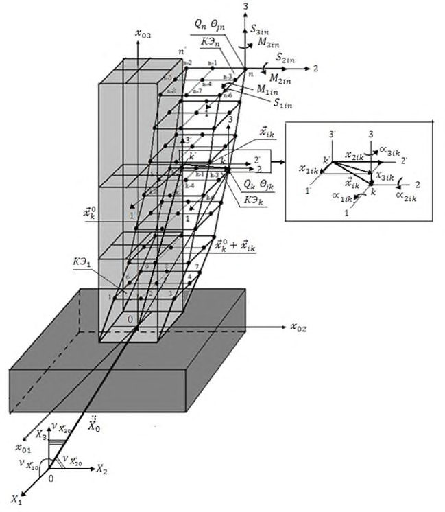
Рисунок 7.2 -i -я форма колебаний консольной РДМ
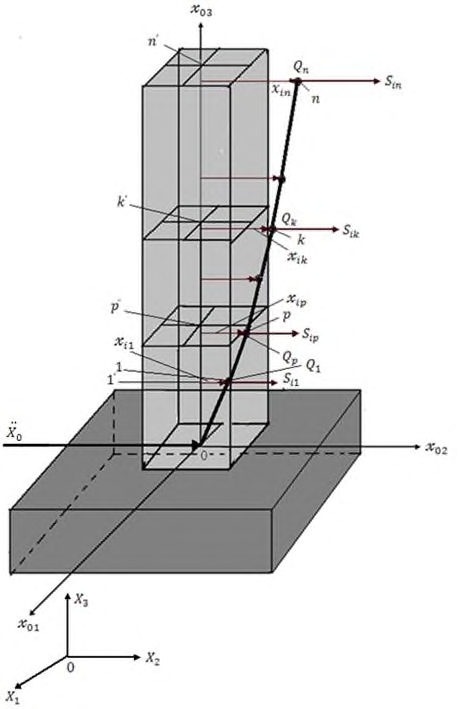
7.9.2.8 Сейсмическая нагрузка высотного здания для диагональной матрицы сосредоточенных в узлах масс РДМ при упругом деформировании конструкций определяется по формулам:
где g - ускорение силы тяжести;
Qk = gmk - вес k -го узла РДМ, здесь mk - его масса;
- Θ jk - момент инерции массы k -го узла РДМ относительно j -й оси ( j = 1, 2, 3);
- A - коэффициент, значения которого следует принимать равными 0,1; 0,2; 0,4 для расчетной сейсмичности 7, 8, 9 баллов соответственно;
- β i - коэффициент динамичности для i -й формы собственных колебаний здания, определяемый по данным ДСР и СМР с учетом грунтовых и гидрогеологических условий площадки строительства, согласно соответствующим нормативным документам, регламентирующим выполнение этих изысканий. При отсутствии таких данных на предварительных стадиях проектирования допускается определять по 7.9.2.9;
- K ψ -коэффициент, корректирующий учет рассеяния энергии при колебаниях здания, принимаемый по таблице 7.6;
- η l jik и η l jik -коэффициенты пространственных форм колебаний, учитывающие приведение сейсмического воздействия с l -й ориентацией к k -му узлу РДМ для i -й формы собственных колебаний здания в направлении и относительно j -й оси ( j = 1, 2, 3).
Примечание - Скалярный вид формул (7.6), (7.7) и (7.8), (7.9), обладающий наглядностью физической сути проблемы имеет место (и в принципе возможен) только для диагональной матрицы масс. Скалярные развертки (7.6), (7.7) и (7.8), (7.9) являются частным случаем общей векторно-матричной формы аналогичных, но более формализованных и громоздких выражений, которые удобнее программируются и поэтому заложены в большинстве вычислительных комплексов. Векторно-матричные аналоги (7.6), (7.7) и (7.8), (7.9) следует рассматривать в научно-прикладной литературе. Программирование вычислительных комплексов также возможно на основе формул (7.6), (7.7) и (7.8), (7.9). В таких случаях РДМ формулируется на основе динамики системы упруго соединенных твердых тел с диагональными матрицами масс.
- 7.9.2.9 При отсутствии данных ДСР и СМР площадки строительства на предварительных стадиях проектирования зданий высотой до 100 м допускается определять значения коэффициента динамичности β i в зависимости от расчетного периода собственных колебаний Ti здания для i -й формы по формулам (7.8) и (7.9) или рисунку 7.3.
Рисунок 7.3
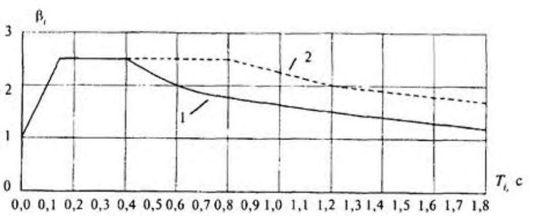
Для грунтов категорий I и II по сейсмическим свойствам (кривая 1 ):
- при Тi
- при 0,1 с < Тi < 0,4 с
- при Тi ≥ 0,4 с
Для грунтов категории III по сейсмическим свойствам (кривая 2 ):
- при Тi ≤ 0,1 с
- при 0,1 с < Тi < 0,8 с
- при Тi ≥ 0,8 с
Во всех случаях значения Тi следует принимать не менее 0,8.
7.9.2.10 Для зданий, рассчитываемых по пространственной РДМ, коэффициенты форм колебаний определяют по следующим формулам:
где xjik и α jik - перемещения и углы поворота k -го узла РДМ по i -й форме собственных колебаний в направлении и относительно j -й оси ( j = 1, 2, 3);
- η l j -коэффициенты приведения сейсмического воздействия с l -й ориентацией к i -й форме собственных колебаний РДМ.
- 7.9.2.11 Для зданий, рассчитываемых по пространственной РДМ с диагональной матрицей сосредоточенных масс, при учете только ускорения поступательного движения всего массива грунтового основания при высоких фазовых скоростях распространения сейсмических волн коэффициенты приведения воздействия с l -й ориентацией следует определять по формуле
̈
̈ где ν l Ẍj 0 (j = 1, 2, 3) - направляющие косинусы l -й ориентации вектора ускорения поступательного движения грунтового основания 𝑋 ⃗ 0 (см. рисунок 7.1), удовлетворяющие условию нормировки
̈
Для меньших значений фазовых скоростей распространения сейсмических волн при определении коэффициентов приведения воздействия η l i по формуле (7.18) необходимо учитывать волновой характер пространственной модели сейсмического воздействия.
Примечания - Все вопросы учета пространственного волнового характера сейсмического воздействия приведены в научно-прикладной литературе, где даны также соответствующие методы расчета зданий и сооружений при таких моделях воздействий.
При сейсмичности площадки 8 баллов и более, повышенной только в связи с наличием грунтов категории III, к значениям нагрузки по формулам (7.6), (7.7), определенным с применением формулы (7.18) без учета волнового характера сейсмического
воздействия, вводится множитель 0,7, учитывающий нелинейное деформирование грунтов при сейсмических воздействиях.
7.9.2.12 Значения направляющих косинусов ν l Ẍj 0, определяющие наиболее опасные ориентации сейсмического воздействия согласно 7.9.2.4 для рассчитываемого высотного здания и реализующие максимумы динамической реакции для учитываемых форм колебаний, вычисляют исходя из максимумов формулы (7.18) с учетом формулы (7.19).
Примечание - Процедуры вычисления направляющих косинусов, определяющих опасные ориентации сейсмического воздействия, в т. ч. с учетом его волнового пространственного характера, приведены в научно-прикладной литературе.
7.9.2.13 Для каждой учитываемой i -й формы собственных колебаний РДМ определяют собственную опасную ориентацию воздействия с направляющими косинусами ν i Ẍj 0, при которой реализуются максимумы всех параметров динамической реакции (силы, моменты, перемещения, углы поворотов и др.) по данной форме колебаний. Для других форм колебаний ориентация воздействия с направляющими косинусами ν i Ẍj 0 не приводит к максимумам параметров динамической реакции. Динамическая реакция по этим формам колебаний тем больше, чем ближе по пространственному характеру они совпадают с i -й формой. Для каждой расчетной опасной ориентации воздействия с направляющими косинусами ν i Ẍj 0 число учитываемых форм колебаний определяется соотношением интегральных параметров динамической реакции. Значения этих соотношений зависят от характера спектра собственных форм колебаний. Минимальное значение данного соотношения в процентах по отношению к i -й форме, для которой оно равно 100 %, определяет верхнее число учитываемых форм при рассматриваемой опасной ориентации воздействия.
Примечание - Процедуры определения требуемого числа учитываемых форм колебаний приведены в научно-прикладной литературе.
Таблица 7.5 Коэффициенты K 1
| Тип конструкций | Для зданий высотой, м | Для зданий высотой, м |
|---|---|---|
| здания | до 100 | выше 100 |
| 1 Здания и сооружения, в конструкциях которых повреждения или неупругие деформации не допускаются | 1 | 1 |
| 2 Здания и сооружения, в конструкциях которых могут быть допущены остаточные деформации и повреждения, затрудняющие нормальную эксплуатацию, при обеспечении сохранности людей и сохранности оборудования, возводимые: - со стальным каркасом и железобетонным монолитным ядром жесткости или диафрагмами, со сталежелезобетонным каркасом - с железобетонным монолитными каркасом и ядром | 0,25 | 0,4 |
| жесткости или диафрагмами | 0,22 | 0,4 |
7.9.2.14 Для зданий, рассчитываемых по консольной РДМ (см. рисунок 7.2), коэффициенты форм колебаний при поступательном сейсмическом воздействии по одной горизонтальной оси без учета моментов инерции масс уровней (этажей) следует определять как частный случай формул (7.16), (7.18) при j = l = 1, ν l Ẍj 0 = 1 и Θ jp = 0 в виде
где xik и xip - перемещения k -го, p -го уровней РДМ (этажей здания) по i -й форме собственных колебаний.
Таблица 7.6 Коэффициенты K ψ
| Характеристика конструктивной схемы высотного здания | K ψ |
|---|---|
| Здания небольших размеров в плане при h / b ≥1/7 | 1,8 |
| Здания c размерами в плане при h / b < 1/7 | 1,5 |
Примечание h - высота здания от фундамента до оси ригеля верхнего перекрытия; b - размер здания в плане вдоль учитываемого сейсмического воздействия.
- 7.9.2.15 Консольные конструкции, масса которых по сравнению с массой здания незначительна (балконы, козырьки, консоли для навесных стен и т. п. и их крепления), следует рассчитывать на вертикальную сейсмическую нагрузку при значении βη = 5.
- 7.9.2.16 Конструкции, возвышающиеся над зданием или сооружением и имеющие по сравнению с ним незначительные сечения и массу (парапеты, фронтоны и т. п.), а также крепления памятников, тяжелого оборудования, устанавливаемого на первом этаже, следует рассчитывать с учетом горизонтальной сейсмической нагрузки, вычисленной без учета динамических эффектов, при значении коэффициента динамичности β = 5.
- 7.9.2.17 Стены, панели, перегородки, соединения между отдельными конструкциями, а также крепления технологического оборудования следует рассчитывать на горизонтальную сейсмическую нагрузку без учета динамических эффектов, но с учетом фактических коэффициентов динамичности для несущих конструкций, значения которых следует принимать не менее 2.
- 7.9.2.18 При расчете конструкций на прочность и устойчивость помимо коэффициентов условий работы, принимаемых в соответствии с действующими нормативными документами, следует вводить дополнительно коэффициент условий работы m кр путем деления значений усилий на данный коэффициент, определяемый по таблице 7.7.
Таблица 7.7 Коэффициент условий работы
| Характеристика конструкций | Значения m кр |
|---|---|
| Расчеты на прочность | |
| 1 Стальные, деревянные, железобетонные с жесткой арматурой | 1,3 |
СП 267.1325800.2016
| 2 Железобетонные со стержневой и проволочной арматурой, кроме проверки на прочность наклонных сечений | 1,2 |
|---|---|
| 3 Железобетонные при проверке на прочность наклонных сечений | 1,0 |
| 4 Каменные, армокаменные и бетонные при расчете: - на внецентренное сжатие - на сдвиг и растяжение | 1,0 0,8 |
| 5 Сварные соединения | 1,0 |
| 6 Болтовые и заклепочные соединения | 1,1 |
| Расчеты на устойчивость | |
| 7 Стальные элементы гибкостью свыше 100 | 1,0 |
| 8 Стальные элементы гибкостью до 20 | 1,2 |
| 9 Стальные элементы гибкостью от 20 до 100 | От 1,2 до 1,0 по интерполяции |
Примечание - При расчете стальных и железобетонных конструкций, подлежащих эксплуатации в неотапливаемых помещениях или на открытом воздухе при расчетной температуре ниже минус 40 °С, следует принимать m кр = 0,9, в случае проверки прочности наклонных сечений m кр = 0,8.
7.9.2.19 При расчете зданий и сооружений длиной или шириной более 30 м по консольной РДМ помимо сейсмической нагрузки, определяемой по 7.9.2.6 и 7.9.2.7 [формулы (7.6) и (7.8)], необходимо учитывать крутящий момент относительно вертикальной оси здания или сооружения, проходящей через его центр жесткости. Значение расчетного эксцентриситета между центрами жесткостей и масс зданий или сооружений в рассматриваемом уровне следует принимать не менее 0,1 В , где В - размер здания или сооружения в плане в направлении, перпендикулярном к действию силы Sik .
8Конструктивные решения
8.1Основания и фундаменты
8.1.1 Общие положения
- 8.1.1.1 Требования настоящего раздела распространяются на проектирование оснований и фундаментов зданий высотой более 75 м, в т. ч. высотные части зданий в составе разноэтажных комплексов.
- 8.1.1.2 Основания, фундаменты и подземные части высотных зданий следует проектировать в соответствии с требованиями [1], [4], [5], ГОСТ 27751, СП 20.13330, СП 22.13330, СП 24.1330, СП 45.13330 и настоящего свода правил.
- 8.1.1.3 При геотехнической оценке площадки строительства, осуществляемой на подготовительном этапе строительства согласно 5.7, выполняют инженерно-геологические изыскания для принятия решений относительно выбора площадки строительства согласно 8.1.2.2, определяют сложность инженерно-геологических условий, оценивают предполагаемое проектное решение и способы выполнения геотехнических работ, а также их потенциальную опасность для геологической среды, окружающей застройки и инженерных коммуникаций.
По результатам геотехнической оценки площадки строительства могут быть откорректированы глубина заложения ограждающей конструкции котлована и фундаментов, размеры в плане проектируемого строительства, расположение и ориентация на площадке строительства отдельных частей высотного комплекса, изменение или корректировка конструктивной схемы и расположения ядра (ядер) жесткости высотного здания, определены основные мероприятия по недопущению развития ЧС.
- 8.1.1.4 Проектно-изыскательские работы для проектирования оснований и фундаментов необходимо выполнять в такой последовательности:
- анализ архивных материалов инженерно-геологических изысканий и выполнение инженерно-геологических изысканий на предпроектной стадии с бурением скважин согласно 8.1.2.5, 8.1.2.7;
- разработка концептуальных предложений;
- разработка технических заданий и программ инженерно-геологических и инженерно-геотехнических изысканий, в т. ч. испытания опорных конструкций (свай и баретт) в случае применения фундаментов глубокого заложения;
- проведение инженерно-геологических (согласно 8.1.2.6-8.1.2.8) и инженерно-геотехнических изысканий, в т. ч. испытание опорных конструкций при их применении;
- выполнение геотехнического обоснования проектных решений;
- выполнение расчетного обоснования проектных решений;
- создание геомеханической модели и оценка влияния строительства на окружающую застройку и подземные коммуникации;
- создание гидрогеологической модели и выполнение прогноза изменения гидрогеологической ситуации на площадке строительства;
- разработка проекта фундамента и программы мониторинга на стадии проектной документации;
- геотехническая экспертиза проекта;
- разработка проекта фундамента на стадии рабочей документации.
- 8.1.1.5 В процессе геотехнического обоснования проектных решений обосновывают выбор расчетной программы, модели и параметров грунта для выполнения геотехнических расчетов, выполняют их верификацию в соответствии с требованиями СП 22.13330, рассматривают возможные варианты строительства и обосновывают принятое проектное решение.
- 8.1.1.6 В процессе расчетного обоснования выполняют совместные расчеты в пространственной постановке системы «основание - фундамент сооружение».
- 8.1.1.7 Программа геотехнического мониторинга должна отвечать правилам, изложенным в СП 22.13330 и приложении В.
- 8.1.1.8 Геотехническую экспертизу разрабатываемой документации по объекту необходимо осуществлять, начиная с разработки технических заданий и программ инженерно-геологических и инженерно-геотехнических изысканий.
- 8.1.1.9 Изыскания, проектирование и строительство высотных зданий высотой 100 м и более следует выполнять в составе работ по НТС со стороны профильных научных организаций в соответствии с СП 22.13330. В состав работ по НТС на стадии проектно-изыскательских работ кроме сопровождения работ, указанных в 8.1.1.4, могут быть включены:
- разработка нестандартных методов расчета и анализа;
- оценка геологических рисков;
- прогноз состояния оснований и фундаментов проектируемого объекта с учетом всех возможных видов воздействий;
- выявление возможных сценариев аварийных ситуаций и разработка мероприятий, не допускающих их развитие;
- разработка ТР на специальные виды работ;
- выполнение опытно-исследовательских работ.
- 8.1.1.10 В процессе строительства в состав работ по НТС строительства входят следующие виды работ:
- экспертиза ППР и ТР на выполнение геотехнических видов работ;
- отработка технологии выполнения геотехнических работ в соответствии с проектным решением;
- выборочный контроль качества выполнения геотехнических работ;
- оперативное решение текущих задач, возникающих в процессе выполнения геотехнических работ;
- обобщение и анализ результатов всех видов геотехнического мониторинга, их сопоставление с результатами прогноза;
- оперативная разработка рекомендаций или корректировка проектных решений на основании данных геотехнического мониторинга при выявлении отклонений от результатов прогноза.
- 8.1.1.11 При проектировании фундаментов высотных зданий необходимо учитывать следующие особенности:
- давление по подошве фундамента высотных зданий может быть существенно выше, чем для зданий высотой до 75 м, что требует проведения специальных лабораторных и полевых изысканий;
- при больших нагрузках (1-2 МПа), передаваемых на грунт основания, требуется учитывать в расчете прочностные и деформационные характеристики скальных и нескальных грунтов с Е > 100 МПа, считающихся несжимаемыми в соответствии с СП 22.13330, а также увеличенную зону распределения напряжений в грунте как по глубине, так и по ширине за контур фундамента, что может привести к увеличению слоев грунта, воспринимающих нагрузку от фундамента. Особенно важно это учитывать при неравномерном залегании слоев;
- увеличение размеров (глубины и ширины) сжимаемой толщи в массиве грунта приводит к увеличению сроков завершения консолидации грунта и растягиванию процесса осадки во времени;
- в случае если основание сложено грунтами с разными коэффициентами консолидации (как первичной, так и вторичной), необходимо учитывать возможность возникновения в результате этого неравномерного напряженнодеформированного состояния грунта для промежуточной стадии консолидации, неодновременное окончание процессов консолидации различных видов грунтов и, как следствие, крен здания, превышающий предельные значения;
- увеличение размеров деформируемой области грунта основания приводит к оказанию большего влияния на окружающие здания и сооружения, а также водонесущие коммуникации, что необходимо учитывать в расчете.
8.1.2 Особенности инженерно-геологических изысканий
8.1.2.1 Инженерно-геологические изыскания согласно СП 45.13330 выполняют для принятия решений относительно выбора площадки строительства и подготовки проектной документации.
- 8.1.2.2 В процессе инженерно-геологических изысканий для принятия решений относительно выбора площадки строительства осуществляют анализ архивных материалов и, при необходимости, выполняют инженерногеологические изыскания для оценки общей пригодности площадки к строительству и изменений в геологической среде, которые могут быть вызваны производством предполагаемых работ.
8.1.2.3 Инженерно-геологические изыскания для подготовки проектной документации выполняют в два этапа: предпроектный и проектный.
- 8.1.2.4 Предпроектный этап инженерно-геологических изысканий необходим для разработки концептуальных предложений, технических заданий и программ инженерно-геологических и инженерно-геотехнических изысканий, проектный - для разработки проектной документации.
- 8.1.2.5 На предпроектном этапе инженерно-геологических изысканий расстояние между скважинами устанавливают не более 50 м, а их количество - не менее двух на противоположных сторонах площадки строительства.
- 8.1.2.6 Количество скважин на проектном этапе инженерногеологических изысканий следует устанавливать не менее пяти: четыре по углам и одна в центре территории, размеры которой должны превышать плановые размеры основания надземной части высотного здания на 0,5 b , где b - ширина подошвы фундамента; при этом расстояние между ними должно быть не более 20 м. Размещение скважин в плане выбирают так чтобы обеспечить оценку неоднородности напластования грунтов, а также учитывать конструктивные особенности здания и характер распределения нагрузки.
- 8.1.2.7 Глубину бурения скважин как на предпроектном, так и на проектном этапе, а также глубину зондирования и геофизических исследований следует определять согласно СП 45.13330 с учетом следующих требований.
При применении плитного фундамента глубину разведочных и инженерно-геологических скважин следует определять с учетом глубины котлована d и сжимаемой толщи h c так, чтобы она составляла не менее 1,5 h c + d ; при этом при нагрузках Р на плиту от 400 до 600 кПа глубина бурения должна быть ниже глубины заложения ее подошвы не менее чем на указанные ниже значения:
- при ширине плиты b = 10 м - (1,3-1,6) b - для квадратной плиты и (1,61,8) b - для прямоугольной с соотношением сторон η = 2;
- при ширине плиты b = 20 м - (1,0-1,2) b - для квадратной плиты и (1,21,4) b - для прямоугольной с соотношением сторон η = 2;
- при ширине плиты b 30 м - (0,9-1,05) b - для квадратной плиты и (1,01,25) b -для прямоугольной с соотношением сторон η = 2.
Для промежуточных значений b , Р и η или для значений этих величин, выходящих за указанные пределы, глубину выработок назначают по интерполяции и экстраполяции или непосредственно определяют по h c .
Для свайного и комбинированного свайно-плитного фундаментов глубина инженерно-геологических выработок должна быть выбрана не менее чем на 10 м ниже проектируемой глубины заложения нижних концов свай при рядовом их расположении и нагрузках на куст свай до 3 МН и на 15 м ниже - при нагрузках на куст более 3 МН и свайных полях размерами до 10×10 м. При свайных полях размерами более 10×10 м и применении комбинированных свайно-плитных фундаментов глубину выработок следует принимать как для плитного фундамента на уровне нижнего конца свай.
- 8.1.2.8 В процессе инженерно-геологических изысканий следует выявлять геологические разломы, складчатые структуры, области разрушения или повышенной трещиноватости скальных грунтов, а также иные признаки древней и современной тектонической деятельности. Для этого рекомендуется применять геофизические методы исследований. В результаты инженерногеологических изысканий должны быть включены выводы о современной тектонической активности площадки.
8.1.2.9 Не допускается размещение высотных зданий на площадках с выявленной современной тектонической активностью, проявлениями опасных геологических процессов (оползни, сели, лавины, карст и др.), а также на подрабатываемых территориях без мероприятий, обеспечивающих требуемую степень безопасности здания.
- 8.1.2.10 При изысканиях для проектирования оснований и фундаментов высотных зданий рекомендуется полевыми и лабораторными методами дополнительно к основным характеристикам грунта согласно СП 22.13330.2011 (подраздел 5.3) определять следующие физико-механические характеристики грунтов:
- а) в лабораторных условиях для дисперсных грунтов:
- 1) в компрессионном приборе:
- модуль деформации Е для первичной ветви нагружения и ветви вторичного (повторного) нагружения Ее , которое следует выполнять для тех же диапазонов напряжений, что и первичное;
- давление предварительного уплотнения рс и коэффициент переуплотнения грунта OCR (в случае наличия в основании переуплотненных грунтов);
- параметры грунта, необходимые для расчета первичной и вторичной консолидаций глинистых грунтов;
- коэффициенты механической и фильтрационной анизотропии (в случае наличия в основании анизотропных грунтов);
- в приборе трехосного сжатия (стабилометре):
- коэффициент поперечной деформации ν;
- прочностные характеристики: угол внутреннего трения , удельное сцепление с и сопротивление недренированному сдвигу сu , определяемые для условий, соответствующих всем этапам строительства и эксплуатации здания;
- б) в лабораторных условиях для скальных и замороженных грунтов:
- предел прочности на одноосное сжатие R c ;
- модуль деформации E ;
- направление слоистости и прочностные характеристики: угол внутреннего трения и удельное сцепление с вдоль и поперек слоистости;
- прочностные и деформационные характеристики заполнителя;
- в) в полевых условиях для дисперсных грунтов:
- 1) испытания штампом:
- модуль деформации Е для первичной ветви нагружения и ветви вторичного (повторного) нагружения Ее ;
- параметры ползучести глинистых грунтов;
- 2) прессиометрические исследования:
- модуль деформации Е для первичной ветви нагружения и ветви вторичного (повторного) нагружения Ее ;
- 3) статическое зондирование, в т. ч. с датчиком порового давления:
- степень консолидации;
- коэффициент переуплотнения грунта;
- г) в полевых условиях для скальных грунтов:
- модуль трещиноватости mj ;
- показатель качества породы RQD ;
- коэффициент выветрелости Kwr .
При большой высоте слоя грунта (более 10 м) необходимо определять изменение механических характеристик грунта по глубине.
Кроме этого следует определять другие характеристики грунта, необходимые для расчета с использованием нелинейных моделей грунта.
- 8.1.2.11 Определение деформационных характеристик следует осуществлять на основе комплекса лабораторных исследований, включающих в себя одновременно компрессионные и стабилометрические испытания, а также полевых исследований, включающих в себя испытания штампом или прессиометром. В случае испытания прочных грунтов и/или на большой глубине модуль деформации следует принимать по прессиометрическим испытаниям с введением коэффициента перехода к штамповым испытаниям с учетом анизотропии n a (при ее наличии), который определяется путем проведения параллельных испытаний (определения модуля деформации Е ) образцов грунта, вырезанных в вертикальном и горизонтальном направлениях, в компрессионных приборах.
- 8.1.2.12 Грунты с модулем деформации 100 МПа и более, в т. ч. скальные, следует рассматривать как сжимаемые, и ограничивать ими глубину сжимаемой толщи не допускается.
- 8.1.2.13 Учитывая большую глубину инженерно-геологических изысканий и возможное расструктурирование образцов грунта при их отборе, преимущество при определении параметров грунтов (при различии в их значениях, определенных разными методами) должно быть отдано полевым методам испытаний грунта (штамповым, прессиометрическим, сваями, сдвигом целика и др.).
- 8.1.2.14 При проведении лабораторных испытаний следует оценивать качество отбора образца грунта. До проведения испытаний необходимо восстанавливать начальное напряженно-деформированное состояние с учетом истории нагружения.
- 8.1.2.15 Для контроля качества инженерно-геологических испытаний не менее 10 % всего объема исследований следует проводить параллельно силами другой организации.
- 8.1.2.16 Учитывая значительную глубину сжимаемой толщи основания высотных зданий, допускается при специальном обосновании в программе изысканий часть полевых исследований грунтов (зондирование, испытания грунтов штампами) выполнять со дна котлована.
- 8.1.2.17 При применении свайных и комбинированных свайно-плитных фундаментов следует выполнять испытания свай статическими нагрузками в объеме, зависящем от их общего числа и неоднородности основания, но не менее четырех испытаний сваями на фундамент высотного здания.
- 8.1.2.18 Испытания грунта сваями могут быть выполнены как при приложении статической нагрузки к верхнему концу сваи согласно ГОСТ 5686, так и методом опускных домкратов.
- 8.1.2.19 При проведении испытаний грунта сваями механические характеристики грунта уточняются путем обратных расчетов. Для этого сваи должны быть снабжены системой датчиков, позволяющих фиксировать распределение усилий и перемещений вдоль конструкции сваи. Их число и расстояние между ними выбирается исходя из размеров свайного фундамента (поперечные размеры и длина), нагрузок и грунтовых условий таким образом, чтобы можно было определить сопротивление по боковой поверхности сваи и нижнему концу, а также выполнить обратный расчет для определения уточнения механических характеристик грунта.
- 8.1.2.20 В случае применения опускных домкратов их рекомендуется устанавливать в двух уровнях в целях проведения раздельного испытания грунта сваями по нижнему концу и боковой поверхности. Для этого нижний уровень располагают на минимально возможном расстоянии от нижнего конца сваи для определения механических характеристик грунта и сопротивления сваи по нижнему концу, верхний - на расстоянии по высоте от нижнего, достаточном для определения механических характеристик грунта и сопротивления по боковой поверхности сваи.
8.1.3 Особенности проектирования
- 8.1.3.1 В качестве фундаментов высотных зданий применяют плитные, свайные и плитно-свайные фундаменты. Проектные решения их должны обеспечивать невозможность наступления предельного состояния с требуемым коэффициентом надежности.
- 8.1.3.2 Проектирование оснований и фундаментов с использованием расчетов, а также экспериментальных исследований и отдельных положений наблюдательного метода является основным способом обеспечения требований надежности.
- 8.1.3.3 Расчетные модели, используемые для проектирования оснований и фундаментов, должны быть верифицированы.
- 8.1.3.4 Для верификации модели грунта и уточнения грунтовых условий в качестве основы применяют экспериментальные исследования.
- 8.1.3.5 В качестве экспериментальных исследований для свайных фундаментов используют результаты испытания грунта сваями согласно 8.1.2.18-8.1.2.20.
- 8.1.3.6 Для плитных фундаментов в качестве экспериментальных исследований применяют результаты испытания грунта моделями фундамента, штампами или прессиометрами. Данные исследования, наряду со стабилометрическими испытаниями, служат основой для верификации расчетной модели и параметров грунта.
- 8.1.3.7 Для плитно-свайных фундаментов экспериментальные исследования включают в себя как испытания грунта сваями согласно 8.1.2.18-8.1.2.20, так и экпериментальные исследования для плитных фундаментов согласно 8.1.3.6.
- 8.1.3.8 Наблюдательный метод следует применять в части проверки расчетной модели, параметров грунта, нагрузок и их распределения, последовательности и технологии выполнения работ путем обратных расчетов по результатам мониторинга.
- 8.1.3.9 При проектировании оснований и фундаментов высотных зданий и комплексов должны быть рассмотрены все проектные ситуации и их сценарии как на стадии строительства сооружения, так и на стадии эксплуатации.
- 8.1.3.10 Для каждой проектной ситуации и их сценария следует проверить, что невозможно достижение ни одного из предельных состояний в соответствии с указаниями ГОСТ 27751 и настоящего свода правил.
- 8.1.3.11 Предельные значения совместных деформаций системы «основание - фундамент - сооружение» должны быть установлены исходя из условий прочности, устойчивости и трещиностойкости конструкций, принимая во внимание технологические и архитектурные требования (работа лифтов, водонесущих коммуникаций, осадка соседних зданий и сооружений в случае образования единого подземного пространства и др.), которые должны быть указаны в задании на проектирование.
- 8.1.3.12 Случайные и систематические изменения свойств грунта основания в пространстве следует учитывать путем введения коэффициента надежности по грунту для модуля деформации грунта согласно 8.1.3.13.
- 8.1.3.13 При проектировании оснований зданий высотой 100 м расчетные значения модуля деформации грунта E следует принимать при коэффициенте надежности по грунту γ g = 1,1, при высоте здания 500 м и более следует принимать γ g = 1,2. Для промежуточных значений высоты здания γ g следует определять по интерполяции.
- 8.1.3.14 Для снижения неравномерных осадок и крена здания необходимо:
- элементы жесткости размещать симметрично центру тяжести здания.
Примечание - Допускается в целях снижения влияния жесткостных элементов здания на осадку фундамента, устраивать их в последнюю очередь при соответствующем обосновании расчетом, обеспечив в ППР компенсационные мероприятия на период строительства;
- высотное здание, в случае если площадь его нижнего подземного этажа меньше площади котлована, размещать в центре котлована, или на расстоянии, исключающем влияние ограждения котлована;
- при одновременном возведении различных частей многофункционального комплекса предусматривать специальные мероприятия, снижающие неравномерные осадки согласно СП 22.13330.2011 (раздел 10);
- сваи размещать под нагрузкой.
- 8.1.3.15 Осадочные швы между разнонагруженными частями зданий следует выполнять при соответствующем технико-экономическом и расчетном обосновании.
- 8.1.3.16 При проектировании свайных фундаментов необходимо учитывать перегрузку крайних и угловых свай относительно центральных.
Примечание - В соответствии с результатами мониторинга и выполненных расчетов крайние и угловые сваи воспринимают усилия в два-три раза больше, чем центральные. В связи с этим они выполняются короче, или применяются другие мероприятия (изменяются их диаметр или сопротивление по боковой поверхности).
- 8.1.3.17 При проектировании плитно-свайных фундаментов особое внимание должно быть уделено подготовке основания под плиту в целях ее максимального включения в работу в соответствии с требованиями СП 24.13330.
- 8.1.3.18 Систему гидроизоляции следует выполнять так, чтобы она смогла без разрушения воспринимать давление и неравномерное перемещение отдельных элементов подземной части высотного здания и комплекса с применением специальных герметизирующих элементов, компенсирующих максимальную осадку фундаментов, между которыми выполняется осадочный шов.
- 8.1.3.19 Для свай следует применять бетоны класса прочности на сжатие не менее В35, водонепроницаемостью не менее W8 и подвижностью П4, для фундаментных плит - тяжелые бетоны класса прочности на сжатие не менее В40 и водонепроницаемостью не менее W8.
- 8.1.3.20 В случае отсутствия жесткого соединения конструкций здания с ограждающей конструкцией котлована должны быть предусмотрены меры, позволяющие конструкциям здания свободно перемещаться относительно ограждающей конструкции котлована с сохранением гидроизоляции.
- 8.1.3.21 При проектировании сплошных большеразмерных плит высотных зданий и комплексов при одном из их размеров в плане больше 50 м следует учитывать возможные их горизонтальные перемещения в результате температурных деформаций и усадки бетона, а при свайных фундаментах учитывать дополнительные напряжения, которые могут развиться в них в результате таких перемещений.
- 8.1.3.22 Для исключения передачи изгибающего момента и повышения качества устройства гидроизоляции допускается применять двуслойный ростверк (см. приложение Б) либо иные обоснованные технические решения.
8.1.4 Особенности расчета
- 8.1.4.1 Расчеты фундаментов высотных зданий выполняют по двум группам предельных состояний в соответствии с СП 22.13330 и СП 24.13330.
- 8.1.4.2 При расчете по второй группе предельных состояний значения прочностных характеристик грунта следует принимать с доверительной вероятностью, равной 0,9, а коэффициент надежности по грунту к модулю деформации E - в соответствии с 8.1.3.13.
- 8.1.4.3 Определение значений нагрузок на основание и расчеты оснований, фундаментов и подземных частей здания следует выполнять с учетом совместной работы системы «основание - фундамент - здание».
- 8.1.4.4 Расчеты основания по несущей способности следует выполнять во всех случаях в соответствии с методиками, изложенными в СП 22.13330 и СП 24.13330, рассматривая основные сочетания расчетных значений нагрузок, а при наличии особых нагрузок - дополнительно особое сочетание расчетных значений нагрузок.
- 8.1.4.5 При расчете оснований фундаментов высотных зданий по деформациям следует:
- учитывать зависимость деформационных и прочностных характеристик грунтов от напряженного состояния и длительности приложения нагрузок;
- расчет основания выполнять на основное сочетание постоянных, длительных и кратковременных нагрузок;
- расчет кренов фундаментов выполнять на основное сочетание постоянных, длительных и кратковременных (преимущественно ветровых) нагрузок. При этом величина крена должна складываться из крена от действия постоянных и длительных нагрузок i l и кратковременных i s .
При определении величины i l следует принимать расчетный модуль деформации грунта E , а при определении i s - расчетное значение модуля деформации грунта по ветви вторичного нагружения Ее .
- 8.1.4.6 При расчетах фундаментов необходимо учитывать следующие факторы:
- взаимодействие с несущими конструкциями;
- этапность и процесс строительства;
- подъем дна котлована;
- влияние ограждающей конструкции;
- взаимовлияние между фундаментами высотного здания и окружающей застройки, в т. ч. при строительстве разноэтажных комплексов;
- случайная неоднородность грунта основания;
- переуплотнение грунта;
- развитие осадки во времени;
- механическая анизотропия.
- 8.1.4.7 Расчет оснований фундаментов в случае опережающего строительства высотных зданий относительно примыкающих малоэтажных частей многофункционального комплекса следует выполнять для случая, соответствующего отсутствию пригрузки и распора от малоэтажной части комплекса.
- 8.1.4.8 Для зданий высотой более 100 м следует выполнять параллельный расчет независимой организацией с применением программных комплексов, реализующих МКЭ. Данный расчет выполняется с помощью программных комплексов, разработанных независимо от программных комплексов, используемых для основного расчета.
8.1.4.9 Расчетное обоснование вариантов фундаментов и подземной части высотного здания, предварительный расчет осадки и их неравномерности, а также оценку общей устойчивости фундамента на стадии концептуальных решений допускается выполнять с учетом совместной работы системы «основание - фундамент - здание» по упрощенным моделям, например путем моделирования одного этажа приведенной жесткости.
8.1.4.10 Расчет на стадии проектной документации должен выполняться численным методом в соответствии с нормативными требованиями в объемной постановке с учетом совместной работы системы «основание фундамент - здание» с учетом процесса строительства каркаса здания и нелинейной работы каркаса. В случае проектирования многофункционального комплекса необходимо учитывать этапность возведения отдельных зданий и сооружений комплекса.
8.1.4.11 Глубину сжимаемой толщи следует определять в результате расчетов согласно СП 22.13330.2011 (раздел 5). В случае применения нелинейных моделей грунта, учитывающих зависимость модуля деформации от напряженного состояния грунта, зону деформации массива грунта вычисляют автоматически в процессе расчетов.
8.1.4.12 При строительстве на глинистых грунтах необходимо учитывать развитие осадки во времени в результате первичной и вторичной консолидаций на весь период эксплуатации здания.
8.1.4.13 Число свай, их длину и расстановку в свайном поле следует определять на основании численного расчета в объемной постановке. При этом должны выполняться три условия:
- совместная деформация сваи, свайного фундамента и сооружения (осадка, перемещение, относительная разность осадок свай, свайных фундаментов, крен и т. п.) s не должна превышать предельного значения su , определенного согласно 8.1.3.14-8.1.3.16;
- расчетная нагрузка N , передаваемая на сваю (продольное усилие, возникающее в ней от расчетных нагрузок, действующих на фундамент при наиболее невыгодном их сочетании), не должна превышать несущую способность грунта основания одиночной сваи Fd в соответствии с условием
где γ n - коэффициент надежности по назначению сооружения, принимаемый равным 1,2 и 1,1 для сооружений уровней ответственности I и II соответственно; γ k - коэффициент надежности по грунту, принимаемый в соответствии с СП 24.13330.2011 (пункт 7.1.11).
Примечание - Распределение усилий в сваях в свайном поле следует определять на основании расчетов в объемной совместной постановке системы «основание фундамент - здание». При этом, принимая во внимание зависимость распределения усилий в свайном поле от грунтовых условий и учитывая, что с увеличением механических
(в первую очередь прочностных) характеристик грунта жесткость грунта основания и соответствующим образом соотношение между усилиями в крайних и центральных сваях увеличиваются, расчеты необходимо выполнять с введением коэффициентов надежности по грунту γ k , как в сторону увеличения, так и в сторону снижения механических характеристик грунта, а подбор сечения и армирование следует осуществлять по самому неблагоприятному варианту. Расчет сваи как железобетонной конструкции следует проверять на соответствие требованиям СП 41.13330.
- 8.1.4.14 При расчетах свайных фундаментов необходимо учитывать, наряду с перечисленными в 8.1.4.6 факторами, взаимодействия свай между собой в свайном поле и с грунтом, перегруженность крайних свай относительно центральных, чувствительность (высокую зависимость) результатов расчета к прочностным характеристикам грунта.
- 8.1.4.15 При расчете свайно-плитного фундамента следует учитывать совместную работу сваи и плиты.
8.2Конструктивная система здания
8.2.1 Общие требования
- 8.2.1.1 Конструктивная система высотного здания является совокупностью взаимосвязанных несущих конструктивных элементов, обеспечивающих его прочность, устойчивость и необходимый уровень эксплуатационных качеств.
Конструктивные системы высотных зданий состоят из вертикальных несущих элементов (колонн, пилонов, стен), горизонтальных несущих элементов (плит перекрытий, покрытия, ферм) и фундамента.
- 8.2.1.2 Конструктивные системы высотных зданий выполняют с применением:
- монолитного или сборно-монолитного железобетона;
- стального каркаса;
- стального каркаса в сочетании с монолитным железобетоном;
- сталежелезобетонного каркаса.
Примечание - Сборно-монолитные конструкции следует применять для перекрытий и стен с использованием сборных элементов в качестве несъемной опалубки или как часть несущей конструкции. Применение сборного железобетона допускается при технико-экономическом обосновании только для устройства плит перекрытий, лестничных маршей и площадок.
- 8.2.1.3 Несущие конструктивные системы высотных зданий могут быть выполнены регулярными, с одинаковым шагом колонн и стен по длине, ширине и высоте здания, или нерегулярными в плане и по высоте здания.
Нерегулярную несущую конструктивную систему следует проектировать таким образом, чтобы центр жесткости и центр масс конструктивной системы совпадали (или были близкими) с центром общей площади фундамента. Для обеспечения общей пространственной жесткости и перераспределения усилий в нерегулярных конструктивных системах высотных зданий вводят распределительные конструкции в виде толстых плит, распределительных балок и стен ферм.
- 8.2.1.4 Повышение пространственной жесткости конструктивных систем высотных зданий следует обеспечивать применением:
- развитых в плане и симметрично расположенных диафрагм и ядер жесткости;
- коробчатых (оболочковых) конструктивных систем с несущими наружными стенами по всему контуру здания или часто установленными стальными колоннами;
- конструктивных систем с регулярным расположением несущих конструкций в плане и по высоте здания;
- жестких дисков перекрытий, объединяющих вертикальные несущие конструкции и выполняющих функции горизонтальных диафрагм жесткости при действии ветровых или сейсмических нагрузок;
- жестких узловых сопряжений между несущими конструкциями;
- аутригерных конструкций, которые, как правило, располагают в уровне технических этажей.
Примечание - Наиболее эффективно проектирование аутригерных конструкций в уровне верхних технических этажей и (в зависимости от высоты здания) средних технических этажей для районов сейсмичностью 6 баллов и менее. Для районов строительства сейсмичностью 7, 8 и 9 баллов необходимость использования аутригеров и уровни их расположения определяются расчетом.
- 8.2.1.5 При наличии у высотного здания развитой в плане и малоэтажной стилобатной части, а также разновысоких зданий в высотном комплексе следует предусматривать деформационные осадочные швы, отделяющие их друг от друга.
Также в зависимости от габаритных размеров в плане примыкающих друг к другу зданий и стилобата следует предусматривать температурно-усадочные швы. Требуемые расстояния между температурно-усадочными швами следует устанавливать расчетом.
Отказ от деформационных и температурно-усадочных швов необходимо обосновывать расчетом.
8.2.2 Материалы и соединения несущих конструкций
- 8.2.2.1 Правила выбора материалов для несущих железобетонных конструкций, а также прочностные и деформационные характеристики бетона и стальной арматуры следует принимать согласно СП 63.13330 с дополнениями, приведенными в настоящем своде правил.
- 8.2.2.2 Для несущих конструкций следует предусматривать конструкционные бетоны:
- тяжелый средней плотности от 2200 до 2500 кг/м³ включительно;
- мелкозернистый средней плотности от 1800 до 2200 кг/м³ .
8.2.2.3 В вертикальных несущих железобетонных конструкциях высотных зданий - колоннах, пилонах, стенах и ядрах жесткости - следует применять тяжелые бетоны классов по прочности на сжатие не менее:
В35 - для зданий высотой от 75 до 150 м (включительно);
В45 - для зданий высотой от 150 до 200 м (включительно);
В60 - для зданий высотой от 200 до 250 м (включительно);
В80 - для зданий высотой более 250 м.
В перекрытиях следует применять легкие и тяжелые бетоны классов по прочности на сжатие не менее В30. В ненесущих наружных стенах допускается применять ячеистые, легкие и тяжелые бетоны. Для вертикальных конструкций по высоте здания допускается применять различные классы бетона по прочности на сжатие.
8.2.2.4 Для железобетонных конструкций без предварительного напряжения арматуры в качестве продольной расчетной арматуры следует преимущественно применять стальную арматуру классов А400, А500 и А600; для поперечного и косвенного армирования - А240, А400 и А500.
8.2.2.5 Характеристики конструкционной стали, а также правила выбора материалов для несущих конструкций следует принимать согласно СП 16.13330.2011 (разделы 5 и 6), а сварных и болтовых соединений - согласно СП 16.13330.2011 (раздел 14). Материалы для стальных конструкций назначают в зависимости от группы стальных конструкций по СП 16.13330.2011 (приложение В), при этом для зданий высотой более 100 м номер группы конструкций уменьшают на единицу (для групп 2-4). Для элементов стальных конструкций, работающих в направлении, перпендикулярном плоскости проката, следует принимать группу качества Z35 по ГОСТ 28870-90.
8.2.2.6 Болтовые соединения стальных конструкций (стыки колонн, балок, узлы сопряжения балка-колонна, балка-балка) следует проектировать в виде фрикционных с контролируемым натяжением болтов. Болты следует принимать в соответствии с ГОСТ Р 52643, ГОСТ Р 52644 класса прочности не менее 8.8 (рекомендуется 10.9) исполнения ХЛ с гайками класса прочности не менее 8 (рекомендуется 10) и шайбами.
8.2.2.7 Материалы и их расчетные сопротивления для сварки стальных конструкций следует принимать в соответствии с СП 16.13330.2011 (приложение Г).
8.2.2.8 При расчетах конструкций с учетом нелинейной работы материала, когда необходимо учитывать пластические свойства стали (расчет на устойчивость к прогрессирующему обрушению, расчеты по первой группе предельных состояний), в качестве расчетной диаграммы работы стали следует применять обобщенную расчетную диаграмму, приведенную в СП 266.1325800.
8.2.2.9 Для перекрытий с несъемной опалубкой из стального листа следует применять профили, имеющие конструктивные элементы
(выштамповки) для увеличения степени сцепления металла с бетоном, либо без выштамповок. Для изготовления профилей стального настила перекрытий с несъемной опалубкой применяется рулонная сталь для холодного профилирования по ГОСТ 14918 и ГОСТ Р 52246. Толщина стали для профилей - от 0,7 до 1,5 мм, предел текучести стали - от 230 до 350 Н/мм² , относительное удлинение при разрыве - от 16 % до 22 %.
- 8.2.2.10 Стержневые упоры (стад-болты) выполняют в виде калиброванных стальных стержней диаметром от 10 до 25 мм с круглой головкой, приваренных через профилированный лист к стальной опорной балке плиты. Предел текучести стали стад-болтов - не менее 350 Н/мм² , относительное удлинение при разрыве - не менее 20 %.
8.2.3 Требования к проектированию конструкций
- 8.2.3.1 Проектирование несущих конструкций высотных зданий следует проводить с учетом их расчетного срока службы, который определяется в соответствии с требованиями ГОСТ 27751 в зависимости от класса сооружения.
- 8.2.3.2 Проектирование несущих железобетонных, сталежелезобетонных и стальных конструкций следует проводить в соответствии с требованиями действующих нормативных документов, указаниями настоящего свода правил, заданием на проектирование.
- 8.2.3.3 Размеры сечений колонн, толщину стен диафрагм и ядер жесткости допускается принимать переменными по высоте здания. Гибкость железобетонных и сталежелезобетонных колонн и стен из плоскости [соотношение l 0 / i , где l 0 - расчетная длина, i - радиус инерции поперечного сечения (для стен принимается ширина 1 пог. м)] следует принимать не более 60. Для стальных конструкций гибкость не должна превышать 80.
- 8.2.3.4 При проектировании несущих железобетонных конструкций с гибкой арматурой дополнительно к указаниям действующих нормативных документов следует принимать:
- для колонн - симметричное продольное армирование с расположением арматуры как у граней колонн, так и, при необходимости, внутри колонн; минимальный размер поперечного сечения - 400 мм;
- для пилонов, стен и ядер жесткости - симметричную вертикальную и горизонтальную арматуру, расположенную у боковых граней стен; минимальная толщина пилонов - 250 мм, стен - 200 мм;
- диаметры продольной арматуры в несущих железобетонных конструкциях следует принимать не менее: для колонн - 20 мм; для стен, балок и плит перекрытий - 12 мм;
- толщину защитного слоя бетона рабочей гибкой арматуры следует принимать не менее диаметра арматуры, но не менее 25 мм.
- 8.2.3.5 Обеспечение совместной работы сборных элементов с монолитным бетоном в сборно-монолитных конструкциях следует осуществлять путем устройства шпонок, создания рифленой поверхности сборного элемента и выпусков поперечной арматуры.
8.2.3.6 Стальные конструкции высотных зданий следует проектировать с учетом возможности их разделения на отправочные элементы, не превышающие транспортных габаритов (автомобильных или железнодорожных).
8.2.3.7 Конструкции колонн и балок стальных каркасов следует проектировать прокатными или составными из листа в виде двутавров, коробчатых сечений, крестовых или сплошных прямоугольных сечений из листа. Листовой и фасонный прокат принимается в соответствии с требованиями СП 16.13330 и ГОСТ 27772. Для вертикальных несущих элементов следует принимать стали повышенной и высокой прочности (С390, С440) для нижних этажей, низколегированные стали (С345) для среднего уровня здания и стали обычной прочности (С255) для верхних этажей здания. Внутри замкнутых составных сечений следует предусматривать размещение диафрагм с шагом не более 40 i (где i - то же, что и в 8.2.3.3). При проектировании зданий в районах сейсмичностью 7, 8 и 9 баллов при конструировании узлов следует руководствоваться положениями СП 14.13330.
8.2.3.8 Монтажные стыки стальных колонн, а также сопряжение стальных колонн с опорными плитами следует выполнять с фрезерованными торцами со сварным стыковым соединением либо на фиксирующих накладках (на сварке или болтах). В зависимости от массы отправочного элемента (как правило, не более 15 т) стыки колонн размещают через один-два этажа. Ось стыка располагают на высоте 800-1000 мм от уровня верха перекрытия. При проектировании сварных соединений наличие лобовых швов не допускается.
8.2.3.9 При проектировании стыков стальных колонн следует учитывать возможную перемену знака продольного усилия при локальном разрушении конструкций. Усилие растяжения (при его наличии) следует определять по правилам расчета конструкций на особое сочетание при ЧС по 8.2.4 настоящего свода правил. Болтовое или сварное соединение элементов колонн следует рассчитывать отдельно на два вида условных нагрузок (кроме основного и особого сочетаний):
- на усилие растяжения, равное 25 % сжимающего усилия в стыке;
- на поперечную силу, равную 2 % сжимающего усилия в стыке (независимо вдоль обеих главных осей поперечного сечения).
8.2.3.10 Опорные плиты стальных колонн набирают из отдельных листов и фиксируют между собой на сварке либо выполняют в виде сплошного стального сляба. В любом случае в опорной плите должны быть предусмотрены отверстия для контроля заполнения раствором (бетоном) зазора между опорной плитой и фундаментом. Зазор между фундаментом и опорной плитой до выполнения бетонной подливки должен составлять не менее 150 мм. При бетонировании подливки следует использовать бетоны класса прочности не ниже бетона фундаментной плиты на мелком заполнителе с пластифицирующими добавками, повышающими подвижность бетонной смеси.
8.2.3.11 Проектирование узлов примыкания стальных балок к стальным колоннам выполняют в соответствии со схемой, принятой при расчете здания (жесткое или шарнирное примыкание). Жесткое примыкание балок к стержню колонны выполняется только по одному направлению на типовых этажах здания и может выполняться по двум направлениям в уровнях этажей жесткости (аутригеров). При выполнении жесткого узла на накладках с помощью сварки следует проектировать накладки таким образом, чтобы монтажный шов имел верхнее положение.
8.2.3.12 При проектировании стальных балок, направленных перпендикулярно плоскости фасада, и их шарнирных узлов крепления к колоннам следует дополнительно учитывать силу сжатия, которая передается на балки и узлы при ветровых воздействиях на фасад. Значение данной силы принимают по результатам пространственного расчета здания, но не менее 0,3 % вертикального усилия в наружной колонне, к которой примыкает балка.
8.2.3.13 При проектировании аутригерных стальных конструкций рекомендуется выполнять узлы с учетом рисунка Б.2 (приложение Б). При этом более предпочтительными являются сварные соединения. Следует также учитывать размеры отправочных элементов конструкций ферм и не превышать транспортные габариты. Монтажные сварные или болтовые стыки конструкций следует размещать вне зоны узловых пересечений элементов.
8.2.3.14 Общая толщина монолитной плиты перекрытия по профилированному настилу, который используется в качестве несъемной опалубки, должна быть не менее 125 мм. Толщина бетона над верхней поверхностью гофров настила должна быть не менее 50 мм, над верхним концом анкерного упора - не менее 30 мм. Листы профилированного настила должны соединяться между собой по продольным краям внахлест крайними полками с помощью комбинированных заклепок или самонарезающих винтов диаметром от 4,8 до 5,5 мм с шагом не более 400 мм. Настил должен крепиться к стальным опорным балкам перекрытия самонарезающими винтами или дюбелями диаметром от 4,5 до 6,3 мм в каждом гофре. Ширина нижних полок настила, в гофрах которого располагаются анкерные упоры, должна быть не менее 50 мм. Упоры располагаются симметрично относительно оси опорной балки с шагом по длине балки от 50 до 400 мм. Необходимую звукоизоляцию принимают с учетом 12.3.
8.2.3.15 Защитный слой бетона для арматуры плиты по несъемной опалубке из профилированного настила должен удовлетворять требованиям СП 63.13330.
8.2.3.16 Конструктивные требования к железобетонным конструкциям с жесткой арматурой должны удовлетворять требованиям СП 63.13330.2012
(раздел 10). Толщина защитного слоя для жесткой арматуры должна быть не менее 50 мм. Для конструкций, работающих в агрессивных средах, толщину защитного слоя следует назначать с учетом требований СП 28.13330. При назначении толщины защитного слоя бетона следует также учитывать требования СП 112.13330. Наибольший суммарный процент армирования колонн продольной гибкой арматурой не должен превышать 6 %. В случае применения сталежелезобетонных колонн с жесткой и гибкой арматурой наибольший процент армирования допускается не более 15 %. Если при расчете конструкции в ней возникают изгибающие моменты только от случайных эксцентриситетов, то процент армирования допускается принимать не более 25. Гибкую продольную арматуру следует устанавливать во всех случаях. Диаметр продольных гибких рабочих стержней сжатых элементов монолитных конструкций должен быть от 12 до 40 мм. Стыки гибкой арматуры принимают в соответствии с указаниями СП 63.13330.2012 (подраздел 10.3). Стыки жесткой арматуры должны удовлетворять требованиям СП 16.13330.2011 (раздел 14).
8.2.3.17 При проектировании конструкций следует:
- применять рациональные профили проката, эффективные стали и прогрессивные типы соединений; элементы конструкций должны иметь минимальные сечения, удовлетворяющие требованиям настоящего свода правил, с учетом сортаментов на прокат и трубы;
- предусматривать технологичность и наименьшую трудоемкость изготовления, транспортирования и монтажа;
- учитывать производственные возможности и мощность технологического и кранового оборудования предприятий - изготовителей конструкций, монтажных организаций;
- учитывать допускаемые отклонения от проектных размеров и геометрической формы элементов конструкций при изготовлении и монтаже.
- 8.2.3.18 Безопасность, эксплуатационная пригодность, долговечность конструкций высотных зданий и другие устанавливаемые заданием на проектирование требования должны быть обеспечены выполнением:
- требований к бетону и его составляющим;
- требований к арматуре;
- требований к стали;
- требований к расчетам конструкций;
- конструктивных требований;
- технологических требований;
- требований по эксплуатации.
- 8.2.3.19 При проектировании конструкций следует соблюдать требования СП 28.13330 в части защиты строительных конструкций от коррозии.
8.2.4 Расчет конструктивных систем и элементов конструкций
8.2.4.1 Все конструкции высотных зданий должны удовлетворять требованиям безопасности, эксплуатационной пригодности, долговечности, а также дополнительным требованиям, указанным в задании на проектирование в соответствии с указаниями действующих нормативных документов ([1], [3], СП 63.13330, СП 16.13330, СП 28.13330, СП 22.13330, СП 20.13330) и настоящего свода правил.
- 8.2.4.2 Для удовлетворения требований по безопасности конструкции должны иметь такие начальные характеристики, чтобы при различных расчетных воздействиях в процессе строительства и эксплуатации зданий и сооружений были исключены разрушения любого характера или нарушения эксплуатационной пригодности, связанные с причинением вреда жизни или здоровью граждан, имуществу, окружающей среде, жизни и здоровью животных и растениям.
- 8.2.4.3 При проектировании надежность конструкций высотных зданий обеспечивают использованием расчетных значений нагрузок и воздействий, расчетных характеристик бетона, арматуры и конструкционной стали, определяемых по нормативным значениям этих характеристик с помощью соответствующих коэффициентов надежности и с учетом уровня ответственности зданий и сооружений. Коэффициент надежности по ответственности назначают в соответствии с требованиями 7.8.
- 8.2.4.4 Нормативные значения нагрузок и воздействий, значения коэффициентов надежности по нагрузке устанавливают в соответствии с СП 20.13330, кроме оговоренных в разделе 7.
- 8.2.4.5 Расчетные значения нагрузок и воздействий принимают в зависимости от вида расчетного предельного состояния и расчетной ситуации.
- 8.2.4.6 Расчет несущей конструктивной системы следует проводить в пространственной постановке с учетом совместной работы надземных и подземных конструкций, фундамента и основания под ним.
- 8.2.4.7 Для зданий высотой более 100 м следует выполнять параллельный расчет конструктивной системы высотного здания независимой организацией с применением программных комплексов (в т. ч. соответствующих [28]), реализующих МКЭ. Данный расчет выполняют с помощью программных комплексов, разработанных независимо от программных комплексов, используемых для основного расчета. По результатам параллельного расчета, выполняемого независимой организацией, составляется отчет с представлением полученных результатов, а также выполняется сопоставление с результатами основного расчета.
Сопоставление выполняется по следующим параметрам:
- давление под подошвой фундамента;
- разница осадок и крены фундаментных конструкций (определяются по СП 22.13330);
- усилия и/или напряжения в основных несущих элементах (фундаментных конструкциях, сваях, колоннах, элементах ферм, стенах, перекрытиях);
- деформации здания от основного сочетания нагрузок (в т. ч. с учетом действия ветра), горизонтальное смещение верха здания;
- укорочение наиболее нагруженных колонн;
- деформации и прогибы наиболее ответственных конструкций (перекрытия пролетом более 20 м, консоли вылетом более 6 м);
- формы и частоты собственных колебаний здания;
- ускорение верхнего эксплуатируемого этажа (в соответствии с СП 20.13330).
Параметры, по которым проводится сопоставление расчетных схем, могут дополняться программой НТС или техническим заданием на выполнение параллельного расчета.
- 8.2.4.8 Для конструктивной системы высотных зданий необходимо выполнять следующие расчеты:
- расчет горизонтальных перемещений верха;
- расчет форм собственных колебаний;
- расчет устойчивости формы и устойчивости положения (опрокидывание и сдвиг);
- расчет перекосов этажных ячеек;
- расчет максимальной осадки, разности осадок и крена здания;
- расчет прогибов плит перекрытий;
- расчет ускорений колебаний перекрытий верхних этажей;
- расчет усилий и перемещений, возникающих в основных несущих конструкциях, а также в узлах их сопряжений по результатам общего расчета конструктивной системы, в т. ч. расчета на прогрессирующее обрушение, а также транспортных и монтажных нагрузок.
- 8.2.4.9 В результате расчета несущей конструктивной системы должны быть установлены следующие параметры:
- горизонтальные перемещения верха конструктивной системы;
- перекос этажных ячеек;
- прогибы элементов перекрытий;
- коэффициент запаса устойчивости формы конструктивной системы;
- коэффициент запаса устойчивости положения конструктивной системы;
- ускорения колебаний перекрытия верхнего этажа (жилого, административного или иного общественного назначения);
- средняя осадка, разность осадок фундамента и крен фундамента конструктивной системы.
Полученные значения параметров конструктивной системы не должны превышать предельно допустимых значений, установленных СП 20.13330 и настоящим сводом правил.
8.2.4.10 Расчеты по первой и второй группам предельных состояний бетонных и железобетонных конструкций следует выполнять в соответствии с положениями СП 63.13330 и специальными указаниями.
8.2.4.11 Расчет по первой и второй группам предельных состояний стальных элементов, их соединений следует выполнять в соответствии с СП 16.13330.
8.2.4.12 Расчет по первой и второй группам предельных состояний сталежелезобетонных элементов конструкций приведен в СП 266.1325800.
8.2.4.13 Расчет несущей конструктивной системы следует проводить для последовательных стадий возведения (при существенном изменении расчетной ситуации) и для стадии эксплуатации, принимая расчетные схемы, отвечающие рассматриваемым стадиям.
8.2.4.14 Расчет конструктивных систем высотных зданий выполняют с учетом линейных (упругих) и нелинейных (неупругих) жесткостей стальных железобетонных элементов. Линейные жесткости элементов определяют как для сплошного упругого тела. Нелинейные жесткости определяют по поперечному сечению с учетом фактически установленного армирования, возможного образования трещин и развития неупругих деформаций в бетоне и арматуре, отвечающих кратковременному и длительному действиям нагрузки.
Значения жесткостей железобетонных элементов устанавливают в зависимости от стадии расчета, требований к расчету, а также характера напряженно-деформированного состояния элемента.
8.2.4.15 Предельные горизонтальные перемещения верха высотных зданий f ult с учетом крена фундаментов при расчете по недеформированной схеме в зависимости от высоты здания h не должны превышать h /500 ( h -строительная высота здания, равная расстоянию от верха фундамента до срединной плоскости плиты покрытия). Перемещения верха определяют при действии нагрузок, отвечающих соответствующей расчетной ситуации по второй группе предельных состояний.
При расчете по деформированной схеме значения предельных горизонтальных перемещений верха здания должны ограничиваться h /500, а также исходя из условий эксплуатации технологического оборудования.
Допускается горизонтальные перемещения верха высотных зданий из монолитного железобетона определять при пониженных упругих жесткостях железобетонных элементов. В первом приближении значения модуля упругости материала Eb допускается принимать с понижающими коэффициентами: 0,6 - для вертикальных сжатых элементов; 0,2 - для плит перекрытий (покрытий) при наличии трещин; 0,3 - то же, при отсутствии трещин.
8.2.4.16 Расчет перекосов вертикальных этажных ячеек от неравномерных вертикальных и горизонтальных деформаций соседних несущих конструкций стен выполняют с учетом стадии возведения, времени и длительности приложения нагрузок. При этом необходимо учитывать работу основания.
Значение перекосов вертикальных ячеек не должно превышать hs /300, где hs - высота этажа, равная расстоянию между срединными плоскостями плит смежных этажей.
8.2.4.17 Расчет на устойчивость формы и положения выполняют на действие расчетных постоянных, длительных и кратковременных нагрузок.
Для зданий из монолитного железобетона коэффициент запаса по устойчивости формы, представляющий собой отношение расчетного значения нагрузки, при которой возникает возможность потери общей устойчивости здания, к значению эксплуатационной нагрузки на конструктивную систему, должен быть не менее 2. Для высотных зданий со стальным каркасом коэффициент запаса по устойчивости формы должен быть не менее 1,3.
При расчете устойчивости формы конструктивной системы необходимо учитывать нелинейную работу материалов. Допускается выполнять расчет устойчивости формы высотных зданий при пониженных упругих жесткостях элементов согласно указаниям 8.2.4.16.
При расчете устойчивости здания на опрокидывание следует рассматривать его конструктивную систему как жесткое недеформируемое тело. При расчете на опрокидывание удерживающий момент от вертикальной нагрузки должен превышать опрокидывающий момент от горизонтальной нагрузки с коэффициентом запаса 1,5.
Расчет на устойчивость формы и положения (опрокидывание) конструктивной системы высотного здания следует проводить на действие расчетных постоянных, временных длительных и кратковременных вертикальных и горизонтальных нагрузок.
8.2.4.18 Прогибы элементов перекрытий определяют при действии нагрузок, отвечающих соответствующей расчетной ситуации по второй группе предельных состояний. Предельно допустимое значение прогибов устанавливают по СП 20.13330 с учетом длины пролета.
8.2.4.19 При проектировании высотных зданий необходимо учитывать вероятность локальных разрушений несущих конструкций, которые не должны привести к прогрессирующему обрушению здания. Общие положения расчета приведены в 8.3.
8.2.4.20 При расчетах усиления стальных конструкций высотных зданий следует руководствоваться положениями СП 16.13330.2011 (подраздел 18.3).
8.2.5 Основные требования к изготовлению и монтажу конструкций
- 8.2.5.1 Общие требования к возведению и контролю железобетонных конструкций должны соответствовать СП 63.13330 и СП 70.13330.
8.2.5.2 Обязательные дополнительные условия к бетонам приведены в 8.2.5.3-8.2.5.10.
8.2.5.3 Основные конструктивные элементы высотных зданий (конструкции фундаментов и железобетонных и сталежелезобетонных каркасов) должны возводиться согласно ТР, который является обязательным приложением к ППР и согласовывается с авторами проекта. В составе ТР содержатся требования к бетонным смесям и их компонентам, бетонам, гибкой (стержневой) и жесткой (стальному профилю) арматуре, технологическим процессам, контролю качества и другие необходимые для возведения конкретного сооружения технические требования.
- 8.2.5.4 Для возведения основных конструктивных элементов высотных зданий допускается применять тяжелые, мелкозернистые и конструкционные легкие бетоны, соответствующие ГОСТ 26633, ГОСТ 25820 и ГОСТ 32803.
- 8.2.5.5 Материалы для производства бетонных смесей должны соответствовать следующим требованиям:
- в качестве вяжущих следует применять портландцементы, соответствующие требованиям ГОСТ 10178, ГОСТ 22266 и ГОСТ 31108;
- заполнители для бетонов должны соответствовать требованиям ГОСТ 8267, ГОСТ 8736 и ГОСТ 32496;
- в качестве добавок следует применять химические, минеральные и органо-минеральные модификаторы, соответствующие требованиям ГОСТ 24211, ГОСТ Р 56592 и ГОСТ Р 56178;
- вода должна соответствовать требованиям ГОСТ 23732.
8.2.5.6 При производстве бетонных смесей для высокопрочных бетонов (классов B60-B100) следует применять портландцементы марок ЦЕМI 52,5 (ГОСТ 31108-2003) и ПЦ 500 Д0 (ГОСТ 10178-85) с содержанием C3A в клинкерной части в количестве не более 8 %, суперпластификаторы, соответствующие ГОСТ 24211, микрокремнезем, метакаолин, кислую золууноса, доменный гранулированный шлак, соответствующие ГОСТ Р 56592, или органо-минеральные модификаторы, соответствующие ГОСТ Р 56178.
8.2.5.7 Предельный расход портландцемента при производстве тяжелых бетонов классов до В100 включительно не должен превышать 550 кг/м³ в пересчете на клинкерную часть цемента.
8.2.5.8 Оценку и приемку бетона по прочности в партиях бетонных смесей следует проводить в соответствии с ГОСТ 18105 и ГОСТ 31914 по результатам испытаний контрольных образцов, изготовленных из проб бетонных смесей, отобранных на строительной площадке. При расчете требуемой прочности бетона в партиях бетонных смесей коэффициент требуемой прочности К Т принимают по фактическому значению коэффициента вариации, но не менее 1,14.
8.2.5.9 Для предотвращения образования недопустимых трещин в массивных конструкциях (фундаменты, стены ядер жесткости и т. п.) в связи с изменением термонапряженного состояния, вызванного перепадом температур и усадкой, при соответствующем обосновании должны быть предусмотрены дополнительное конструктивное армирование конструкции и/или разбивка конструкции на блоки (фрагменты) бетонирования, а также снижение экзотермии бетона за счет замещения части цемента минеральными или органо-минеральными добавками и охлаждение бетонной смеси.
- 8.2.5.10 При возведении колонн, стен ядер жесткости, пилонов из высокопрочных бетонов следует предотвращать вызванный экзотермией бетона саморазогрев до температуры выше 80 ºС путем сокращения расхода цемента в составе бетона, охлаждения бетонной смеси и выполнения других технологических мероприятий.
- 8.2.5.11 Стальные конструкции следует изготовлять в соответствии с ГОСТ 23118 (см. также [18]) и монтировать в соответствии с требованиями СП 70.13330 и настоящего свода правил.
- 8.2.5.12 Следует вести контроль отклонений от совмещения рисок геометрических осей стальных колонн в верхнем и нижнем сечениях отправочных элементов с рисками разбивочных осей. Исполнительная геодезическая съемка должна содержать указанную информацию по отклонениям каждого яруса колонн в указанных сечениях по двум главным осям поперечного сечения колонны.
- 8.2.5.13 Отклонения от риски разбивочной оси в верхнем сечении стальных колонн не должны превышать при длине отправочных марок по любой из главных осей поперечного сечения колонны:
- до 4000 - 9 мм;
- свыше 4000 до 8000 - 11 мм;
- свыше 8000 до 16 000 - 21 мм;
- свыше 16 000 - 25 мм.
- 8.2.5.14 Отклонения от совмещения сечений стыкуемых стальных элементов с радиусом инерции поперечного сечения i не должны превышать: i /18 для колонн коробчатого сечения и двутаврового сечения в плоскости меньшей жесткости; i /37 для колонн двутаврового сечения в плоскости большей жесткости.
- 8.2.5.15 Не допускается односторонний зазор между фрезерованными поверхностями в стыках стальных колонн более 10 мм. Заполнение зазора необходимо осуществлять подкладками из листовой или полосовой стали, аналогичной по физико-механическим характеристикам стали колонны, при этом площадь заполненного зазора должна быть не менее 85 % площади поперечного сечения стойки, а значение остаточного зазора не должно превышать 0,5 мм.
- 8.2.5.16 В случаях отклонений (превышения) от указанных в 8.2.5.138.2.5.15 требований следует оценить влияние отклонений на несущую способность элемента и выполнить его поверочные расчеты.
8.3Устойчивость к прогрессирующему обрушению
8.3.1 Основные положения
8.3.1.1 Высотные здания должны быть защищены от прогрессирующего (цепного) обрушения в случае локального разрушения их несущих конструкций при аварийных воздействиях, не предусмотренных условиями нормальной эксплуатации зданий (пожары, взрывы, ударные воздействия транспортных средств, несанкционированная перепланировка и т. п.). В случае аварийных воздействий допускаются локальные разрушения отдельных вертикальных несущих элементов в пределах одного этажа или участка перекрытия одного этажа, не приводящие к обрушению или разрушению конструкций, на которые передается нагрузка, ранее воспринимавшаяся элементами, поврежденными аварийным воздействием.
Расчет здания в случае локального разрушения конструкций проводят только по предельным состояниям первой группы. Развитие неупругих деформаций, перемещения конструкций и раскрытие в них трещин в рассматриваемой ЧС не ограничивают.
8.3.1.2 Устойчивость высотного здания против прогрессирующего обрушения следует обеспечивать наиболее экономичными средствами:
- рациональным конструктивно-планировочным решением здания с учетом возможности возникновения рассматриваемой аварийной ситуации;
- конструктивными мерами, обеспечивающими неразрезность конструкций;
- применением материалов и конструктивных решений, обеспечивающих развитие в элементах конструкций и их соединениях пластических деформаций.
8.3.1.3 Реконструкцию высотного здания, в частности перепланировку и переустройство помещений, следует выполнять так, чтобы не снижать его устойчивость против прогрессирующего обрушения.
8.3.1.4 В качестве локального гипотетического разрушения следует рассматривать разрушение (удаление) несущих конструкций одного (любого) этажа здания на участке, ограниченном кругом площадью до 80 м² (диаметр 10 м) для зданий высотой до 200 м и до 100 м² (диаметр 11,5 м) для зданий выше 200 м, в следующих случаях: а) пересекающихся стен на участках от места их пересечения (в частности, от угла здания) до ближайшего проема в каждой стене или до следующего вертикального стыка со стеной другого направления или на участке указанного размера (при размещении центра круга в месте пересечения стен); б) отдельно стоящей стены (стены) от края до ближайшего проема или на участке указанного размера (при размещении центра круга на краю стены); в) отдельно стоящей стены (стены) от края до ближайшего проема или на участке указанного размера (при размещении центра круга в центре тяжести сечения стены);
- г) колонн (пилонов) или колонн (пилонов) с примыкающими к ним участками стен, расположенных на участке указанного размера [при размещении центра круга в центре тяжести сечения одной из колонн (пилона)].
Для оценки устойчивости здания к прогрессирующему обрушению рассматривают наиболее опасные расчетные схемы разрушения.
Схемы локальных гипотетических разрушений определяются генеральным проектировщиком с учетом вышеуказанных случаев.
8.3.2 Расчетные нагрузки и характеристики материалов
- 8.3.2.1 Расчет по прочности и устойчивости проводят на особое сочетание нагрузок и воздействий, включающее в себя постоянные и временные длительные нагрузки, а также воздействие на конструкцию здания локальных гипотетических разрушений по 8.3.1.4. Локальное разрушение может быть расположено в любом месте здания.
- 8.3.2.2 Постоянная и длительная временная нагрузки принимаются согласно действующим нормативным документам и принятым проектным решениям с коэффициентами сочетания нагрузок и коэффициентами надежности по нагрузкам, равными 1.
- 8.3.2.3 Расчетные прочностные и деформационные характеристики материалов принимаются равными их нормативным значениям согласно действующим нормативным документам на проектирование железобетонных и стальных конструкций.
8.3.3 Методы расчета
- 8.3.3.1 Для расчета высотных зданий следует использовать пространственную расчетную модель. В модели могут учитываться элементы, которые при нормальных эксплуатационных условиях являются ненесущими (например, навесные наружные стеновые панели, железобетонные ограждения балконов и т. п.), а при наличии локальных воздействий активно участвуют в перераспределении усилий в элементах конструктивной системы.
Расчетная модель здания должна отражать все схемы локальных разрушений в соответствии с 8.3.1.4. При этом для каждого локального разрушения следует разрабатывать отдельную расчетную модель.
Удаление одного или нескольких элементов изменяет конструктивную схему и характер работы элементов, примыкающих к месту разрушения либо зависших над ним, что необходимо учитывать при назначении жесткостных характеристик элементов и их связей.
- 8.3.3.2 Расчет здания следует выполнять с использованием программных комплексов, реализующих МКЭ, допускающих возможность учета физической и геометрической нелинейности жесткостных характеристик элементов.
Примечание - В конструкциях, для которых требования прочности не удовлетворяются, должно быть предусмотрено резервирование прочности (увеличение содержания арматуры, увеличение размеров поперечных сечений, повышение класса бетона и т. д.), либо должны быть приняты другие меры, повышающие сопротивление конструктивной системы здания прогрессирующему обрушению.
8.3.3.3 В случае обеспечения пластичной работы конструктивной системы в предельном состоянии проверку устойчивости против прогрессирующего обрушения элементов, расположенных над локальными разрушениями, следует проводить кинематическим способом метода предельного равновесия, дающим наиболее экономичное решение.
8.3.3.4 В общем случае необходимо выполнить проверку прочности и устойчивости вертикальных и горизонтальных несущих конструкций, прилегающих к локальному разрушению, так как его воздействие может привести к увеличению напряжений и усилий. При этом следует рассматривать как конструкции этажа, на котором возникает локальное разрушение, так и конструкции вышележащего и нижележащего этажей.
8.3.3.5 Каждое перекрытие высотного здания должно быть рассчитано на восприятие веса участка перекрытия вышележащего этажа (постоянная и длительная нагрузки с коэффициентом динамичности kf = 1,5) на площади 80 м² для зданий высотой до 200 м и 100 м² для зданий выше 200 м.
8.3.4 Конструктивные требования
8.3.4.1 Основные средства защиты высотных жилых зданий от прогрессирующего обрушения - резервирование прочности конструктивных элементов в соответствии с расчетами; повышение пластических свойств применяемой стали и арматуры, стальных связей между конструкциями (в виде арматуры соединяемых конструкций, закладных деталей, элементов стальных жестких узлов и т. п.); включение в работу пространственной системы ненесущих элементов.
Эффективная работа связей, препятствующих прогрессирующему обрушению, возможна лишь при обеспечении их пластичности в предельном состоянии, с тем чтобы они не выключались из работы и допускали развитие необходимых деформаций без разрушения. Для выполнения этого требования связи следует проектировать из пластичной листовой или арматурной стали, а прочность анкеровки связей (соединений со смежными элементами) должна быть больше усилий, вызывающих их текучесть.
8.3.4.2 Конструкции сборно-монолитных и сталежелезобетонных перекрытий следует надежно соединять с вертикальными несущими конструкциями здания стальными связями.
- 8.3.4.3 Соединения сборных элементов с монолитными конструкциями, препятствующие прогрессирующему обрушению зданий, следует проектировать неравнопрочными, при этом элемент, предельное состояние которого обеспечивает наибольшие пластические деформации соединения, должен быть наименее прочным.
Для выполнения этого условия следует рассчитать все элементы соединения, кроме наиболее пластичного, на усилие, в 1,5 раза превышающее несущую способность пластичного элемента. Например, анкеровку закладных деталей и сварные соединения следует рассчитывать на усилие в 1,5 раза больше, чем несущая способность самой связи. Необходимо тщательно следить за фактически точным исполнением проектных решений пластичных элементов. Замена их более прочными недопустима.
- 8.3.4.4 Для повышения эффективности сопротивления прогрессирующему обрушению здания следует:
- надпроемные перемычки, работающие как связи сдвига, проектировать так, чтобы они разрушались от изгиба, а не от действия поперечной силы;
- обеспечивать достаточность длины анкеровки арматуры при ее работе как связи сдвига;
- проектировать колонны, пилоны, стены с введением жесткой арматуры в виде прокатных или сварных вертикальных элементов, проектировать сталежелезобетонные перекрытия;
- вводить, при необходимости, в несущую систему здания аутригерные конструкции в виде систем перекрестных ферм или стен;
- для опорных сечений балок и ригелей, а также узлов их соединений с колоннами (стенами, пилонами) принимать прочность по поперечной силе в 1,5 раза выше их несущей способности по изгибу с учетом пластических свойств в пролете;
- шпоночные соединения в сборно-монолитных конструкциях проектировать так, чтобы прочность отдельных шпонок на срез была в 1,5 раза больше их прочности при смятии;
- нижнее армирование изгибаемых железобетонных конструкций принимать неразрезным по всей длине.
- 8.3.4.5 Минимальная площадь сечения (суммарная для нижней и верхней арматуры) рабочей продольной арматуры в изгибаемых железобетонных конструкциях должна составлять не менее 0,25 % площади сечения бетона.
- 8.3.4.6 Горизонтальные связи навесных фасадных панелей с несущими элементами здания следует проектировать на восприятие минимальных усилий, значение которых, кН, не менее: 10 - на 1 м длины панели при высоте этажа 3,0 м; 12 - на 1 м длины панели при высоте этажа 3,5 м; 14 - на 1 м длины панели при высоте этажа 4,0 м и выше.
- 8.3.4.7 Продольную (вертикальную) междуэтажную арматуру пилона (колонны, стены) следует проектировать на восприятие возникающих растягивающих усилий, но не менее 10 кН (1 тс) на каждый 1 м² грузовой площади этого пилона (колонны, стены).
- 8.3.4.8 В зданиях с применением стальных конструкций следует:
- предусматривать сталежелезобетонные перекрытия с объединением стальной балки с монолитным перекрытием с помощью стад-болтов или специальных упоров;
- проектировать жестким сопряжение балок с колоннами хотя бы одного направления (если не выполняется требование 8.3.4.2).
8.4Навесные наружные ограждающие конструкции
Для навесных фасадных систем должны быть предусмотрены плановые замены конструкций и элементов или капитальный ремонт с учетом срока службы или результатов мониторинга.
Герметики, крепежные элементы и другие компоненты конструкции должны быть совместимы между собой и не вызывать коррозию стальных изделий.
Применение герметизирующих материалов проводится в соответствии с требованиями и рекомендациями технической документации компаниипроизводителя.
Герметики, применяемые в светопрозрачных конструкциях как наружного, так и внутреннего контура остекления, должны соответствовать определению технических характеристик и показателей качества по ГОСТ 4.224, ГОСТ 25621, ГОСТ 25945 на стойкость к атмосферным воздействиям.
9Требования пожарной безопасности
Таблица 9.1
| Высота здания, | Предел огнестойкости строительных конструкций | Предел огнестойкости строительных конструкций | Предел огнестойкости строительных конструкций |
|---|---|---|---|
| м | Основные несущие конструкции здания (несущие стены, колонны и другие несущие элементы) | Противопожарные стены и перекрытия для деления здания на пожарные отсеки | Шахты лифтов и стены лестничных клеток |
| До 100 | R 150 | REI 150 | REI 150 |
| От 100 до 150 | R 180 | REI 180 | REI 180 |
| 150 и выше | R 240 | REI 240 | REI 240 |
Допустимые параметры пожарных отсеков следует проектировать в соответствии с СП 54.13330, СП 118.13330, СП 2.13130, СП 113.13330 и другими нормативными документами в соответствии с классом функциональной пожарной опасности.
Для жилых высотных зданий при соответствующем расчетном обосновании (расчет безопасной эвакуации) допускается предусматривать одновременную эвакуацию всего здания.
10Инженерные системы
10.1Теплоснабжение, отопление, вентиляция, кондиционирование и холодоснабжение
10.1.1 Теплоснабжение, отопление
- 10.1.1.1 Система теплоснабжения должна быть спроектирована так, чтобы обеспечивать расчетные потребности систем отопления, вентиляции и горячего водоснабжения высотного здания.
- 10.1.1.2 Категорийность потребителей тепла высотного здания должна быть указана в задании на проектирование источника теплоснабжения.
10.1.1.3 В качестве источника тепла для внутренних систем теплоснабжения высотных зданий следует предусматривать системы централизованного теплоснабжения. Присоединение потребителей теплоты высотного здания к тепловым сетям следует осуществлять через ИТП.
По заданию на проектирование в качестве источника тепла допускается использование АИТ.
- 10.1.1.4 При проектировании высотного здания следует обеспечивать бесперебойную подачу теплоты от двух независимых вводов городских тепловых сетей (основного и резервного):
- от основного ввода должна быть обеспечена подача теплоты в количестве 100 % расчетного значения;
- от резервного ввода в случае аварии (при отказе) на источнике теплоты или в тепловых сетях основного ввода на период проведения ремонтновосстановительных работ должны быть обеспечены подача теплоты в объеме, необходимом для работы систем отопления, 100 % необходимой теплоты потребителям первой категории и заданный потребителем аварийный тепловой режим работы неотключаемых вентиляционных систем.
При отсутствии в высотном здании потребителей первой категории допускается организация теплоснабжения без резервного ввода тепловых сетей. Для потребителей второй категории возможно снижение внутренней температуры на период ликвидации аварии источника теплоты или тепловых сетей в соответствии с СП 124.13330. Снижение внутренней температуры воздуха в здании должно быть подтверждено расчетом (аккумулирующая способность ограждений, бытовые тепловыделения, отключение систем вентиляции и ГВС) либо установкой дополнительного источника теплоты (тепловой насос, альтернативный источник энергии и т. п.) на нужды отопления в ЦТП (ИТП) в качестве компенсационного мероприятия.
10.1.1.5 Способ резервирования подачи теплоты и пропускную способность резервного ввода следует проектировать согласно СП 124.13330.
- 10.1.1.6 По заданию на проектирование допускается предусматривать резервные электроподогреватели для системы ГВС.
10.1.1.7 При выборе в качестве основного источника теплоснабжения АИТ число котлов и их единичную производительность устанавливают таким образом, чтобы при выходе самого мощного котла оставшиеся котлы обеспечили не менее 75 % расчетной нагрузки по средней температуре самого холодного месяца.
10.1.1.8 При выборе варианта размещения АИТ для высотного здания преимущественно следует выбирать вариант крышного размещения, как на самой высокой части, так и на крыше других зданий, примыкающих к высотному комплексу, в т. ч. на стилобатной части.
Допускается размещать АИТ в отдельно стоящем здании с соблюдением нормируемых расстояний между АИТ и высотным зданием или в пристроенном здании, примыкающем к высотному зданию.
Архитектурно-планировочные и конструктивные решения пристроенного, встроенного или надстроенного АИТ должны соответствовать требованиям раздела 9. Также требования пожарной безопасности к котельным изложены в СП 4.13130.2013 (подраздел 6.9).
10.1.1.9 Резервный вид топлива для АИТ не предусматривается. Система газоснабжения по возможности должна быть присоединена к кольцевому распределительному газопроводу. При отсутствии такой возможности при аварии на газопроводе должны быть разработаны соответствующие мероприятия по техническому регламенту устранения аварийной ситуации газоснабжающей организацией.
10.1.1.10 В АИТ следует использовать автоматизированные водогрейные котлы на газообразном топливе с КПД не ниже 94 % и температурой подогрева воды до 115 °С. Удельная строительная нагрузка от котлов, включая теплоноситель, не должна превышать 1,5-2 кг/кВт тепловой мощности котла. Горелки котлов должны обеспечивать эмиссию вредных выбросов, ррм, не более: СО - 30, NOх - 40. Используемые котлы должны разбираться на транспортабельные блоки массой, не превышающей грузоподъемности грузового лифта.
10.1.1.11 К АИТ следует подводить газ среднего давления с установкой пункта редуцирования на отметке размещения крышной АИТ.
10.1.1.12 На пункте редуцирования по ГОСТ Р 54960 следует предусматривать две нитки редуцирования со снижением давления до требуемого значения на участке сети до горелки, но не более 0,01 МПа.
10.1.1.13 Газопровод следует выполнять из коррозионно-стойкой стали, прокладывая его в специальной вентилируемой шахте или канале с возможностью доступа и ревизии, с установкой сигнализатора загазованности в верхней части канала или открыто на глухой части фасада здания. Газопровод должен включать в себя элементы, обеспечивающие компенсации температурных расширений.
Цокольный ввод должен быть оборудован изолирующим устройством и запорным устройством с электроприводом. В верхней части газопровода устанавливается сбросной клапан с электроприводом. Электроприводы запорного устройства и сбросного клапана блокируются с системой АПС здания.
10.1.1.14 Для оперативного доступа к АИТ на крыше здания, доставки грузов и блоков оборудования в системе лифтового хозяйства высотного здания необходимо предусмотреть подъем грузового лифта на отметку следующего под котельной этажа с обеспечением свободного доступа ко входу в котельную.
10.1.1.15 Вокруг помещения АИТ, расположенного на крыше, необходимо обеспечить проход шириной не менее 2 м с твердым покрытием.
10.1.1.16 В помещении АИТ по заданию на проектирование может быть размещен узел распределения теплоносителя по зональным ИТП коллекторного типа. Необходимость установки узлов учета отпускаемой теплоты и их размещение определяются заданием на проектирование.
10.1.1.17 Помещение АИТ должно быть оборудовано системами отопления, вентиляции, водоснабжения, водоотведения, электрооборудования, связи и сигнализации.
10.1.1.18 Помещение АИТ следует оснастить средствами пожаротушения в соответствии с действующими нормативными документами. Правила оснащения приведены в СП 4.13130, СП 9.13130, СП 10.13130, СП 112.13330.
10.1.1.19 Газопроводы в помещении АИТ следует прокладывать открыто, обеспечивая доступ для их регулярного осмотра и контроля.
10.1.1.20 Подвод газа к АИТ следует выполнять в соответствии с требованиями СП 62.13330. Подвод газа к котлам осуществляется по схеме, предусмотренной заводом - изготовителем котла. При установке в газовой линейке термозапорного клапана каждая горелка котла должна иметь автоматическое устройство контроля герметичности. Продувочный газопровод необходимо устанавливать после узла учета подачи газа.
10.1.1.21 Продувочные и сбросные газопроводы от ГРПШ и газового оборудования АИТ должны выводиться наружу в места, где обеспечиваются безопасные условия для рассеивания газа, но не менее чем на 1 м выше карниза крыши помещения АИТ. Расстояние от концевых участков продувочных и сбросных трубопроводов до мест расположения воздухозаборных отверстий систем противодымной приточной вентиляции следует устанавливать не менее 3 м.
10.1.1.22 Отвод газов (продуктов горения) для котлов, работающих под наддувом, следует выполнять через индивидуальные дымовые трубы.
Отвод дымовых газов для котлов с атмосферными горелками допускается выполнять в общий газоход в соответствии с аэродинамическим расчетом. Высоту устья дымовых труб следует уточнять в соответствии с [23] по ПДК в приземном слое. При этом вклад вредных выбросов от АИТ не должен превышать 10 % ПДК, если приземная концентрация в зоне строительства здания превышает установленные нормы ПДК.
10.1.1.23 Газоходы и дымовые трубы следует предусматривать газоплотными, стальными, с тепловой изоляцией и покровным слоем из негорючих (НГ) материалов, с люками для осмотра и прочистки. Температура на поверхности покровного слоя тепловой изоляции всех горячих поверхностей не должна превышать 50 °С (СП 61.13330).
10.1.1.24 Для достижения максимального значения энергетической эффективности системы теплоснабжения в АИТ высотного здания следует применять циркуляционные насосы с частотным приводом. Принципы регулирования должны определяться требуемыми температурными и гидравлическими режимами.
Число насосов в АИТ должно быть не менее двух (один рабочий и один резервный) с мощностью каждого не ниже установленной гидравлическим расчетом.
- 10.1.1.25 Для предотвращения опорожнения котла на подающем и обратном трубопроводах воды на выходе из АИТ следует устанавливать автоматические запорные клапаны.
- 10.1.1.26 Для подпитки первичного контура в АИТ следует предусмотреть ВПУ и бак запаса химически очищенной воды.
Качество воды должно соответствовать требованиям предприятий изготовителей котлов.
- 10.1.1.27 Системы внутреннего теплоснабжения и отопления необходимо зонировать по высоте зданий. Высоту зоны следует определять с учетом значения допустимого гидростатического давления в нижних элементах систем теплоснабжения каждой зоны.
- 10.1.1.28 Теплообменники, насосы, арматуру, трубопроводы и другое оборудование следует выбирать с учетом гидростатического и рабочего давления в системе теплоснабжения.
- 10.1.1.29 Для потребителей теплоты каждой зоны необходимо предусматривать свой контур теплоносителя с температурой, регулируемой по индивидуальному температурному графику.
Для систем отопления, вентиляции, кондиционирования и ГВС в каждом контуре приготовления теплоносителя следует устанавливать не менее двух теплообменников (один рабочий и один резервный), поверхность нагрева каждого из которых должна обеспечивать 100 % требуемого расхода теплоты. Для систем вентиляции допускается установка трех теплообменников по 50 %.
- 10.1.1.30 В высотных зданиях следует проектировать водяные двухтрубные с горизонтальной разводкой по этажам системы отопления.
- 10.1.1.31 Температура теплоносителя в системах отопления каждой зоны высотного здания должна соответствовать требованиям СП 60.13330.
10.1.2 Вентиляция и кондиционирование
- 10.1.2.1 Системы общеобменной вентиляции, кондиционирования и холодоснабжения, а также противодымной вентиляции следует проектировать в соответствии с требованиями СП 60.13330. Также требования к вентиляции изложены в СП 7.13130.
- 10.1.2.2 Расчетные параметры наружного воздуха для систем вентиляции, кондиционирования, тепло- и холодоснабжения высотных зданий следует принимать по параметрам Б для соответствующих районов строительства согласно СП 60.13330 и СП 131.13330.
- 10.1.2.3 Параметры наружного воздуха следует принимать, учитывая следующие факторы:
- понижение температуры воздуха на 1 °C на каждые 100 м высоты здания;
- необходимость учета коэффициента изменения расчетной скорости ветра по высоте здания (таблица 11.2);
- появление мощных конвективных потоков на фасадах здания, облучаемых солнцем;
- размещение воздухозаборных устройств в высотной части здания;
- повышение температур наружного воздуха в теплый период года на 3 С-5 С, при размещении воздухозаборных устройств для наружного воздуха на юго-восточном, южном или юго-западном фасадах.
- 10.1.2.4 Параметры микроклимата в помещениях высотных зданий следует принимать в соответствии с [2], СП 60.13330, ГОСТ 30494, СанПиН 2.2.1/2.1.1.1076, СанПиН 2.1.2.2645.
По заданию на проектирование параметры микроклимата для теплого периода года или один из параметров допускается принимать в пределах допустимых значений.
- 10.1.2.5 Системы вентиляции, кондиционирования и воздушного отопления необходимо проектировать отдельными для групп помещений согласно СП 60.13330, а также для следующих групп помещений:
- атриумов;
- в которых может находиться одновременно более 500 человек;
- относящихся к классам функциональной пожарной опасности Ф5;
- производственных помещений предприятий питания и бытового обслуживания.
- 10.1.2.6 Системы вентиляции и кондиционирования, обслуживающие одно или несколько помещений на одном или нескольких этажах, рекомендуется предусматривать:
- местно-центральные - с подачей приточного (наружного) воздуха от центрального кондиционера и поддержанием заданной температуры воздуха в помещениях местными рециркуляционными устройствами (вентиляторными или эжекционными доводчиками) или с подачей приточного (наружного) воздуха от центрального кондиционера и поддержанием заданной температуры воздуха в помещениях охлаждаемыми потолками;
- центральные - с подачей приточного (наружного или смеси наружного и рециркуляционного) воздуха и поддержанием заданной температуры в помещениях зональными доводчиками.
- 10.1.2.7 В общественных и административных высотных зданиях с механическими системами вентиляции в холодный период года следует обеспечивать баланс между расходами приточного и вытяжного воздуха.
В районах с расчетной температурой наружного воздуха минус 40 °C и ниже (параметры Б СП 131.13330.2012) следует обеспечивать положительный дисбаланс.
- 10.1.2.8 Расход приточного (наружного или смеси наружного и рециркуляционного) воздуха в помещениях следует рассчитывать по СП 60.13330.
Расход наружного воздуха в помещениях следует принимать по СП 60.13330.
Рециркуляцию воздуха следует принимать согласно СП 60.13330.
- 10.1.2.9 Приточные и вытяжные системы вентиляции в высотных зданиях следует проектировать с механическим (искусственным) побуждением (далее - механические системы).
По заданию на проектирование в жилых зданиях допускается предусматривать вытяжные системы механической вентиляции и приточные системы вентиляции с естественным побуждением со специальными открываемыми клапанами для притока воздуха, защищенными от повышенного ветрового давления.
Для надежной работы систем вентиляции в жилых высотных домах в условиях влияния повышенного ветрового давления целесообразно применение в квартирах принудительной поэтажной системы приточновытяжной вентиляции с рекуперацией теплоты.
- 10.1.2.10 Для очистки приточного воздуха в системах механической приточной вентиляции следует использовать двухступенчатую очистку: фильтры первой ступени (грубой очистки); фильтры второй ступени (тонкой очистки).
- 10.1.2.11 Снижение шума от механических систем (приточных и вытяжных) следует обеспечивать за счет их оборудования шумоглушителями, устанавливаемыми до и после вентиляторов или иными способами в соответствии с СП 51.13330.
- 10.1.2.12 Приемные устройства для забора наружного воздуха и выбросные устройства для удаления вытяжного воздуха в атмосферу должны отвечать требованиям ГОСТ Р ЕН 13779.
- 10.1.2.13 У наружных дверей вестибюлей высотных зданий следует предусматривать воздушные и воздушно-тепловые завесы.
- 10.1.2.14 Для нормализации работы лифтов высотных зданий следует обеспечивать подпор воздуха во входных вестибюлях от самостоятельной приточной системы.
- 10.1.2.15 Воздуховоды систем общеобменной вентиляции высотных зданий следует проектировать согласно требованиям СП 60.13330 и СП 7.13130.
- 10.1.2.16 Транзитные участки воздуховодов (в т. ч. коллекторы, шахты и другие вентиляционные каналы) систем общеобменной вентиляции любых систем с нормируемым пределом огнестойкости следует предусматривать согласно ГОСТ Р ЕН 13779 плотными класса герметичности В.
Условия прокладки и требуемые пределы огнестойкости транзитных воздуховодов и коллекторов систем вентиляции различного назначения, прокладываемых в пределах одного пожарного отсека или за пределами обслуживаемого (защищаемого) пожарного отсека, следует проектировать согласно СП 60.13330 и СП 7.13130.
10.1.3 Холодоснабжение
- 10.1.3.1 Выбор принципиальных схем систем ХС выполняют на основании оценки проектных проработок и в соответствии с требованиями ГОСТ Р 12.2.233.
Системы ХС допускается выполнять как по одноконтурной, так и по двухконтурной схеме.
- 10.1.3.2 В системах ХС высотных зданий следует предусматривать не менее двух холодильных машин (или одну машину с двумя и более компрессорами и испарительными контурами), обеспечивая не менее 50 % холодопроизводительности каждой.
- 10.1.3.3 Холодильные машины с водяным охлаждением конденсаторов (водой или незамерзающей жидкостью) рекомендуется размещать в подвальных помещениях.
Градирни или поверхностные охладители, а также выносные конденсаторы с воздушным охлаждением допускается устанавливать на открытых площадках, кровле, стилобатной части или в технических этажах.
- 10.1.3.4 Системы ХС следует проектировать с отдельными трубопроводами для воздухоохладителей центральных кондиционеров и вентиляторных доводчиков.
- 10.1.3.5 Расчет мощности системы охлаждения высотного здания необходимо определять с учетом назначения, особенностей режима эксплуатации групп помещений, изменения внутренних теплопоступлений в течение расчетных суток, а также изменения параметров наружного воздуха.
10.2Водопровод, канализация и водостоки
Для зданий высотой более 150 м следует предусматривать не менее двух двухтрубных водопроводных вводов, присоединяемых к различным участкам наружной кольцевой водопроводной сети. При этом каждый трубопровод двухтрубного водопроводного ввода рассчитывается на 50 % суммарного расхода воды на хозяйственно-питьевые и противопожарные нужды.
При размещении насосных установок, подающих воду в жилую часть здания, следует обеспечивать соблюдение требований СН 2.2.4/2.1.8.562.
Помещения для насосных станций (установок) систем водяного пожаротушения должны иметь отдельный выход наружу или в лестничную клетку, имеющую выход наружу.
Помещение насосной станции (установки) систем водяного пожаротушения должно быть отделено от других помещений противопожарными перегородками и перекрытиями с пределом огнестойкости REI 45 по ГОСТ 30247.0-94 (раздел 10).
Примечание - Насосные станции (установки) систем водяного пожаротушения должны располагаться не ниже первого подземного этажа).
- пожара необходимо устанавливать трапы с устройством гидрозатвора или приемные патрубки с решетками. Трапы или приемные патрубки следует подключать к отдельным стоякам с самостоятельными выпусками в наружную сеть ливневой канализации. Перед выпусками следует устанавливать гидрозатворы.
10.3Электроснабжение, силовое электрооборудование и электроосвещение
Следует отделять перегородками с пределом огнестойкости не менее EI 150 с противопожарными дверями с пределом огнестойкости не менее EI 60 РТП и ТП.
Трансформаторы встроенных и пристроенных подстанций высотных зданий должны быть сухими или с негорючим заполнителем.
Мощность ДЭС и запас топлива должны быть рассчитаны на работу СПЗ в течение 180 мин.
Электроснабжение встроенных, в т. ч. подземных или встроеннопристроенных стоянок автомобилей, выполняют отдельными линиями от ТП.
К электроприемникам 1-й категории обеспечения надежности электроснабжения относят оборудование ЦТП, ИТП, АИТ и насосных станций систем водоснабжения и водяного пожаротушения, систем автоматизации, эвакуационное освещение и т. п.
При выделении электроприемников особой группы 1-й категории к последним рекомендуется относить:
- лифты для транспортирования пожарных подразделений;
- приемные станции и оборудование систем АПС и СОУЭ при пожаре;
- эвакуационное освещение, освещение площадок для вертолетов или аварийно-спасательных кабин;
- электроприемники системы противодымной защиты;
- электроприемники систем автоматического пожаротушения и внутреннего противопожарного водопровода;
- электроприемники систем противодымной вентиляции;
- электроприемники аварийно-спасательного оборудования и специальной пожарной техники, предусмотренные проектом;
- электроприемники автоматических противопожарных и противодымных дверей, ворот, штор и т. п.;
- электроприемники системы охранной и тревожной сигнализации.
Для электроприемников особой группы 1-й категории должен быть предусмотрен третий, независимый источник питания, обеспечивающий их работу в течение 180 мин.
Электроприемники системы охранной и тревожной сигнализации должны иметь резервное электропитание при отключении напряжения основного источника питания. Если в здании не предусмотрено электроснабжение особой группы 1-й категории, для них необходимо предусмотреть отдельные источники электропитания постоянного тока.
Ко 2-й категории относят все остальные электроприемники, не подпадающие под определения 1-й категории и особой группы 1-й категории.
Панели АВР размещаются, как правило, в составе ГРЩ и ВРУ.
- в поэтажных распределительных щитах - с током срабатывания 100 (300) мА;
- в щитах жилых помещений (апартаментов, квартир и др.) - с током срабатывания не более 30 мА.
Установка УЗО для питания электроприемников систем противопожарной защиты запрещается.
Кабели, прокладываемые открыто, не должны распространять горение при групповой прокладке по категории А ГОСТ IEC 60332-3-22-2011.
Кабели, прокладываемые открыто, должны быть с низким дымо- и газовыделением (нг-LS, нг-HF) или должны быть обработаны специальными огнезащитными покрытиями.
10.4Системы связи, сигнализации, автоматизации и диспетчеризации
- а) системы телефонной связи;
- б) системы радиовещания, радиотрансляции, проводного вещания и оповещения;
- в) телевизионные системы;
- г) доступ к информационно-телекоммуникационной сети Интернет;
- д) автоматизированную систему управления и диспетчеризации инженерного оборудования здания;
- е) системы локальной автоматизации технологического оборудования;
- ж) системы противопожарной защиты;
- и) структурированную кабельную систему (сеть передачи данных);
- к) локальные вычислительные сети;
- л) охранные системы;
- м) системы мониторинга состояния здания;
- н) прочие системы по заданию на проектирование.
- получение и представление информации о состоянии объекта автоматизации, ходе и параметрах протекающих процессов;
- выработку и реализацию управляющих воздействий на объект автоматизации.
10.5Вертикальный транспорт
10.5.1 Общие требования к организации вертикального транспорта
- 10.5.1.1 Вертикальный транспорт высотных зданий и комплексов включает в себя лифты, эскалаторы, пассажирские конвейеры, подъемные платформы для инвалидов и других МГН, соответствующие ГОСТ 5746, ГОСТ Р 53296, ГОСТ Р 54765, ГОСТ Р 55555, ГОСТ Р 55556.
Выбор средств вертикального транспорта, их числа и характеристик осуществляется на основе анализа назначения здания, его заселенности, особенностей пассажиро- и грузопотоков, организации работы лифтов и систем управления.
Доступность пассажирских лифтов для инвалидов и других МГН обеспечивается в соответствии с ГОСТ 33652.
- 10.5.1.2 Обслуживание лифтами для перевозки пожарных подразделений следует предусматривать для всех эксплуатируемых этажей высотного здания (с остановкой лифта в уровне пола этажей), а при наличии эксплуатируемой кровли - при выходе на нее.
В местах изменения объемно-планировочных и конструктивных решений высотных зданий, приводящих к смещению вертикальной проекции лестничных клеток и шахт лифтов, допускается предусматривать пересадку из одного лифта для пожарных в другой лифт для пожарных.
Обслуживание пассажирскими и грузовыми лифтами следует предусматривать для всех эксплуатируемых этажей высотного здания (с остановкой лифта в уровне пола этажей), кроме технических, а при наличии эксплуатируемой кровли - при выходе на нее.
- 10.5.1.3 Оснащение здания лифтами определяется в зависимости от этажности и заселенности здания для обеспечения требуемых настоящим сводом правил и заданием на проектирование параметров качества обслуживания вертикальным транспортом (провозной способности, интервала движения, других заданных параметров).
Схема организации работы лифтов выбирается в зависимости от этажности. До 50 этажей допускается применение схемы высотного зонирования, выше 50 этажей рекомендуется использовать схему высотного разделения с пересадкой.
Схемы управления лифтами (последовательная, собирательная, двусторонняя собирательная, избирательная) определяются заданием на проектирование.
10.5.2 Требования к объемно-планировочным и техническим решениям
- 10.5.2.1 Компоновку лифтов следует выполнять компактно группами в соответствии с зонами обслуживания по высоте, с учетом функциональной структуры здания, расчетной численности пользователей по этажам и распределения спроса на перевозку в течение дня.
- 10.5.2.2 Распределение лифтов по группам и расположение пересадочных этажей определяются для обеспечения заданных в задании на проектирование параметров качества обслуживания для каждой группы помещений в здании.
- 10.5.2.3 Лифты, обслуживающие разные зоны (функциональнопланировочные компоненты здания), могут сообщаться только через вестибюль на основном посадочном или пересадочном этаже.
- 10.5.2.4 На каждом этаже высотного здания должна быть предусмотрена остановка не менее чем одного пассажирского лифта, имеющего ширину или глубину кабины не менее 2100 мм для обеспечения транспортирования человека на носилках.
- 10.5.2.5 При устройстве многоуровневых квартир, в т. ч. пентхаусов, остановки пассажирских и грузовых лифтов могут выполняться через этаж.
- 10.5.2.6 При однорядном расположении лифтов глубина лифтового холла (расстояние от передней стенки лифтовой шахты до противоположной стены) должна быть не менее 1,3 глубины кабины. При двухрядном расположении лифтов расстояние между противоположными передними стенками лифтовых шахт должно быть не менее удвоенной максимальной глубины кабины лифта.
- 10.5.2.7 Минимальная площадь лифтовых холлов, пересадочных зон и примыкающих к ним зон ожидания определяют из расчета наибольшего скопления людей в часы пик при расчетном времени ожидания лифта не менее 0,25 м² на человека.
- 10.5.2.8 Выходы из пассажирских лифтов на этажах следует предусматривать через лифтовый холл, кроме основного посадочного этажа, где расположен вестибюль.
- 10.5.2.9 В лифтовом холле не допускается размещение ствола мусоропровода.
- 10.5.2.10 Машинные помещения лифтов следует располагать в технических этажах, обеспеченных зонами безопасности.
- 10.5.2.11 При выборе конструкции лифтов следует учитывать значение предельного горизонтального перемещения верха здания.
- 10.5.2.12 Для обеспечения безопасности лифта следует выполнять требования ГОСТ Р 53296, ГОСТ Р 53780, [13]. Соответствующие требования к эскалаторам приведены в ГОСТ Р 54765.
Необходимо обеспечить переговорную связь каждой кабины с выводом на ЦУЗ и ЦПУ СПЗ.
10.5.3 Требования к расчету
- 10.5.3.1 Параметры качества обслуживания лифтами и интервал движения лифтов указывают в задании на проектирование.
При этом допустимый максимальный интервал движения лифтов не должен превышать для функционально-планировочных компонентов с помещениями:
- жилыми - 100 с;
- общественными - 60 с.
Скорость пассажирских лифтов в высотных зданиях следует принимать от 1,6 до 7,0 м/с. Допускается использовать лифты с большей скоростью при согласовании с органами Роспотребнадзора и Ростехнадзора.
- 10.5.3.2 Число лифтов и их параметры, необходимые для комфортной эксплуатации функциональных компонентов высотных зданий, определяют с учетом провозной способности лифтов и времени ожидания.
- 10.5.3.3 Предусмотренная проектом провозная способность, интервал, расчетная численность для расчета вертикального транспорта, расчетный спрос на перевозку указываются в проектной документации в соответствующем технологическом или архитектурном разделе проекта и технико-экономических показателях в общей пояснительной записке проекта.
- 10.5.3.4 Методика определения провозной способности и числа пользователей вертикального транспорта приведена в приложении Д.
Требуемую провозную способность на каждую группу лифтов рассчитывают исходя из суммы вероятных пользователей каждого этажа при заполнении (освобождении) здания.
Лифтовая система пригодна для эксплуатации, если ее провозная способность в течение 5 мин при заполнении (или освобождении) здания соответствует процентному коэффициенту пользователей:
- для жилых помещений - 3 %-5 %;
- для общественных помещений - 10 %-12 %;
- для гостиниц - 9 %-12 %.
- 10.5.3.5 Число пользователей определяют исходя из размера полезной площади, занимаемой ими на этаже:
- офисы - 8-12 м² /чел.;
- гостиницы - 1,5-1,7 чел. на двухместный номер;
- жилые помещения n + 1 чел. на квартиру, где n - число комнат в квартире.
10.5.3.6 Требуемую площадь кабин в соответствии с ГОСТ Р 53780 определяют числом людей, которые должны быть перевезены при среднем времени ожидания за круговой рейс. Ориентировочно эту величину принимают равной 0,2 м² /чел.
10.5.4 Требования к транспортированию пожарных подразделений
10.5.4.1 Транспортирование пожарных во время пожара обеспечивается применением пассажирских лифтов для пожарных по ГОСТ Р 52382.
10.5.4.2 В лифтовом холле пожарных лифтов на основном посадочном этаже и этаже входа пожарных подразделений должен быть установлен переключатель перевода лифта в режим «Пожарная опасность». Установка и обозначение переключателя выполняются в соответствии с пунктом 5.6.1.1 ГОСТ Р 52382-2010.
- 10.5.4.3 Перевод пожарного лифта переключателем в режим «Пожарная опасность» не должен оказывать влияние на нормальную работу других лифтов.
- 10.5.4.4 Сигнал о переводе пожарного лифта переключателем в режим «Пожарная опасность» должен выводиться в диспетчерскую.
- 10.5.4.5 На диспетчерское оборудование должны выводиться и архивироваться сигналы состояния пожарных лифтов:
- режим работы лифта;
- этаж расположения кабины лифта;
- температура в машинном отделении в местах установки контроллера и лебедки пожарного лифта.
10.5.4.6 Все пожарные лифты в здании (комплексе) должны иметь индивидуальную маркировку внутри кабины рядом с переключателем режима «Перевозка пожарных подразделений» и в лифтовых холлах на каждом этаже.
10.5.4.7 В соответствии с ГОСТ Р 52382-2010 (пункты 5.3.1, 5.3.2, 5.6.1.1, 5.6.2.1) для переключения режима «Перевозка пожарных подразделений», отпирания аварийного люка, демонтажа подвесного потолка, закрывающего аварийный люк, в пожарных лифтах должен применяться универсальный ключ, вставляемый в треугольную ключевину по ГОСТ Р 53780-2010 (приложение А). Применение других ключей не допускается.
10.5.4.8 До ввода здания в эксплуатацию в органы пожарной охраны должна быть предоставлена следующая информация о вертикальном транспорте высотного здания для составления плана тушения пожаров:
- схема расположения лифтов в здании (комплексе) с указанием их типа (пассажирский, грузовой, грузопассажирский, пожарный), расположения шахты лифта, маркировки лифтов, указание обслуживаемых этажей, расположение машинных отделений лифтов, расположение люков и дверей аварийного входа в шахту, другой подобной информации;
- наличие в кабинах пожарных лифтов подвесных потолков, закрывающих аварийный люк, и информация о порядке их демонтажа для доступа к аварийному люку;
- места расположения запорных устройств дверей шахт пожарных лифтов и порядок их открывания изнутри шахты при выходе через аварийный люк в крыше кабины.
10.6Мусороудаление
Для различных общественных и административных помещений система мусороудаления принимается по единому конструктивному решению и не зависит от размещения указанных помещений по высоте здания.
Размещение мусоропровода с приемным клапаном следует предусматривать в выделенном помещении, оборудованном противопожарной дверью. Указанное помещение следует оборудовать вытяжной вентиляцией, смесителем и трапом для возможности помывки пола.
Мусоросборную камеру оснащают водоразборным смесителем с подводкой горячей и холодной воды, соединительным штуцером с вентилями, ниппелем и шлангом длиной 2-3 м для санитарной обработки камеры и оборудования, трапом в полу, присоединяемым к системе канализации.
Высоту мусоросборной камеры в свету устанавливают не менее 2,2 м, а ее размеры в плане - не менее 2,5×4 м, с удобным подходом к шиберу и обеспечением возможности размещения контейнеров для сбора и вывоза отходов, а также инвентарного инструмента. Коридор, ведущий к мусоросборной камере, следует выполнять шириной не менее 1,5 м.
При размещении мусоросборных камер под маршами (площадками) лестничных клеток перекрытие над мусоросборной камерой необходимо выполнять противопожарным 1-го типа с огнестойкостью не менее REI 150.
Сбор остальных видов твердых коммунальных отходов проводится в сборных пунктах, которыми являются мусоросборные камеры, размещаемые внутри здания.
10.7Безопасность функционирования и эксплуатации инженерных систем
- обеспечение благоприятных условий жизнедеятельности человека;
- возмещение вреда окружающей среде;
- оценка воздействия строительства и эксплуатации высотного здания на окружающую среду;
- обеспечение необходимых технических мероприятий по защите высотного здания от источников вибрации и шума.
Примечания
- 1 Требования к функциональной безопасности инженерных систем высотных зданий аналогичны требованиям, установленным в ГОСТ Р МЭК 61511-1.
- 2 Руководство по применению ГОСТ Р МЭК 61511-1 изложено в ГОСТ Р МЭК 61511-2, а методы оценки полноты безопасности этих систем представлены в ГОСТ Р МЭК 61511-3.
Расчеты выбросов загрязняющих веществ от стоянок автомобилей и автономных источников теплоснабжения должны осуществляться с учетом технических характеристик оборудования.
- температура поверхностей доступных для людей частей нагревательных приборов и подающих трубопроводов отопления не должна превышать 95 °С, если приняты меры для предотвращения касания их человеком, температура поверхностей других трубопроводов или поверхности изолированных трубопроводов не должна превышать 40 °С;
- температура горячего воздуха на расстоянии 0,1 м от выпускного отверстия приборов воздушного отопления не должна превышать 70 °С;
- температура горячей воды в местах водоразбора (на границе балансовой принадлежности) в системе ГВС не должна превышать 60 °С.
11Тепловая защита высотных зданий
Климатический показатель района строительства высотного здания, характеризующийся градусо-сутками отопительного периода (ГСОП), °С·сут, базирующимися на значениях средней температуры наружного воздуха t от , °С, и продолжительности z от, сут/год, отопительного периода, принимаемыми по СП 131.13330, определяют по формуле
При специальном обосновании допускается принимать различные уровни теплозащиты здания по высоте.
Расчетные значения приведенного сопротивления теплопередаче наружных ограждающих конструкций (за исключением светопрозрачных) R о , м² ·°С/Вт, должны быть для соответствующих высот зданий не менее нормируемых значений R о норм , м² ·°С/Вт, определяемых в зависимости от ГСОП согласно таблице 11.1.
Таблица 11.1 Нормируемые (в числителе) и минимально допустимые (в знаменателе) значения сопротивления теплопередаче ограждающих конструкций
| Функциональный тип помещений | Высота здания, м | ГСОП, °С·сут (год) | Нормируемые R о норм и минимально допустимые R о min , м² ·°С/Вт | Нормируемые R о норм и минимально допустимые R о min , м² ·°С/Вт | Нормируемые R о норм и минимально допустимые R о min , м² ·°С/Вт |
|---|---|---|---|---|---|
| стен | покрытий и перекрыти й над проездами | чердачных перекрытий над неотапливае- мыми подпольями и подвалами | |||
| Жилые (квартиры и номера гостиниц) | От 76 до 150 | 2 000 | 2,16/1,36 | 3,3/2,64 | 2,88/2,30 |
| Жилые (квартиры и номера гостиниц) | От 76 до 150 | 4 000 | 2,88/1,81 | 4,33/3,46 | 3,81/3,05 |
| Жилые (квартиры и номера гостиниц) | От 76 до 150 | 6 000 | 3,61/2,27 | 5,36/4,29 | 4,74/3,79 |
| Жилые (квартиры и номера гостиниц) | От 76 до 150 | 8 000 | 4,33/2,73 | 6,39/5,11 | 5,67/4,54 |
| Жилые (квартиры и номера гостиниц) | От 76 до 150 | 10 000 | 5,00/3,15 | 7,42/5,94 | 6,59/5,27 |
| Жилые (квартиры и номера гостиниц) | От 76 до 150 | 12 000 | 5,77/3,64 | 8,45/6,74 | 7,52/6,02 |
| Жилые (квартиры и номера гостиниц) | Свыше 150 | 2 000 | 2,37/1,49 | 3,62/2,90 | 3,16/2,53 |
| Жилые (квартиры и номера гостиниц) | Свыше 150 | 4 000 | 3,16/1,99 | 4,75/3,80 | 4,18/3,34 |
| 6 000 | 3,96/2,49 | 5,88/4,70 | 5,20/4,16 | ||
|---|---|---|---|---|---|
| 8 000 | 4,75/2,99 | 7,0/5,6 | 6,22/4,98 | ||
| 10 000 | 5,54/3,49 | 8,14/6,51 | 7,23/5,78 | ||
| 12 000 | 6,33/3,99 | 9,27/7,42 | 8,25/6,60 | ||
| Административные (офисы) и другие общественные | От 76 до 150 | 2 000 | 1,85/1,17 | 2,47/1,98 | 2,06/1,65 |
| Административные (офисы) и другие общественные | 4 000 | 2,47/1,56 | 3,30/2,64 | 2,78/2,22 | |
| Административные (офисы) и другие общественные | 6 000 | 3,09/1,95 | 4,12/3,30 | 3,50/2,80 | |
| Административные (офисы) и другие общественные | 8 000 | 3,71/2,34 | 4,94/3,95 | 4,22/3,38 | |
| Административные (офисы) и другие общественные | 10 000 | 4,33/2,73 | 5,77/4,62 | 4,94/3,95 | |
| Административные (офисы) и другие общественные | 12 000 | 4,94/3,11 | 6,59/5,27 | 5,67/4,54 | |
| Административные (офисы) и другие общественные | Свыше 150 | 2 000 | 2,03/1,28 | 2,71/2,17 | 2,26/1,81 |
| Административные (офисы) и другие общественные | 4 000 | 2,71/1,71 | 3,62/2,90 | 3,05/2,44 | |
| Административные (офисы) и другие общественные | 6 000 | 3,39/2,16 | 4,52/3,62 | 3,84/3,07 | |
| Административные (офисы) и другие общественные | 8 000 | 4,07/2,56 | 5,42/4,34 | 4,63/3,70 | |
| Административные (офисы) и другие общественные | 10 000 | 4,75/2,99 | 6,33/5,06 | 5,42/4,34 | |
| Административные (офисы) и другие общественные | 12 000 | 5,42/3,41 | 7,23/5,78 | 6,22/4,98 |
- 1) Температурный перепад между температурой внутреннего воздуха и температурой внутренней поверхности наружной ограждающей конструкции t , °С, который должен быть не менее нормируемых значений t н , °С, приведенных в СП 50.13330.
- 2) Температуру внутренней поверхности ограждающей конструкции в зонах теплопроводных включений, углах и оконных откосах, а также зенитных фонарей устанавливают не ниже температуры точки росы внутреннего воздуха при расчетной температуре и влажности воздуха t н, °С, согласно требованиям ГОСТ 30494.
- 3) Температуру на внутренней поверхности светопрозрачного заполнения устанавливают не ниже 0 °С так, чтобы она обеспечивала отсутствие наледи на внутренней поверхности конструкции.
Если указанное выше условие q от тр q от р обеспечивается при меньших, чем R o тр значениях сопротивления теплопередаче ограждающих конструкций R o (за исключением светопрозрачных), то R o разрешается снижать, но не ниже минимальных значений R o min , определяемых по таблице 11.1.
В расчетах воздухопроницаемости наружных ограждений при определении разности давлений воздуха внутри и снаружи здания необходимо учитывать изменение ветрового напора по высоте здания. При этом расчетную скорость ветра (максимальную из средних скоростей ветра по румбам за январь, повторяемость которых составляет 16 % и более, принимаемую по СП 131.13330) следует определять с учетом коэффициента изменения скорости ветра по высоте здания, принимаемого по таблице 11.2, а также с учетом результатов аэродинамических испытаний.
При проектировании наружных стен с вентилируемым фасадом следует выполнять теплотехнический расчет и расчет влажностного режима наружных стен в соответствии с приложением Е.
При площади светопрозрачных ограждений более 50 % площади наружных ограждений требуется технико-экономическое обоснование с учетом положений ГОСТ Р 54858.
Таблица 11.2 Коэффициент изменения расчетной скорости ветра по высоте здания
| Высота здания, м | Коэффициент при расчетной скорости ветра, м/с | Коэффициент при расчетной скорости ветра, м/с | Коэффициент при расчетной скорости ветра, м/с | Коэффициент при расчетной скорости ветра, м/с | Коэффициент при расчетной скорости ветра, м/с | Коэффициент при расчетной скорости ветра, м/с | Коэффициент при расчетной скорости ветра, м/с | Коэффициент при расчетной скорости ветра, м/с | Коэффициент при расчетной скорости ветра, м/с |
|---|---|---|---|---|---|---|---|---|---|
| Высота здания, м | 2 | 2,5 | 3 | 4 | 5 | 6 | 7 | 8 | 10 |
| 10 | 1,0 | 1,0 | 1,0 | 1,0 | 1,0 | 1,0 | 1,0 | 1,0 | 1,0 |
| 50 | 2,3 | 1,8 | 1,8 | 1,5 | 1,4 | 1,4 | 1,3 | 1,2 | 1,2 |
| 100 | 2,8 | 2,4 | 2,2 | 1,9 | 1,8 | 1,7 | 1,5 | 1,4 | 1,2 |
| 150 | 3,2 | 2,8 | 2,5 | 2,1 | 2,0 | 1,8 | 1,7 | 1,6 | 1,4 |
| 200 | 3,5 | 3,0 | 2,7 | 2,4 | 2,1 | 2,0 | 1,8 | 1,7 | 1,4 |
| 250 | 3,8 | 3,2 | 2,8 | 2,5 | 2,3 | 2,1 | 1,9 | 1,8 | 1,5 |
СП 267.1325800.2016
| 300 | 3,8 | 3,4 | 3,0 | 2,6 | 2,4 | 2,2 | 2,0 | 1,9 | 1,6 |
|---|---|---|---|---|---|---|---|---|---|
| 350 | 4,0 | 3,4 | 3,0 | 2,6 | 2,4 | 2,3 | 2,1 | 2,0 | 1,7 |
| 400 | 4,0 | 3,4 | 3,2 | 2,8 | 2,5 | 2,3 | 2,1 | 2,1 | 1,8 |
| 450 | 4,0 | 3,6 | 3,2 | 2,9 | 2,6 | 2,4 | 2,2 | 2,2 | 1,8 |
| 500 и выше | 4,0 | 3,6 | 3,2 | 2,9 | 2,6 | 2,5 | 2,3 | 2,2 | 1,9 |
На этапе ввода здания в эксплуатацию следует предусмотреть тепловизионные и аэродинамические обследования здания для контроля его герметичности. Это позволит проверить качество монтажа, выявить места инфильтрации через примыкания витражных конструкций, оконных и дверных заполнений, места с повышенной теплопроводностью, мостики холода и т. п.
- для пиковых нагрузок, учитывающих максимальные значения отрицательных температур (температура наиболее холодных суток по СП 131.13330), - с учетом поправки на высоту здания, скорости ветра и вклада от ветровой нагрузки на инфильтрацию/эксфильтрацию через ограждающие конструкции;
- для теплопотерь за отопительный период - с учетом среднемесячных наружных температур и скоростей ветра с учетом поправок по высоте.
12Мероприятия по обеспечению санитарно-гигиенических и экологических требований
12.1Общие положения
- расположение ванных комнат и туалетов непосредственно над жилыми комнатами и кухнями, за исключением двухуровневых квартир, в которых допускается размещение уборной и ванной (или душевой) непосредственно над кухней;
- крепление приборов и трубопроводов санитарных узлов непосредственно к ограждающим конструкциям жилой комнаты, межквартирным стенам и перегородкам.
Над жилыми комнатами, под ними, а также смежно с ними не допускается размещать машинное отделение и шахты лифтов, мусороприемную камеру, ствол мусоропровода и устройство для его очистки и промывки, электрощитовую.
Системы отопления должны быть доступными для текущего ремонта и обслуживания.
При этом перепад между температурой воздуха помещений и температурой поверхностей стен не должен превышать 4 °С, а между температурой воздуха помещений и пола - 2 °С.
Нагревательные приборы выбирают и устанавливают так, чтобы они были легко доступны для уборки. При водяном отоплении следует предусмотреть, чтобы температуры поверхности нагревательных приборов не превышали 90 °С. Для нагревательных приборов с температурой поверхности более 75 °С необходимо предусматривать защитные ограждения.
Устройство автономных котельных для теплоснабжения высотных зданий допускается при соблюдении требований СанПиН 2.1.6.1032 к качеству атмосферного воздуха населенных мест, а также СН 2.2.4/2.1.8.562 и СанПиН 2.2.4/2.1.8.566 по шуму и вибрации соответственно.
Следует использовать при строительстве и внутренней отделке помещений материалы с низким уровнем ЛОС.
Перед вводом высотного здания в эксплуатацию необходимо осуществить его проветривание с интегральным расходом не менее 500 м³ /м² .
12.2Естественное и искусственное освещение и инсоляция
При одностороннем боковом освещении в жилых зданиях нормативное значение КЕО должно быть обеспечено в расчетной точке, расположенной на пересечении вертикальной плоскости характерного разреза помещения и плоскости пола на расстоянии 1 м от стены, наиболее удаленной от светпроемов: в одной комнате - для одно-, двух- и трехкомнатных квартир и в двух комнатах - для четырех- и пятикомнатных квартир. В остальных комнатах многокомнатных квартир и кухне нормативное значение КЕО при боковом освещении должно быть обеспечено в точке, расположенной в центре помещения на плоскости пола.
Кухни в апартаментах квартирного типа допускается проектировать с освещением вторым светом или в виде ниш, независимо от числа жилых комнат.
Ограничение избыточного теплового воздействия инсоляции помещений и территорий в жаркое время года обеспечивают соответствующей планировкой и ориентацией зданий, конструктивными и техническими средствами (установкой регулируемых солнцезащитных устройств на фасадах, кондиционированием и т. п.). Ограничение теплового воздействия инсоляции территорий обеспечивают затенением от зданий, специальными затеняющими устройствами и рациональным озеленением. Для защиты здания от инсоляции следует применять энергоэффективные стекла и пленки с низким значением солнечного фактора при высоком значении коэффициента пропускания видимого света.
Меры, принимаемые по ограничению избыточного теплового воздействия инсоляции, не должны приводить к нарушению норм естественного освещения помещения.
12.3Защита от шума
Шумовые характеристики источников внешнего шума, уровни проникающего в жилые помещения звука и уровни шума на территориях застройки, требуемое значение их снижения, выбор мероприятий и средств шумозащиты следует определять согласно СП 51.13330.
12.4Противорадоновая защита
- интенсивность выделений радона на участке строительства;
- заглубленность здания;
- характеристики геологического разреза;
- уровень грунтовых вод;
- назначение помещений подвального этажа и характеристики системы его вентиляции;
- схему расположения проемов для ввода-вывода инженерных коммуникаций в подземных ограждающих конструкциях здания.
- выбора для строительства участка с низкими выделениями радона из грунтов;
- применения ограждающих конструкций, эффективно препятствующих проникновению радона из грунтов в здание.
Противорадоновую защиту здания осуществляют путем выполнения системы логически связанных технических решений, реализуемых в рамках принятой концепции проекта, при разработке его всех основных частей (объемно-планировочном решении, проектировании ограждающих конструкций и т. п.).
- вентилирование помещений подвала;
- экранирование подвала с использованием специальных материалов (пропитка, покрытие);
- применение радоноизолирующих мембран и противорадоновых барьеров;
- организация коллекторов радона;
- создание зоны пониженного давления (депрессии) грунтового основания подвального пола;
- уплотнение швов, стыков и проемов;
- применение установок радоноподавления;
- герметизация трещин, щелей, коммуникационных проемов плит пола первого этажа с использованием самоклеящихся, пластичных, упругих, вспенивающихся и подобных материалов;
- устройство специальной пароизоляции перекрытия над подвалом.
12.5Охрана окружающей среды
Применяемые для внутренней отделки материалы должны быть включены в списки материалов, разрешенных для применения в строительстве Минздравом России.
13Мероприятия по научно-техническому сопровождению строительства и эксплуатации высотных зданий и комплексов
Необходимость проведения НТС проектирования и строительства высотного здания нормального уровня ответственности (класса КС-2 по ГОСТ 27751-2014) определяется генеральным проектировщиком по согласованию с заказчиком.
В состав НТС на стадии проектирования, при необходимости, входят исследования, геотехнический мониторинг, мониторинг технического состояния несущих конструкций здания выше нуля при возведении и эксплуатации, контроль качества строительно-монтажных работ.
- 1) определение соответствия принятых конструктивных решений требованиям действующих норм и правил проектирования;
- 2) определение правильности расчетных моделей, использованных при проектировании (проведение двух независимых расчетов с использованием независимо разработанных программных средств; в рамках НТС выполняется сравнительный анализ расчетных схем и результатов расчетов; для зданий повышенного уровня ответственности (класс КС-3 по ГОСТ 27751-2014) первый расчет выполняется генеральным проектировщиком, второй -организацией, выполняющей НТС);
3) установление соответствия текстовых и графических частей проектной документации требованиям действующих норм и результатам расчетов;
- 4) проверку обоснованности принятых проектных решений, не регламентированных нормативными документами;
- 5) локальную проверку проектных решений, расчетов наиболее ответственных элементов конструкции здания;
- 6) выполнение испытаний новых конструкций, узлов и элементов соединений, применяемых при строительстве здания, интерпретация результатов испытаний;
- 7) выполнение аэродинамических испытаний масштабных моделей зданий для определения нагрузок от ветра, интерпретация результатов испытаний;
- 8) другие мероприятия, предусмотренные программой НТС, при реализации которых обеспечивается безопасность строительства и эксплуатации здания.
1) рассмотрение и согласование ПОС, проекта организации производства сварочных работ, ТР отдельных видов работ (сборки болтовых соединений, арматурных и бетонных работ, неразрушающего контроля прочности бетона и т. д.);
- 2) выполнение локальных расчетов конструкций при выявлении отклонений от проектных решений и/или от норм на монтаж и изготовление конструкций (или составление рекомендаций для выполнения таких расчетов);
- 3) выполнение контрольных испытаний материалов, соединений, крепежных элементов;
- 4) разработка рекомендаций по выборочному контролю качества материалов, соединений, крепежных элементов;
- 5) разработку дополнительных требований по приемке смонтированных конструкций при отсутствии соответствующих требований в нормах на монтаж и изготовление конструкций;
- 6) выборочный входной контроль качества материалов и конструкций на строительной площадке;
- 7) контроль качества изготовления конструкций и крепежных элементов на предприятиях-изготовителях;
- 8) другие мероприятия, предусмотренные программой НТС, при реализации которых обеспечивается безопасность строительства и эксплуатации здания. 5. 13.1.6 Геотехнический мониторинг в процессе строительства следует выполнять в соответствии с 8.1.1.
Мониторинг технического состояния несущих конструкций (технический мониторинг) при возведении и эксплуатации следует выполнять в соответствии с требованиями ГОСТ 31937-2011 (раздел 6), как для уникальных зданий и сооружений. Мониторинг выполняется на основании программы мониторинга, составленной до начала строительных работ, организацией, осуществляющей мониторинг, или организацией, осуществляющей НТС. Программа мониторинга утверждается заказчиком. В программе мониторинга указывают следующее:
- наиболее ответственные конструкции, узлы и соединения, подлежащие мониторингу;
- параметры, требующие контроля, и их расчетные (контрольные) значения, определяемые на основании нормативных документов, проекта и результатов расчета;
- состав работ и выбор системы наблюдения, методов и объемов контрольных операций;
- описание параметров строительных конструкций (этапа строительства), при котором снимаются «нулевые» (начальные) отсчеты параметров;
- периодичность наблюдений, этапов снятия отсчетов параметров конструкций;
- состав и описание оборудования и программного обеспечения.
13.2Мероприятия по организации технологии геодезического обеспечения
13.2.1 Создание геодезической разбивочной основы для выноса в натуру основных или главных осей
- 13.2.1.1 В состав проектной документации строительства высотных зданий и комплексов включают раздел ПОС в составе которого в виде отдельного тома должен разрабатываться ПОГР, который выполняется в соответствии с [12], ГОСТ Р 53611 и СП 126.13330.
В ПОГР включают указания о размещении (местоположении) знаков геодезической плановой и высотной основы на исходном и монтажных горизонтах, включая створные линии по направлениям осей возводимых зданий и комплексов, по их внешним и иным контурам, направлениям центральных осей (при необходимости), мест размещения высотных реперов или их кустов, организации и технологии ведения работ, рекомендованный перечень измерительных приборов и инструмента необходимой точности, приведенный в приложении И.
В ПОГР следует указывать число створных знаков, размещаемых с каждой стороны возводимых высотных зданий и комплексов, но во всех случаях должно быть не менее трех в каждом створе.
Указания о размещении знаков для наблюдения за возможными осадками и кренами высотных зданий и комплексов в процессе производства строительных работ и периодичность наблюдения за возможными осадками отдельных конструктивных элементов разрабатывают в соответствии с указаниями, приведенными в [22], [27].
13.2.1.2 Местоположение исходной разбивочной основы следует проектировать с учетом сохранности и устойчивости на весь период строительства. В состав основы включают точки пересечения продольных и поперечных осей здания, ограничивающих внешний контур здания, и точки, размещаемые в створах осей, проходящих по контуру на расстоянии по длине от 50 до 150 м и свыше 3 м по ширине полосы, а также не менее трех реперов на расстоянии не более 500 м от возводимого здания, если иные расстояния не рекомендуются заключениями геотехнических изысканий по воздействию котлованов, фундаментов и конструкций здания на вспучивания или осадки грунтов на прилегающих территориях.
При размещении высотных зданий и комплексов на застраиваемой территории в ПОГР должны быть указаны объекты окружающей среды и размещение на них знаков мониторинга осадок и деформаций.
13.2.1.3 Для создания геодезической разбивочной основы следует использовать исходные данные и технологий ГЛОНАСС в соответствии с ГОСТ Р 53611. Исходные данные и технологии ГЛОНАСС приведены в [22], знаки разбивочной основы, их типы и конструкции - в СП 126.13330.
13.2.1.4 Проект размещения знаков внешней геодезической основы и реперов, разработанный в составе ПОГР, их местоположение следует учитывать при разработке ПОС.
13.2.1.5 Местоположение знаков геодезической основы и реперов должно быть установлено таким образом, чтобы на всех этапах строительства была обеспечена возможность наблюдения за деформациями строительных конструкций и их частей.
13.2.1.6 При проектировании с использованием методов и технологий геодезического обеспечения строительства с приборно-инструментальными комплексами ГЛОНАСС/GPS знаки разбивочной основы следует располагать вблизи объекта строительства в местах, где применение спутниковых технологий и методов измерений дает возможность определения взаимного положения центров знаков относительно антенн базовых станций региона строительства в плане 5 мм + 0,5 мм/км, по высоте 10 мм + 0,5 мм/км.
Для знаков разбивочной основы, проектируемых для возведения высотных зданий и комплексов в местной пространственной системе координат, должна быть предусмотрена возможность определения с предельной погрешностью взаимного положения в системе координат в плане 10 мм и по высоте 20 мм.
13.2.1.7 Нормативное предельное определение координат с использованием приборно-инструментальных комплексов при развитии, сгущении или восстановлении геодезической основы следует предусматривать погрешность нормативного предельного определения координат не более 20 мм в режиме постобработки.
13.2.2 Внутренняя разбивочная сеть
13.2.2.1 Внутренняя разбивочная сеть высотного здания и комплекса должна быть запроектирована в виде координат точек пересечения осей здания. Численное значение координат точек пересечения осей в местной системе координат, наряду с графическим изображением на разбивочном чертеже здания, следует представлять в виде таблиц местных систем координат (например, широта: 55° 17' 19'' N или 55,788717 м; долгота Е 37° 44' 31'' или 37,741899 м) или координат пересечения осей зданий.
При прямоугольной конфигурации возводимого высотного здания и комплекса допускается в качестве исходной точки принимать пересечение продольной и поперечной осей: продольной А ( X ) = 1000,000 м и поперечной 1 ( Y ) = 0,000 м.
13.2.2.2 При проектировании разбивочных работ для процесса строительства следует обеспечивать вынос в натуру от знаков внешней геодезической разбивочной основы (осей и отметок реперов), положение в плане контура здания и реперов с отметками 0,00 (уровень чистого пола первого этажа).
13.2.2.3 В случае использования приборов и методов линейно-угловых измерений создание внутренней разбивочной сети здания следует осуществлять от знаков закрепления створов продольных и поперечных осей.
- 13.2.2.4 Точностные параметры линейно-угловых методов создания разбивочной основы с использованием наклонного, вертикального и координатного переносов осей с исходного горизонта разбивочных работ на монтажные горизонты регламентированы СП 126.13330.2012 (таблица 2).
13.2.2.5 Наклонный перенос створов осей с исходного горизонта на монтажный горизонт тахеометрами и угломерными приборами допускается только при наличии открытых для визирования створов.
13.2.2.6 Систему из трех вертикальных каналов следует проектировать для каждой захватки (границы) работ с полностью и одномоментно перекрываемыми перекрытиями по рекомендациям ПОГР. Для обеспечения видимости по вертикальным каналам в перекрытиях следует устраивать отверстия диаметром 150-200 мм над точками пересечения осей или точками, привязанными к системе осей здания, на всю высоту здания.
- 13.2.2.7 При построении разбивочной основы с использованием навигационных спутниковых систем ГЛОНАСС/GPS следует использовать координатный метод привязки начальной точки координат пересечения продольной и поперечной осей или иной точки здания к системе местных координат.
- 13.2.2.8 Предельная погрешность взаимного местоположения осей на контролируемых монтажных горизонтах должна обеспечиваться использованием инструмента, технологий и методов и не превышать значений, указанных в таблице 13.1.
Для зданий высотой свыше 300 м предельную погрешность следует определять с учетом технико-точностных параметров выполнения работы и атмосферных факторов (скорости и направления ветра, солнечных нагреваний фасадов, времени выполнения измерений).
Таблица 13.1 Предельные погрешности взаимного положения смежных осей, вынесенных в натуру после уравнивания
| Высота передачи, м | Предельная погрешность взаимного положения осей, мм |
|---|---|
| 30 | 1,1 |
| 60 | 1,5 |
| 90 | 1,8 |
| 120 | 2,1 |
| 150 | 2,3 |
| 180 | 2,5 |
| 210 | 2,7 |
| 240 | 2,9 |
| 270 | 3,0 |
| 300 | 3,2 |
- 13.2.2.9 Предельную погрешность местоположения осей δ следует определять по формуле
- где t - величина, равная 2; 2,5; 3,0; устанавливается при проектировании производства геодезических работ;
- m - среднеквадратичная погрешность (СКП) измерений, гарантируемая применяемым инструментом.
- 13.2.2.10 Точность определения предельно допустимых СКП при определении местоположении точек пересечения осей зданий или координат иных точек на монтажных горизонтах с использованием ГЛОНАСС/GPSтехнологий практически не зависит от высоты монтажных горизонтов над исходным и определяется предельно допустимыми СКП методов измерений и технико-точностными параметрами используемых приборов.
13.2.3 Передача отметок с горизонта на горизонт
- 13.2.3.1 Перенос отметок на монтажные горизонты планов высотных зданий следует осуществлять по разработанной в ППГР программе, включающей в себя проектирование одним из двух способов:
- геометрическим нивелированием с использованием вертикально подвешенной стальной компарированной рулетки;
- вертикальным промером расстояний лазерной рулеткой, электронным тахеометром.
Способ переноса отметок проектируется в зависимости от предельных погрешностей и устанавливается в ПОГР.
Предельная погрешность измерений рассчитывается по указаниям 13.2.4.
- 13.2.3.2 Выравнивание перекрытий монтажных горизонтов следует разрабатывать на каждом этаже относительно проектной отметки. Контроль (корректировку) передачи высотных отметок с исходного горизонта на монтажный следует выполнять не реже, чем через каждые десять этажей (30 м). Передачу отметок с исходного горизонта на монтажный выполняют с использованием стальных, лазерных рулеток или электронных тахеометров. Предельные расчетные точностные характеристики измерений не должны превышать значений, указанных в таблице 13.2. Указанные параметры точности должны обеспечиваться применением приборов (см. приложение И) и методов измерений.
Таблица 13.2 Сравнительные расчетные точностные характеристики двух способов
| Высота передачи, м | Предельные погрешности переноса отметок, мм | Предельные погрешности переноса отметок, мм |
|---|---|---|
| стальной рулеткой | лазерной рулеткой или электронным тахеометром | |
| До 30 | 3,0 | 2,0 |
| 30-60 | 5,0 | 2,0 |
| 60-90 | 7,0 | 2,0 |
| 90-120 | 8,0 | 3., |
| 120-150 | 9,0 | 3., |
| 150-180 | 10,0 | 3., |
| 180-210 | 11,0 | 3., |
| 210-240 | 12,0 | 4,0 |
| 240-270 | 13,0 | 4,0 |
| 270-300 | 14,0 | 6,0 |
13.2.4 Мониторинг деформаций в процессе строительства
- 13.2.4.1 Выравнивание перекрытий монтажных горизонтов следует выполнять на каждом этаже относительно проектной отметки. Контроль (корректировку) передачи высотных отметок с исходного горизонта на монтажный следует выполнять через десять этажей.
- 13.2.4.2 Планово-высотный мониторинг здания, сооружения в целом и отдельных конструкций следует проводить по разработанной проектировщиком программе, включающей в себя:
- перечень контролируемых параметров;
- схемы размещения глубинных реперов, базовых станций ГЛОНАСС/GPS, методы закрепления, их координаты;
- схемы размещения рабочих (контрольных) пунктов на здании, выбор метода закрепления;
- допустимые отклонения планово-высотного положения контролируемых параметров от проектного положения.
- 13.2.4.3 Мероприятия и указания по измерению планово-высотного местоположения датчиков, установленных для наблюдения (мониторинга) за несмещаемостью конструкций высотных зданий и комплексов геодезическими методами в процессе строительства, следует разрабатывать в ПОГР. В мероприятиях и указаниях ПОГР следует указывать
- места размещения датчиков и ориентиров, изменение местоположения которых в плане и по высоте необходимо фиксировать в соответствии с периодичностью, указанной в таблице 13.3.
- 13.2.4.4 Для наблюдения за деформациями и осадками возводимых высотных зданий и комплексов и их конструкций в ПОС должны быть запроектированы деформационные знаки. Их местоположение должно сохраняться на весь период строительства и эксплуатации.
- 13.2.4.5 Частота проведения наблюдений за каждым видом деформации указана в таблице 13.3 и может быть изменена с учетом местных условий. Периодичность проведения наблюдений в графах 6 и 7 таблицы 13.3 приведена в [27]. Ведение статистических ведомостей изменения местоположения датчиков мониторинга геодезическими методами устанавливается в ПОГР.
Таблица 13.3 Частота проведения наблюдений
| Вид деформации | Цикличность | Цикличность | Цикличность | Цикличность | Цикличность | Цикличность |
|---|---|---|---|---|---|---|
| во время строительства | во время строительства | во время строительства | 2-3 года строи- тельства | эксплуатации | эксплуатации | |
| возведе- ние фунда- мента | через каждые пять этажей | окончание строитель- ства | один- два раза в квартал | два раза в год | постоян- но* |
13.2.4.6 Определение местоположения датчиков, ориентиров, изменение их местоположения в плане и по высоте должны фиксироваться с точностью, указанной в таблицах 13.1 и 13.2.
| 1 | 2 | 3 | 4 | 5 | 6 | 7 |
|---|---|---|---|---|---|---|
| 1 Абсолютная осадка | + | + | + | + | + | - |
| 2 Неравномерная осадка | + | + | + | + | + | - |
| 3 Крен фундаментов | + | + | + | + | + | + |
| 4 Прогиб фундаментов | + | + | + | + | + | - |
| 5 Отклонение от вертикали (крен) | ||||||
| 5.1 колонн | - | + | + | - | - | - |
| 5.2 лифтовых шахт | - | + | + | - | - | - |
| 5.3 монолитной части | - | + | + | - | - | - |
| 6 Сжатие или усадка колонн | - | + | + | - | - | - |
| 7 Крен верхней части строительных конструкций | - | - | + | + | + | + |
14Мероприятия по комплексному обеспечению безопасности и антитеррористической защищенности высотных зданий и комплексов
Проектные решения, обеспечивающие защиту от угроз природного и техногенного характера, предусматривают в соответствующих разделах проектной документации.
Дополнительные требования по детализации состава подраздела могут определяться техническим заданием.
Состав компонентов системы обеспечения безопасности приведен в приложении Л.
Примечание - Основные положения в отношении функциональной безопасности систем, связанных с безопасностью зданий и сооружений, изложены в ГОСТ Р 53195.1, а рекомендуемые меры по снижению риска на стадиях жизненного цикла этих систем и методы оценки приведены в ГОСТ Р 53195.5.
АПриложение А (обязательное). Правила определения площади, строительного объема, площади застройки, этажности, высоты и заглубления высотных зданий
А.1Расчет площадей и строительного объема
- А.1.1 Расчет площадей помещений, общей площади, строительного объема высотных зданий определяют в соответствии с СП 160.1325800.
- А.1.2 Расчет площадей помещений, общей площади, строительного объема высотных зданий, включающих в себя только общественные или только жилые помещения определяют по СП 118.13330 или СП 54.13330 соответственно.
- А.1.3 Площадь застройки высотного здания определяют в соответствии с СП 54.13330.
А.2Расчет этажности, высоты и заглубления
- А.2.1 Этажность высотного здания определяют в соответствии с СП 160.1325800.
- А.2.2 При определении последнего верхнего этажа не учитывают выходы на кровлю, машинные помещения и вентиляционной камеры площадью менее 8 м² и высотой менее 2,5 м (в чистоте), крышные котельные контейнерного типа и т. п.
- А.2.3 Отнесение высотных зданий к уникальным в соответствии с [4], а также назначение уровня ответственности и коэффициента надежности выполняют на основании архитектурно-технической высоты. Ее определяют от наиболее низкой планировочной отметки земли у наружных стен здания (или стилобата при его наличии) до наиболее высокой отметки верха перекрытия последнего этажа.
При этом не учитывают остекленные световые фонари, шатровые, купольные покрытия и т. п. высотой до 2,5 м (от верха перекрытия, на котором они установлены), суммарная площадь которых не превышает 25 % площади кровли. В противном случае верхнюю отметку принимают на уровне наиболее высоко расположенной точки данного фонаря или покрытия.
- А.2.4 Заглубление высотного здания определяют в соответствии с СП 160.1325800.
БПриложение Б (справочное). Конструктивные решения
Б.1 Двуслойный ростверк, в котором нижняя часть (силовая бетонная подготовка) объединяет головы свай и служит основой для гидроизоляции, приведен на рисунке Б.1.
Рисунок Б.1 - Пример выполнения двуслойного ростверка
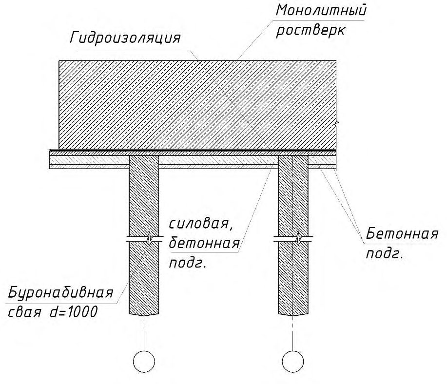
Б.2 Узлы аутригерных стальных конструкций рекомендуется выполнять с учетом рисунка Б.2.
Рисунок Б.2 - Примеры выполнения узлов аутригерных ферм
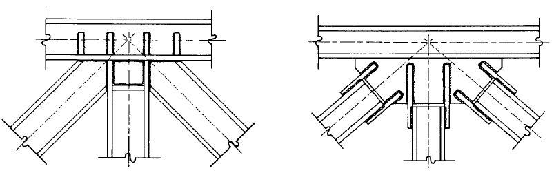
ВПриложение В (рекомендуемое). Геотехнический мониторинг
В.1 Геотехнический мониторинг высотного здания заключается в наблюдениях за состоянием самого объекта строительства, включая ограждающую конструкцию, массивом грунта, окружающего объект строительства (в т. ч. уровнем подземных вод), а также зданий и сооружений (в т. ч. подземных инженерных коммуникаций), расположенных в зоне влияния строительства.
В.2 Число и схему размещения марок, приборов и оборудования для мониторинга выбирают так, чтобы обеспечивалось получение необходимой информации для проверки правильности инженерно-геологических изысканий, выполненных расчетов, принятых проектных решений и качества выполнения строительно-монтажных работ.
В.3 В процессе геотехнического мониторинга высотного здания в общем случае выполняют следующие виды мониторинга:
- осадка и крен фундамента здания;
- послойные деформации грунта основания;
- контактные напряжения под фундаментной плитой;
- усилия в бетоне и арматуре монолитной железобетонной фундаментной плиты или плитного ростверка;
- усилия в сваях (в случае применения свайного фундамента);
- вибрационные воздействия.
Правила применения конкретных видов мониторинга в зависимости от этажности здания представлены в СП 22.13330.
В.4 Измерения осадок фундаментов зданий выполняют с помощью марок, установленных на основных колоннах в подземной части здания, или по верху фундаментной плиты. Измерения проводят стандартным способом (нивелированием), класс точности назначается в зависимости от уровня ответственности сооружений: для высотных зданий - 1-й класс, для остальных - 2-й класс. Число марок для нивелирования следует назначать так, чтобы расстояние между марками не превышало 6-8 м.
В.5 Измерения кренов фундаментов и конструкций подземной части зданий осуществляют с помощью специальных датчиков наклона, представляющих собой электронный уровнемер. Датчики наклона устанавливают по верху плитной части ростверка или фундаментной плиты, а также в центральной части здания и на последнем этаже. При высоте зданий более 200 м датчики могут быть также установлены на промежуточной высоте. Рекомендуемое число датчиков - по одному на каждую сторону ростверка (плиты) или перекрытия.
В.6 Послойные деформации грунта измеряют в основании фундаментной плиты или межсвайном пространстве с помощью специально оборудованных скважин. Каждый фундамент высотного здания оборудуют не менее чем пятью скважинами. Место их расположения определяется представителями НТС и проектной организации с учетом приложения нагрузки, как и в предыдущем случае, в наиболее и наименее нагруженных участках.
В.7 Измерения контактных напряжений под плитой или плитным ростверком проводят с помощью датчиков давления, которые устанавливают под каждой плитой (ростверком) (не менее 20 шт.). Местоположение их должно быть выбрано с учетом приложения нагрузки в наиболее и наименее нагруженных участках.
В.8 Усилия в арматуре и бетоне измеряют в сжимаемой и растянутой зонах. Число датчиков для измерения усилий в арматуре и бетоне назначают по результатам расчетов, по которым выделяют четыре-пять зон наибольших усилий.
В.9 Измерения усилий и деформаций, возникающих в стволе сваи, проводят с помощью датчиков, установленных в арматуре и бетоне нижней и верхней частей свай, а при необходимости - и в средней части (по четыре датчика каждого вида на каждом уровне). Усилия в арматуре и бетоне измеряют струнными датчиками или тензодатчиками. Для проведения измерений оборудуют пять-семь свай на одно здание. Местоположение оборудованных датчиками свай выбирается представителями НТС и проектной организации так, чтобы получить данные по наиболее, средне- и наименее нагруженным сваям.
В.10 Измерения вибрационных воздействий на конструкции здания проводят с помощью акселерометров, установленных на перекрытии верхнего этажа здания.
В.11 Периодичность всех вышеперечисленных измерений в строящемся сооружении - один цикл на четыре-пять построенных этажей.
Пример размещения скважин для определения послойных деформаций грунта, датчиков для измерения усилий в сваях и ростверке, геодезических марок для наблюдения за осадками и креном здания представлен на рисунке В.1.
В.12 Число, периодичность и виды мониторинга ограждающей конструкции котлована, массива грунта, окружающего объект строительства (в т. ч. уровнем подземных вод), а также зданий и сооружений (в т. ч. подземных инженерных коммуникаций), расположенных в зоне влияния строительства, необходимо принимать по СП 22.13330.
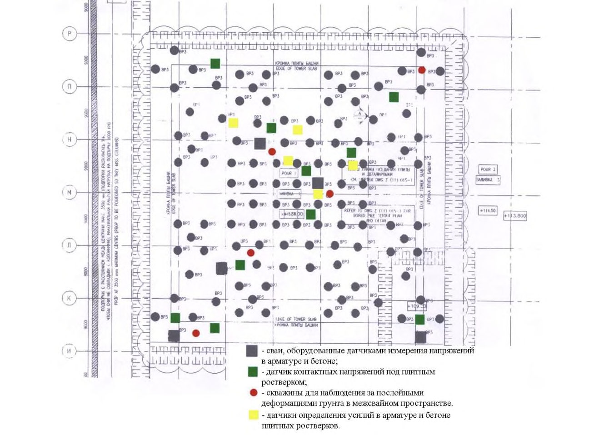
.
Рисунок В.1 - Пример схемы размещения датчиков при геотехническом мониторинге строящегося высотного здания
ГПриложение Г (обязательное). Номенклатура основных систем связи, сигнализации, автоматизации и диспетчеризации высотных зданий
Таблица Г.1
| Функциональные группы | Функциональные группы | Функциональные группы | Функциональные группы | Функциональные группы | Функциональные группы | Функциональные группы | Функциональные группы | Функциональные группы | Функциональные группы | |
|---|---|---|---|---|---|---|---|---|---|---|
| жилого | жилого | назначения общественного | назначения общественного | назначения общественного | назначения общественного | назначения общественного | назначения общественного | назначения общественного | назначения общественного | |
| Система | квартиры | гостиницы | офисы | банки | культурно-просветительные | физкультурно-оздоровительные | здравоохранения | торговли, общественного питания и бытового обслуживания | образования, подготовки кадров | подземные стоянки автомобилей |
| Системы телефонной связи: | ||||||||||
| - система телефонной сети общего пользования | | | | | | | | | | |
| - система телефонной связи с применением УПАТС | | | | | + 7) | + 8) | ||||
| - система оперативной, чрезвычайной телефонной связи | | | | | | | | | | |
| - система диспетчерской (технологической) телефонной связи | 4) | 4) | 4) | 4) | + | |||||
| Системы радиовещания, радиотрансляции, проводного вещания и оповещения: | Системы радиовещания, радиотрансляции, проводного вещания и оповещения: | Системы радиовещания, радиотрансляции, проводного вещания и оповещения: | Системы радиовещания, радиотрансляции, проводного вещания и оповещения: | Системы радиовещания, радиотрансляции, проводного вещания и оповещения: | Системы радиовещания, радиотрансляции, проводного вещания и оповещения: | Системы радиовещания, радиотрансляции, проводного вещания и оповещения: | Системы радиовещания, радиотрансляции, проводного вещания и оповещения: | Системы радиовещания, радиотрансляции, проводного вещания и оповещения: | Системы радиовещания, радиотрансляции, проводного вещания и оповещения: | Системы радиовещания, радиотрансляции, проводного вещания и оповещения: |
| - системы радиовещания и радиотрансляции | | | | | | | | | | |
| - системы УКВ ЧМрадиовещания | 1) | 1) | ||||||||
| - система местного проводного вещания | + | + | + | + 3) | ||||||
| - система оперативной радиосвязи городских служб безопасности и экстренных служб | | | | | | | | | | |
| Телевизионные системы: | ||||||||||
| - системы кабельного телевидения | | | | | | | | | | • |
| - системы спутникового приема телевидения | • | + | • | • | • | • | • | • | • | |
| - местные телевизионные мини- студии | + 9) | • |
СП 267.1325800.2016
| Интернет | + | + 9) | + | + | + 10) | |||||
|---|---|---|---|---|---|---|---|---|---|---|
| Автоматизированная система управления и диспетчеризации инженерного оборудования здания | | | | | | | | | | |
| Системы локальной автоматизации технологического оборудования: | Системы локальной автоматизации технологического оборудования: | Системы локальной автоматизации технологического оборудования: | Системы локальной автоматизации технологического оборудования: | Системы локальной автоматизации технологического оборудования: | Системы локальной автоматизации технологического оборудования: | Системы локальной автоматизации технологического оборудования: | Системы локальной автоматизации технологического оборудования: | Системы локальной автоматизации технологического оборудования: | Системы локальной автоматизации технологического оборудования: | Системы локальной автоматизации технологического оборудования: |
| - система автоматизации приточно- вытяжной вентиляции | | | | | | | | | | |
| - система автоматизации теплоснабжения | | | | | | | | | | |
| - система автоматизации отопления | | | | | | | | | | |
| - система автоматизации водоснабжения | | | | | | | | | | |
| - система автоматизации водоотведения | | | | | | | | | | |
| - система автоматизации электроосвещения | | | | | | | | | | |
| - система автоматизации электроснабжения | | | | | | | | | | |
| - система автоматизации вертикального транспорта | | | | | | | | | | |
| - система автоматизации кондиционирования | + | + | + | + | + | |||||
| - система автоматизации холодоснабжения | + | + | + | + | + | |||||
| - система контроля окиси углерода (СО) | + | |||||||||
| - система контроля загазованности | ║ 5) | ║ 5) | ║ 5) | ║ 5) | ║ 5) | ║ 5) | ║ 5) | ║ 5) | ║ 5) | ║ 5) |
| - автоматизированная система коммерческого учета потребления энергоресурсов | | | | | | | | | | |
| Системы противопожарной защиты: | Системы противопожарной защиты: | Системы противопожарной защиты: | Системы противопожарной защиты: | Системы противопожарной защиты: | Системы противопожарной защиты: | Системы противопожарной защиты: | Системы противопожарной защиты: | Системы противопожарной защиты: | Системы противопожарной защиты: | Системы противопожарной защиты: |
| - автоматизированная система управления активной пожарной защитой | | | | | | | | | | |
| - система автоматической пожарной сигнализации | | | | | | | | | | |
| - система автоматического водяного пожаротушения | | | | | | | | | | |
| - система автоматизации противопожарного водоснабжения | | | | | | | | | | |
| - система автоматизации противодымной защиты | | | | | | | | | | |
| - система автоматизации газового пожаротушения | + 6) | + 6) | + 6) | |||||||
| - система оповещения и управления эвакуацией | | | | | | | | | | |
| - система двухсторонней громкоговорящей связи с диспетчером объекта | | | | | | | | | | |
|---|---|---|---|---|---|---|---|---|---|---|
| Структурированная кабельная система (сеть передачи данных) | 2) | 2) | 2) | 2) | + 3) | |||||
| Локальные вычислительные сети | + 2) | + 2) | + 2) | + 2) | • | • | • 11) + 3) | |||
| Охранные системы: | ||||||||||
| - система охранной сигнализации, система тревожно-вызывной сигнализации | | | | | | | | | | |
| - система видеонаблюдения (охранного телевидения) | | | | | | | | | | |
| - СКУД | + | + | + | |||||||
| - досмотровая техника | + 4) | + 4) | + 4) | + 4) | + 4) | |||||
| Системы мониторинга состояния здания: | Системы мониторинга состояния здания: | Системы мониторинга состояния здания: | Системы мониторинга состояния здания: | Системы мониторинга состояния здания: | Системы мониторинга состояния здания: | Системы мониторинга состояния здания: | Системы мониторинга состояния здания: | Системы мониторинга состояния здания: | Системы мониторинга состояния здания: | Системы мониторинга состояния здания: |
| - структурированная система мониторинга и управления инженерными системами зданий и сооружений с каналом передачи информации в единую систему оперативно-диспетчерского | 16) | 16) | 16) | 16) | 16) | 16) | 16) | 16) | 16) | 16) |
| - система мониторинга основных элементов конструкций здания (СМИК) | 17) | 17) | 17) | 17) | 17) | 17) | 17) | 17) | 17) | 17) |
| Прочие специализированные системы: | Прочие специализированные системы: | Прочие специализированные системы: | Прочие специализированные системы: | Прочие специализированные системы: | Прочие специализированные системы: | Прочие специализированные системы: | Прочие специализированные системы: | Прочие специализированные системы: | Прочие специализированные системы: | Прочие специализированные системы: |
| - электрочасофикация | + | + | + | + | ||||||
| - система управления гостиницей | + | |||||||||
| - звукоусиление залов и помещений | + | + | + | + | + | + 3) | ||||
| - системы видеопроекции | + | + | ||||||||
| - системы кинофикации | + | |||||||||
| - лингафонные системы | + 3) | |||||||||
| - конференц-системы | • 14) | • 14) | • 14) | • 14) | • 14) | |||||
| - системы перевода речи | • 15) | • 15) | • 15) | |||||||
| - местные звуковые мини-студии | • | • |
1) При использовании вместо городской проводной радиотрансляции для передачи сигналов оповещения управления государственного пожарного надзора о ЧС.
2) Для систем жизнеобеспечения и безопасности зданий и других технологических целей (по заданию на проектирование).
3) В образовательных учреждениях.
4) Для служб эксплуатации и безопасности зданий и других технологических целей (по заданию на проектирование).
5) При наличии источников опасных газов.
6) Система, интегрированная в автоматизированный комплекс управления системами активной противопожарной защиты (СП 5.13130).
7) При залах и сценах.
8) В электротехнических помещениях, библиотеках с фондами 500 000 единиц хранения и более и т. п. (СП 5.13130).
- 9) В гостиницах категорий «четыре звезды» и «пять звезд».
- 10) В библиотеках.
- 11) В библиотеках и Интернет-кафе.
- 12) С числом автомобилей более 50.
- 13) В крупных банках или административных зданиях с разветвленной структурой и большим документооборотом или большим движением наличных денег.
- 14) При наличии залов для проведения конференций.
- 15) При наличии залов международного совещательного уровня.
- 16) При наличии систем автоматизации и диспетчеризации - необязательно; в этом случае необходимость устройства определяется заданием на проектирование.
- 17) Для высотных зданий класса КС-2 по ГОСТ 27751-2014, имеющих нормальный уровень ответственности, необязательно. В этом случае необходимость устройства определяется заданием на проектирование. 10. Примечания 11. 1 Приведенными системами оснащают функциональные группы различного назначения, входящие в состав высотных зданий. 12. 2 Обозначения, принятые в настоящей таблице: 13. - обязательные системы, которыми оснащается здание (комплекс) в целом; + - обязательные системы для функциональной группы;
- системы, которыми обычно оснащаются современные функциональные группы для обеспечения их экономической эффективности.
ДПриложение Д. (рекомендуемое)
Методика определения провозной способности и количества пользователей вертикального транспорта
- Д.1 Расчет качества обслуживания вертикальным транспортом выполняется с учетом:
- расчетной заселенности здания;
- расчетной заселенности этажей здания;
- спроса на перевозки в различные периоды времени;
- направления перевозок в течение дня;
- параметров проектируемых или установленных лифтовых настроек и их систем управления.
- Д.2 Основными характеристиками качества обслуживания вертикальным транспортом (таблица Д.1) являются:
- провозная способность (часть населения здания, перевозимая лифтами за 5 мин). В качестве расчетной провозной способности вертикального транспорта здания принимается минимальная провозная способность в течение любого 5-минутного периода в течение дня;
- интервал движения (период времени между открыванием дверей лифта для входа/выхода на обслуживаемом этаже). В качестве расчетного интервала движения принимают максимальный интервал движения во время любого 5минутного периода в течение дня.
- Д.3 Характеристики качества обслуживания вертикальным транспортом, как правило, определяются с помощью компьютерного моделирования. Для некоторых простых случаев возможно выполнение расчетов по упрощенным методикам, приведенным в настоящем приложении.
- Д.4 Основные параметры и размеры пассажирских лифтов с учетом результатов расчетов или моделирования следует принимать по ГОСТ 5746.
Таблица Д.1 Характеристики качества обслуживания вертикальным транспортом
| Характеристики | Отлично | Хорошо | Удовлетворительно |
|---|---|---|---|
| Офисные помещения | Офисные помещения | Офисные помещения | Офисные помещения |
| Провозная способность,% | > 17 | 12-17 | 10-12 |
| Интервал, с | < 30 | 30-40 | 40-50 |
| Жилые помещения | Жилые помещения | Жилые помещения | Жилые помещения |
| Провозная способность,% | > 8 | 5-8 | 3-5 |
| Интервал, с | < 60 | 60-80 | 80-100 |
| Гостиницы | Гостиницы | Гостиницы | Гостиницы |
| Провозная способность,% | > 17 | 12-17 | 9-12 |
| Интервал, с | < 40 | 40-50 | 50-60 |
Д.5Расчетная заселенность
- Д.5.1 Расчетная заселенность зданий принимается в зависимости от площади помещений здания, вида и категории их использования.
- Д.5.2 Расчетная заселенность здания для расчета вертикального транспорта принимается одинаковой с расчетным количеством людей в здании для расчетов инженерных систем, нормируемых площадок благоустройства, транспортного обслуживания объекта по нормативам градостроительного проектирования, технологическим нормативам и заданию на проектирование.
Д.6Спрос на перевозки
- Д.6.1 Спрос на перевозки в различные периоды времени определяется на основании измерения и обобщения спроса в рассматриваемом здании, а для проектируемых зданий и комплексов - на основании измерения и обобщения спроса в аналогичных зданиях или по справочным данным.
- Д.6.2 Спрос на перевозки для моделирования, как правило, приводится в виде шаблонов.
- Д.6.2.1 На рисунке Д.1 и в таблице Д.2 отображена распространенная схема движения людей в лифте офисного здания через основной посадочный этаж. Она демонстрирует число вызовов по направлению вверх и вниз, зарегистрированных в течение рабочего дня.
Рисунок Д.1 - Схема движения людей в лифте офисного здания через основной посадочный этаж
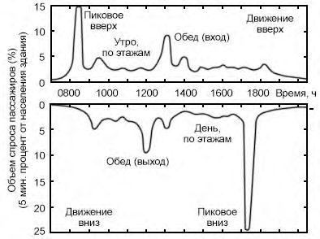
Ориентировочный пиковый спрос на перевозку для разных типов зданий приведен в таблице Д.2.
Таблица Д.2 Пиковый спрос на перевозку
| Тип функциональных компонентов | Пиковый спрос на перевозку за 5 мин,% |
|---|---|
| Жилище | 5-7 |
| Учреждения здравоохранения | 8-10 |
| Гостиницы | 10-15 |
| Бизнес-центры | 11-15 |
| Офисы | 12-17 |
| Учебные заведения | 15-25 |
Д.6.2.2 Офисы
В начале дня наблюдается наибольшее число вызовов по направлению вверх, что связано с прибытием сотрудников на работу. Эта схема движения называется «утреннее пиковое движение вверх». Типичная продолжительность условий пикового движения вверх составляет 5 мин.
В конце дня наблюдается наибольшее число вызовов лифта по направлению вниз, что обусловлено тем, что сотрудники покидают здание в конце рабочего дня. Эта схема движения называется «вечерний пик вниз». Типичная продолжительность условий пика вниз составляет 10 мин.
В середине дня могут наблюдаться одна или две отдельных группы пиков вверх и вниз, что отображает ситуацию, при которой сотрудники здания в разное время совершают один или два перерыва на обед. Эта схема называется «движение в середине дня». Данная схема движения может быть очень интенсивной и сопровождается мощными схемами одновременного движения вверх и вниз. Данное условие движения может продолжаться в течение от 1 до 2 ч в зависимости от установленного графика обеденных перерывов.
В течение остальной части дня число вызовов лифтов вверх и вниз значительно снижается по сравнению с периодами пика вверх и пика вниз, однако оно близко по объему и распределяется равномерно за период времени. Эта схема движения называется «межэтажное движение». Межэтажное движение наблюдается в течение большей части рабочего дня.
Д.6.2.3 Жилые помещения
В жилых помещениях массового и социального типа, где проживает много семей с детьми, определяющим может быть утренний пик вниз, во время выхода из здания по пути в школу и на работу.
Во второй половине дня, как правило, наблюдается двусторонний пассажиропоток, который также может быть определяющим для выбора параметров лифтовой системы.
Д.6.2.4 Гостиницы
Наиболее нагруженным периодом обычно является утреннее время, когда осуществляется регистрация заезда, характеризующееся интенсивным двусторонним движением.
Д.7Расчетные формулы для подбора вертикального транспорта
Д.7.1 Время кругового рейса RTT одного лифта определяется как средний период времени, в течение которого кабина лифта выполняет круговое движение в здании во время пикового подъема, измеряемый с момента, когда двери кабины начинают открываться на главном посадочном этаже, и до момента, когда двери будут открываться на главном посадочном этаже после завершения кругового рейса.
Д.7.2 Время кругового рейса может определяться упрощенным методом со следующими допущениями:
- основной посадочный этаж расположен внизу;
- пассажиры прибывают равномерно во времени;
- все лифты имеют нагрузку в среднем 80 % номинальной вместимости;
- все лифты в группе лифтов одинаковые;
- все этажи заселены одинаково;
- номинальная скорость достигается за прохождение одного этажа;
- высота между этажами одинаковая.
Д.7.3 Если предусмотрена зона безостановочного движения лифта, то она находится между основным посадочным этажом и обслуживаемыми этажами.
Круговой рейс RTT , с, определяют по формуле
здесь H - средний этаж разворота;
S - среднее число остановок выше основного посадочного этажа;
Р - среднее число перевозимых людей;
СС - номинальная вместимость, чел.;
CF - коэффициент загрузки; df - средняя высота между этажами, м; v - номинальная скорость, м/с; t f (1) - время прохождения одного этажа, с; t sd - время задержки включения, с; t c - время закрывания двери, с; t o - время открывания двери, с; t ad - время открывания передней двери, с; t p среднее время перемещения пассажира в кабине, с.
Интервал при пиковом подъеме INT
где L - число лифтов в группе лифтов.
Провозную способность за 5 мин при пиковом подъеме HC определяют по формуле
Провозную способность PHC , выраженную в процентах к расчетной заселенности здания или части здания, обслуживаемой рассматриваемой группой лифтов, определяют по формуле
где U - заселенность здания, чел.
Д.7.4 Справочные данные для расчета приведены в таблице Д.3.
Таблица Д.3 Загрузка кабин лифтов
| Номинальная грузоподъем- ность RL , кг | Номинальная вместимость CC , чел. | Макси- мальная площадь CA , м² | Фактичес- кая загрузка AC , чел. | Коэффи- циент загрузки CF ,% | Число перевозимых пассажиров P | Коэффи- циент загрузки LF ,% |
|---|---|---|---|---|---|---|
| 1 | 2 | 3 | 4 | 5 | 6 | 7 |
| 320 | 4 | 0,95 | 4,5 | 100 | 3,6 | 80 |
| 450 | 6 | 1,30 | 6,2 | 100 | 4,9 | 80 |
| 630 | 8 | 1,66 | 7,6 | 95 | 6,3 | 76 |
| 800 | 11 | 2,00 | 9,5 | 95 | 7,6 | 76 |
| 1000 | 13 | 2,40 | 11,4 | 88 | 9,1 | 70 |
| 1275 | 17 | 2,95 | 13,8 | 81 | 11,0 | 65 |
| 1600 | 21 | 3,56 | 16,9 | 81 | 13,5 | 65 |
| 1800 | 24 | 3,92 | 18,6 | 78 | 14,9 | 62 |
| 2000 | 27 | 4,20 | 20,0 | 77 | 16,0 | 62 |
| 2500 | 33 | 5,00 | 23,8 | 72 | 19,0 | 58 |
Примечание - Графа 7 настоящей таблицы дает рекомендуемый коэффициент загрузки кабин для учета при проведении моделирования.
Д.8 Среднее время перемещения пассажира t p - время, затраченное на вход или выход из кабины лифта. Это время зависит от формы кабины, типа обслуживаемых функциональных компонентов, типа пассажиров (возраст, пол, состояние здоровья), загрузки кабины. Среднее время t p при отсутствии других справочных данных можно принимать с учетом таблиц Д.4, Д.5 и следующих параметров:
- офисы - 0,8-1,2 с;
- гостиницы, жилые помещения - 2 с;
- другие помещения - 1,2 с.
, с, определяют по формуле (Д.2)
Среднее время открывания и закрывания дверей лифтов
СП 267.1325800.2016 Таблица Д.4 -
| Тип двери | Время открывания и закрывания, с, для заданной ширины двери, мм | Время открывания и закрывания, с, для заданной ширины двери, мм | Время открывания и закрывания, с, для заданной ширины двери, мм | Время открывания и закрывания, с, для заданной ширины двери, мм | Время открывания и закрывания, с, для заданной ширины двери, мм | Время открывания и закрывания, с, для заданной ширины двери, мм |
|---|---|---|---|---|---|---|
| Закрывание | Закрывание | Открывание (без открывания заранее) | Открывание (без открывания заранее) | Открывание (с открыванием заранее) | Открывание (с открыванием заранее) | |
| 800 | 1100 | 800 | 1100 | 800 | 1100 | |
| Боковая | 3,0 | 4,0 | 2,5 | 3,0 | 2,0 | 1,5 |
| Центральная | 2,0 | 3,0 | 2,0 | 2,5 | 1,0 | 1,5 |
Таблица Д.5 Значения H и S для кабин лифтов с грузоподъемностью от 6 до 33 человек
| Число обслужи- ваемых | Значения | Значения | Значения | Значения | Значения | Значения | Значения | Значения | Значения | Значения | Значения | Значения | Значения | Значения | Значения | Значения |
|---|---|---|---|---|---|---|---|---|---|---|---|---|---|---|---|---|
| этажей | CC = 6 ( P = 4,8) | CC = 6 ( P = 4,8) | CC = 8 ( P = 6,4) | CC = 8 ( P = 6,4) | CC = 10 ( P = 8,0) | CC = 10 ( P = 8,0) | CC = 13 ( P = 10,4) | CC = 13 ( P = 10,4) | CC = 16 ( P = 12,8) | CC = 16 ( P = 12,8) | CC = 21 ( P = 16,8) | CC = 21 ( P = 16,8) | CC = 26 ( P = 20,8) | CC = 26 ( P = 20,8) | CC = 33 ( P = 26,4) | CC = 33 ( P = 26,4) |
| этажей | H | S | H | S | H | S | H | S | H | S | H | S | H | S | H | S |
| 5 | 4,6 | 3,3 | 4,7 | 3,8 | 4,8 | 4,2 | 4,9 | 4,5 | 4,9 | 4,7 | 5,0 | 4,9 | 5,0 | 5,0 | 5,0 | 5,0 |
| 6 | 5,4 | 3,5 | 5,6 | 4,1 | 5,7 | 4,6 | 5,8 | 5,1 | 5,9 | 5,4 | 6,0 | 5,7 | 6,0 | 5,9 | 6,0 | 6,0 |
| 7 | 6,2 | 3,7 | 6,5 | 4,4 | 6,6 | 5,0 | 6,8 | 5,6 | 6,8 | 6,0 | 6,9 | 6,5 | 7,0 | 6,7 | 7,0 | 6,9 |
| 8 | 7,1 | 3,8 | 7,4 | 4,6 | 7,5 | 5,3 | 7,7 | 6,0 | 7,8 | 6,6 | 7,9 | 7,2 | 7,9 | 7,5 | 8,0 | 7,8 |
| 9 | 7,9 | 3,9 | 8,2 | 4,8 | 8,4 | 5,5 | 8,6 | 6,4 | 8,7 | 7,0 | 8,8 | 7,8 | 8,9 | 8,2 | 9,0 | 8,6 |
| 10 | 8,7 | 4,0 | 9,1 | 4,9 | 9,3 | 5,7 | 9,5 | 6,7 | 9,7 | 7,4 | 9,8 | 8,3 | 9,9 | 8,9 | 9,9 | 9,4 |
| 11 | 9,6 | 4,0 | 10,0 | 5,0 | 10,2 | 5,9 | 10,5 | 6,9 | 10,6 | 7,8 | 10,8 | 8,8 | 10,8 | 9,5 | 10,9 | 10,1 |
| 12 | 10,4 | 4,1 | 10,8 | 5,1 | 11,1 | 6,0 | 11,4 | 7,1 | 11,5 | 8,1 | 11,7 | 9,2 | 11,8 | 10,0 | 11,9 | 10,8 |
| 13 | 11,2 | 4,1 | 11,7 | 5,2 | 12,0 | 6,1 | 12,3 | 7,3 | 12,5 | 8,3 | 12,7 | 9,6 | 12,8 | 10,5 | 12,9 | 11,4 |
| 14 | 12,1 | 4,2 | 12,6 | 5,3 | 12,9 | 6,3 | 13,2 | 7,5 | 13,4 | 8,6 | 13,6 | 10,0 | 13,7 | 11,0 | 13,8 | 12,0 |
| 15 | 12,9 | 4,3 | 13,4 | 5,4 | 13,8 | 6,4 | 14,1 | 7,7 | 14,3 | 8,8 | 14,6 | 10,3 | 14,7 | 11,4 | 14,8 | 12,6 |
| 16 | 13,7 | 4,3 | 14,3 | 5,4 | 14,7 | 6,5 | 15,0 | 7,8 | 15,3 | 9,0 | 15,5 | 10,6 | 15,7 | 11,8 | 15,8 | 13,1 |
| 17 | 14,5 | 4,3 | 15,3 | 5,5 | 15,6 | 6,5 | 16,0 | 8,0 | 16,2 | 9,2 | 16,5 | 10,9 | 16,6 | 12,2 | 16,8 | 13,6 |
| 18 | 15,4 | 4,3 | 16,0 | 5,5 | 16,6 | 6,6 | 16,9 | 8,1 | 17,1 | 9,3 | 17,4 | 11,1 | 17,6 | 12,5 | 17,7 | 14,0 |
| 19 | 16,2 | 4,3 | 16,9 | 5,5 | 17,4 | 6,7 | 17,8 | 8,2 | 18,1 | 9,5 | 18,4 | 11,3 | 18,5 | 12,8 | 18,7 | 14,4 |
| 20 | 17,0 | 4,4 | 17,8 | 5,6 | 18,2 | 6,7 | 18,7 | 8,3 | 19,0 | 9,6 | 19,3 | 11,6 | 19,5 | 13,1 | 19,7 | 14,8 |
| 21 | 17,9 | 4,4 | 18,6 | 5,6 | 19,1 | 6,8 | 19,6 | 8,4 | 19,9 | 9,8 | 20,3 | 11,7 | 20,5 | 13,4 | 20,6 | 15,2 |
| 22 | 18,7 | 4,4 | 19,5 | 5,7 | 20,0 | 6,8 | 20,5 | 8,4 | 20,9 | 9,9 | 21,2 | 11,9 | 21,4 | 13,6 | 21,6 | 15,6 |
| 23 | 19,5 | 4,4 | 20,4 | 5,7 | 20,9 | 6,9 | 21,4 | 8,5 | 21,8 | 10,0 | 22,1 | 12,1 | 22,4 | 13,9 | 22,6 | 15,9 |
| 24 | 20,3 | 4,4 | 21,2 | 5,7 | 21,8 | 6,9 | 22,4 | 8,6 | 22,7 | 10,1 | 23,1 | 12,3 | 23,3 | 14,1 | 23,5 | 16,2 |
Д.9Стандартные шаблоны пассажиропотока
Д.9.1 Шаблоны пассажиропотока могут быть использованы для сравнения различных комбинаций параметров лифтовых установок и результатов моделирования по разным моделям (программам), анализа изменений в качестве обслуживания при изменении параметров лифтов.
Д.9.2 Шаблон представляет собой условный период продолжительностью 1 ч, разделенный на двенадцать 5-минутных интервалов. Для каждого интервала задается спрос на перевозку (число зарегистрированных заявок на перевозку), выраженный в процентах от общей населенности здания или части здания, обслуживаемого(й) группой лифтов.
- Д.9.3 При расчете и моделировании шаблоны пассажиропотока могут использоваться как отдельно, так и одновременно, в зависимости от моделируемой расчетной ситуации.
- Д.9.3.1 Шаблон Ш1 - пиковый пассажиропоток вверх
Шаблон Ш1 представляет пассажиропоток через основной посадочный этаж на обслуживаемые этажи здания.
Шаблон Ш1, как правило, представляет утренний пик вверх в офисном здании (см. рисунок Д.2).
Рисунок Д.2 - Шаблон Ш1
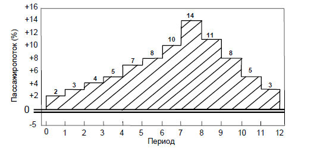
Д.9.3.2 Шаблон Ш2 - пиковый пассажиропоток вниз
Шаблон Ш2 представляет пассажиропоток от обслуживаемых этажей на основной посадочный этаж.
Шаблон Ш2, как правило, представляет пассажиропоток от обслуживаемых этажей на основной посадочный этаж при пике вниз в офисном здании (см. рисунок Д.3).
Рисунок Д.3 - Шаблон Ш2
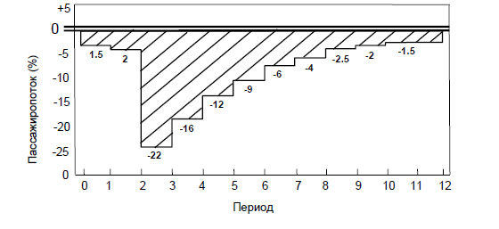
Д.9.3.3 Шаблон Ш3 - пассажиропоток между этажами
Шаблон Ш3 представляет пассажиропоток между обслуживаемыми этажами в обоих направлениях (см. рисунок Д.4).
Шаблон Ш3, как правило, используется совместно с шаблоном Ш4.
Рисунок Д.4 - Шаблон Ш3
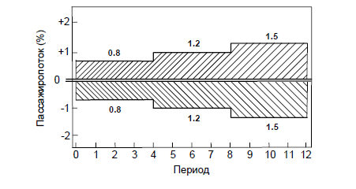
Д.9.3.4 Шаблон Ш4 - пассажиропоток через основной посадочный этаж Шаблон Ш4 представляет двусторонний пассажиропоток через основной посадочный этаж (см. рисунок Д.5).
Шаблон Ш4, как правило, используется совместно с шаблоном Ш3.
Рисунок Д.5 - Шаблон Ш4
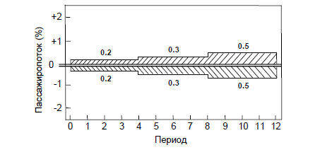
ЕПриложение Е (обязательное). Методика расчета влажностного режима наружных стен с вентилируемым фасадом
- Е.1 Расчет проводят в два этапа. Второй этап расчета выполняют, если после первого этапа расчетов не будет выявлена надежность рассматриваемой конструкции в теплотехническом отношении.
Е.2 На первом этапе для данного конструктивного решения стены назначают размеры приточных и вытяжных щелей.
Выполняют теплотехнический расчет наружной стены с экраном, при котором определяют необходимую толщину теплоизоляции и условия выполнения санитарно-гигиенических требований к внутренней поверхности стены, принимаемые по методике, приведенной в [15].
- Е.3 Выполняют расчет влажностного режима стены [15] с учетом коэффициента паропроницаемости по глади экрана.
- Е.4 При необходимости рассчитывают влажностный режим рассматриваемой конструкции в годовом цикле с учетом средних месячных температур.
- Е.5 Если по результатам расчетов влажностный режим стены удовлетворяет требованиям норм строительной теплотехники, то теплотехнический расчет заканчивают на первом этапе.
Если по результатам расчетов влажностный режим стен не удовлетворяет требованиям, то выполняют второй этап расчетов.
- Е.6 Выполняют расчет влажностного режима стен по методике СП 50.13330 как по глухим частям экранов, так и с учетом стыковых швов [см. формулу (Е.6)].
- Е.7 Оценивают влияние воздухообмена в воздушной прослойке на влажностный режим как по глухой части экранов, так и с учетом стыковых швов. Для этого определяют действительную упругость водяного пара на выходе из воздушной прослойки по формуле
показатели паропроницаемости Mint и Mext , мг/(м² ч Па), равны соответственно:
h - расстояние по вертикали между горизонтальными швами, служащими для поступления или вытяжки воздуха, м;
W - расход воздуха в воздушной прослойке, кг/(м · ч);
Rint s и Rext s - сумма сопротивлений паропроницанию от внутренней поверхности до воздушной прослойки и соответственно от воздушной прослойки до наружной поверхности, м² ч Па/мг; еint и еext - действительная упругость водяного пара с внутренней стороны стены и снаружи соответственно, Па;
- е 0 - упругость водяного пара воздуха, входящего в воздушную прослойку, Па;
В формуле (Е.1) е 0 - действительная упругость водяного пара при температуре входящего в прослойку воздуха [определенной по формуле (Е.2)] и относительной влажности воздуха 85 %.
Температуру воздуха, входящего в воздушного прослойку, определяют по формуле
где n = 0,97; t int и t ext - расчетные температуры внутреннего и наружного воздуха в зимний период года, °C.
Расход воздуха в воздушной прослойке W , кг/(м ч), определяют по формуле
где g - толщина воздушной прослойки, м;
g - плотность воздуха в прослойке, кг/м³ ;
Vg - скорость движения воздуха в прослойке, м/c, определяемая по формуле
здесь Н - разности высот от входа воздуха в прослойку до ее выхода из нее; t аgcр - средняя температура воздуха в прослойке (расстояние между горизонтальными открытыми швами по вертикали);
- - сумма коэффициентов местных сопротивлений (определяется сложением аэродинамических сопротивлений).
Полученное по формуле (Е.1) значение упругости водяного пара на выходе из воздушной прослойки еу , Па, должно быть меньше максимальной упругости водяного пара Еу , Па.
- Е.8 Для определения Еу рассчитывается температура воздуха на выходе из воздушной прослойки (по ее высоте) t аg по формуле
где С = Kint t int + Kext t ext ; d = Kint + Kext ; здесь Kint и Kext - коэффициенты теплопередачи внутреннего и наружного слоев стены до середины прослойки, Вт/(м² °C);
- h -расстояние по вертикали между горизонтальными швами, служащими для поступления или вытяжки воздуха, м;
- с - удельная теплоемкость воздуха, равная 1 кДж/(кг °C).
- Е.9 Расчет приведенного сопротивления паропроницанию экранов с учетом швов-зазоров проводят по формулам (Е.6)-(Е.8).
Условное сопротивление паропроницанию в стыковых швах определяют по формуле
где s - толщина экрана, м;
- суммарная величина местных сопротивлений проходу воздуха.
Сопротивление паропроницанию плит экрана по его глади определяют по формуле
где e - коэффициент паропроницаемости экрана, мг/(м ч Па).
Приведенное условное сопротивление паропроницанию экрана с учетом стыковых швов Rvp r , м² ч Па/мг, определяют по формуле
где F - суммарная расчетная площадь экрана (принимается 1 м² );
F" - площадь экрана без швов, м² ;
F' - площадь открытых швов, м² ;
Rvp и Rvp - см. выше.
Е.10 Если приведенный расчет покажет недопустимое влагонакопление в конструкции стены, то в соответствии с приведенными формулами следует провести весь комплекс расчетов, подбирая такие параметры конструкции, которые бы удовлетворяли требованиям теплотехнических норм СП 50.13330 и условию еу Еу .
ЖПриложение Ж. (рекомендуемое)
Методика теплотехнического расчета наружных стен с навесными фасадными системами
Ж.1 При отсутствии ветрогидрозащитной пленки на внешней границе утеплителя, обращенного в вентилируемый зазор, часть воздушного потока, направленного в прослойку может проходить в утеплитель (минеральную вату) и дополнительно охлаждать стену. При этом температуру внутренней поверхности стены, которая будет ниже, чем без фильтрации, определяют по формуле
где Rint s -сопротивление теплопередаче внутреннего конструктивного (несущего) слоя стены;
где t ag
R зазора;
- температура в вентилируемом зазоре, определяемая по формуле (Е.5); 0 - сопротивление теплопередаче конструкции до вентилируемого
Rx -сопротивление теплопередаче конструкции от внутренней поверхности утеплителя до вентилируемого зазора, определяемое по формуле Rx = R ку + 0,5 Rext , (Ж.3) где R ку - термическое сопротивление утеплителя до вентилируемого зазора; Rext =1 / α ext , здесь α ext - коэффициент теплоотдачи зазора;
С теплоемкость материала, С = 1 в системе СИ;
W - расход воздуха, фильтрующегося через утеплитель, определяемый по формуле
здесь i - коэффициент воздухопроницаемости утеплителя - минеральной ваты, м-ч(даПа) 0,5 /кг.
здесь δ - толщина утеплителя, м; β - по таблице Ж.1;
∆ P 1 0,5 - разность давлений в вентилируемом зазоре и на внутренней поверхности утеплителя; может быть принята равной для жесткой минеральной ваты - ∆ P 0,5 / 25, для мягкой - ∆ P 0,5 / 20, где P 0,5 - разность давлений между воздухозаборным и воздуховыводящим отверстиями.
Ж.2 Формулы для определения коэффициентов воздухопроницаемости, кг/(м² · ч) [(10 Па) ½ ], в зависимости от плотности и толщины слоя минеральной ваты (таблица Ж.1).
Таблица Ж.1
| Наименование значения | При плотности минеральной ваты ρ 0 , /кг/м³ , и толщине δ, м | При плотности минеральной ваты ρ 0 , /кг/м³ , и толщине δ, м | При плотности минеральной ваты ρ 0 , /кг/м³ , и толщине δ, м | При плотности минеральной ваты ρ 0 , /кг/м³ , и толщине δ, м | При плотности минеральной ваты ρ 0 , /кг/м³ , и толщине δ, м | При плотности минеральной ваты ρ 0 , /кг/м³ , и толщине δ, м |
|---|---|---|---|---|---|---|
| сопротивления | жесткая ρ 0 = 180 | жесткая ρ 0 = 180 | полужесткая ρ 0 = 125 | полужесткая ρ 0 = 125 | мягкая ρ 0 = 40 | мягкая ρ 0 = 40 |
| δ, м | δ, м | δ, м | δ, м | δ, м | δ, м | |
| 0,05 | 0,16 | 0,05 | 0,16 | 0,05 | 0,16 | |
| Сопротивление воздухопроницанию R i | 0,2 | 0,6 | 0,05 | 0,14 | 0,015 | 0,044 |
| Коэффициент воздухопроницаемости i | 3,2 | 1,75 | 6,4 | 3,5 | 41 | 22,5 |
| Формула для определения i : в числителе - значение β, в знаменателе - толщина слоя δ | 0,7 √ δ | 0,7 √ δ | 1,4 √ δ | 1,4 √ δ | 9 √ δ | 9 √ δ |
ИПриложение И (обязательное). Характеристики приборов и оборудования для выполнения геодезических работ
Таблица И.1 Электронные тахеометры
| Параметры | Характеристики, не хуже |
|---|---|
| Технические | Угловая точность: 5" Точность измерения расстояния на одну призму, мм: ± (1,5 + 2 · 10 6 · L ) ± (2 + 2 · 10 6 · L ) Дальность измерения на одну призму: 6000 м |
| Эксплуатационные | Ручной или автоматический привод. Операционная система. Автоматическое наведение на цель (в зависимости от модели прибора), точность автоматического наведения, мм: 1,2 на 100 м. Интегрированный или присоединяемый GPS-приемник (в зависимости от модели прибора). Встроенная фотокамера (в зависимости от модели прибора). Масса 6 кг; рабочая температура: от -20 °С до +50 °С |
| Комплектность и дополнительное оборудование | Тахеометр. Треггер. Комплект вех, реек, отражателей (в зависимости от решаемых задач) |
Таблица И.2 - Оптические нивелиры (оптические, электронные)
| Параметры | Характеристики, не хуже |
|---|---|
| Технические | СКП на 1 км двойного хода: ±1,0 мм. Минимальное фокусное расстояние: 0,7 м |
| Эксплуатационные | Автоматический компенсатор уровня. Пылевлагозащитное исполнение. Противоударное исполнение. Масса 2 кг. Рабочая температура: от -20 °С до +50 °С |
| Комплектность и дополнительное оборудование | Штатив. Комплект реек. Набор юстировочных устройств |
Таблица И.3 - Теодолиты (оптические, электронные)
| Параметры | Характеристики, не хуже |
|---|---|
| Технические | СКП измерения: - горизонтального угла - 5"; - вертикального угла - 5". Диапазон работы компенсатора - 5 мин |
| Эксплуатационные | Портативный измерительный прибор. |
| Пылевлагозащитное исполнение. Противоударное исполнение. Масса 5 кг. Рабочая температура: от -20 °С до +50 °С | |
|---|---|
| Комплектность и дополнительное оборудование | Лазерный дальномер в стандартной комплектации |
Таблица И.4 - Спутниковые системы
| Параметры | Характеристики |
|---|---|
| Технические | Прием сигналов спутниковых систем ГЛОНАСС*(РФ)/GPS*(США), Galileo (ЕС), Compass (КНР), QZSS (Япония), IRHSS (Индия) Точность в статике План (не менее): 5 мм + 0,5 мм/км; Высота (не менее): 10 мм + 0,5 мм/км. Точность в кинематике План (не менее): 10 мм + 1 мм/км; Высота (не менее): 15 мм + 1 мм/км |
| Эксплуатационные | Один модуль Bluetooth. Встроенные интерфейсы, модемы, работающие на прием и передачу. Карты памяти до 32 Гб. Рабочие температуры: от -40 о C до +70 о C. Пыле- и влагозащита |
| Комплектность и дополнительное оборудование | Электропитание (аккумуляторная батарея), антенна для радиомодема, адаптер быстрой установки/снятия, транспортировочный футляр |
| * Отслеживание сигналов обязательно. | * Отслеживание сигналов обязательно. |
КПриложение К. (обязательное) Требования к содержанию подраздела «Комплексное обеспечение
безопасности и антитеррористической защищенности»
К.1 В подраздел «Комплексное обеспечение безопасности и антитеррористической защищенности» раздела 12 комплекта проектной документации (см. [12]) должны быть включены текстовая и графическая части.
К.2Содержание текстовой части
1 Характеристика объекта капитального строительства, в которой необходимо привести сведения о высотном здании или комплексе (далее объект) в целом и его важнейших элементах, о принятых градостроительных (с указанием местоположения объекта, его окружении, подъездных путях), объемно-планировочных (в т. ч. организация входов, пути и направления движения людских и транспортных потоков, вертикальный транспорт) и конструктивных решениях, функциональном назначении (в т. ч. подземной и наземной части).
2 Проектные модели (перечни) угроз и модель действий нарушителя.
3 Особенности объекта, оказывающие существенное влияние на комплексное обеспечение безопасности и антитеррористическую защищенность.
4 Описание возможных последствий реализации проектных угроз и возможных кризисных ситуаций.
5 Обоснование перечня мероприятий организационного, технического и специального характера, обеспечивающих защиту территории объекта, отдельных зданий и сооружений объекта, а также персонала (жителей).
6 Обоснование выделения зон доступа на территории и в зданиях объекта с учетом его назначения и порядка функционирования.
7 Определение алгоритмов входа/выхода (въезда/выезда) в выделенные зоны доступа.
8 Обоснование выделения критических элементов и критически важных точек.
9 Обоснование перечня инженерно-технических средств защиты, которыми должен быть оснащен объект.
10 Обоснование и описание состава (перечня) и структуры построения системы комплексного обеспечения безопасности и антитеррористической защищенности.
11 Обоснование достаточности принятых проектных решений по оснащению техническими средствами обеспечения безопасности зон доступа, отдельных помещений, критически важных точек и критических элементов.
- 12 Обоснование алгоритмов взаимодействия систем безопасности объекта с инженерным оборудованием, сетями инженерно-технического обеспечения.
- 13 Обоснование технических решений по обеспечению необходимого времени функционирования (живучести) системы комплексного обеспечения безопасности и антитеррористической защищенности, а также отдельных инженерных систем при возникновении ЧС.
К.3Содержание графической части
1 Генеральный план и поэтажные планы зданий объекта с нанесением на них зон доступа и основных технических решений комплексного обеспечения безопасности и антитеррористической защищенности, в т. ч. размещения постов охраны.
2 Структурная схема системы комплексного обеспечения безопасности и антитеррористической защищенности объекта.
ЛПриложение Л. (справочное)
Системы обеспечения безопасности высотных зданий (комплексов)
- Л.1 В состав систем обеспечения безопасности высотных зданий (комплексов) обычно входят следующие СБЗС (системы или подсистемы):
- 1) заградительных огней;
- 2) аварийного освещения;
- 3) противоаварийной защиты (для инженерных систем, отказ которых может привести к тяжелым последствиям);
- 4) автоматизации противопожарного водоснабжения;
- 5) автоматического водяного пожаротушения;
- 6) газового и порошкового пожаротушения;
- 7) пожарной сигнализации;
- 8) автоматизации противодымной защиты;
- 9) контроля тока утечки;
- 10) контроля воздушно-газовой среды, в т. ч. контроля токсичных паров и газов;
- 11) контроля уровня жидкостей в емкостях и бассейнах;
- 12) контроля биологической защиты;
- 13) контроля радиации;
- 14) объектовая система мониторинга состояния конструкций и основания здания (сооружения);
- 15) объектовая система мониторинга и аварийного управления инженерными системами здания (сооружения);
- 16) охраны периметров;
- 17) охранной и тревожной сигнализации;
- 18) контроля и управления доступом;
- 19) телевизионного наблюдения, включая охранное телевидение;
- 20) охранного освещения;
- 21) эвакуационного освещения;
- 22) обнаружения людей;
- 23) оповещения и управления эвакуацией людей;
- 24) для людей с ограниченными возможностями:
- система телевизионного контроля работы платформ для инвалидов и МГН,
- система автоматизированного открывания эвакуационных выходов для инвалидов и МГН,
- альтернативная система эвакуационного оповещения для людей с ограниченным зрением и/или слухом;
- 25) оперативной связи;
- 26) структурированная кабельная сеть безопасности;
- 27) защиты информации;
- 28) выявления террористических средств.
Л.2 Приведенный перечень может быть ограничен или дополнен другими инженерными подсистемами.
Конкретный перечень СБЗС высотного здания (комплекса) определяется проектировщиком на стадии разработки проектной документации.
Библиография
- [1] Федеральный закон от 30 декабря 2009 г. № 384-ФЗ «Технический регламент о безопасности зданий и сооружений»
- [2] Федеральный закон от 23 ноября 2009 г. № 261-ФЗ «Об энергосбережении и о повышении энергетической эффективности и о внесении изменений в отдельные законодательные акты Российской Федерации»
- [3] Федеральный закон от 22 июля 2008 г. № 123-ФЗ «Технический регламент о требованиях пожарной безопасности»
- [4] Федеральный закон от 29 декабря 2004 г. № 190-ФЗ «Градостроительный кодекс Российской Федерации»
- [5] Федеральный закон от 27 декабря 2002 г. № 184-ФЗ «О техническом регулировании»
- [6] Федеральный закон от 10 января 2002 г. № 7-ФЗ «Об охране окружающей среды»
- [7] Федеральный закон от 30 марта 1999 г. № 52-ФЗ «О санитарноэпидемиологическом благополучии населения»
- [8] Федеральный закон от 24 июня 1998 г. № 89-ФЗ «Об отходах производства и потребления»
- [9] Федеральный закон от 4 мая 1999 г. № 96-ФЗ «Об охране атмосферного воздуха»
- [10] Федеральный закон от 6 марта 2006 г. № 35-ФЗ «О противодействии терроризму»
- [11] Постановление Правительства Российской Федерации от 25 января 2011 г. № 18 «Об утверждении Правил установления требований энергетической эффективности для зданий, строений, сооружений и требований к правилам определения класса энергетической эффективности многоквартирных домов»
- [12] Постановление Правительства Российской Федерации от 16 февраля 2008 г. № 87 «О составе разделов проектной документации и требованиях к их содержанию»
- [13] Технический регламент Таможенного союза ТР ТС 011/2011 «Безопасность лифтов» (утвержден решением Комиссии Таможенного союза от 18 октября 2011 г. № 824)
- [14] ПУЭ Правила устройства электроустановок
- [15] СП 23-101-2004 Проектирование тепловой защиты зданий
- [16] СП 31-107-2004 Архитектурно-планировочные решения многоквартирных жилых зданий
- [17] СП 31-110-2003 Проектирование и монтаж электроустановок жилых и общественных зданий
- [18] СП 53-101-98 Изготовление и контроль качества стальных строительных конструкций
- [19] СН 481-75 Инструкция по проектированию, монтажу и эксплуатации стеклопакетов
- [20] РД 34.21.122-87 Инструкция по устройству молниезащиты зданий и сооружений
- [21] СО 153-34.21.122-2003 Инструкция по устройству молниезащиты зданий, сооружений и промышленных коммуникаций
- [22] ГКИНП 01-271-03 Руководство по созданию и реконструкции городских геодезических сетей с использованием спутниковых систем ГЛОНАСС/GPS
- [23] ОНД-86 Методика расчета концентраций в атмосферном воздухе вредных веществ, содержащихся в выбросах предприятий
- [24] Рекомендации по проектированию озеленения и благоустройства крыш жилых и общественных зданий и других искусственных оснований. М.: ЦНИИПромзданий, 2000. - 64 с., ил.
- [25] Рекомендации по проектированию зданий с вентиляционными устройствами, утилизирующими тепло. - М.: ЦНИИЭПжилища, 1988
- [26] Рекомендации по проектированию энергоэкономичных жилых и общественных зданий с применением наружных ограждений с рекуперацией тепла. - М.: ЦНИИЭП жилища, 2012
- [27] МДС 11-19.2009 Временные рекомендации по организации технологии геодезического обеспечения качества строительства многофункциональных высотных зданий
- [28] Положение о верификации программных средств, применяемых при определении напряженно-деформированного состояния, оценке прочности и деформативности конструкций, зданий и сооружений. Утверждено Президиумом РААСН (протокол заседания Президиума РААСН от 25 ноября 2016 г. № 11). - М.: РААСН, 2016